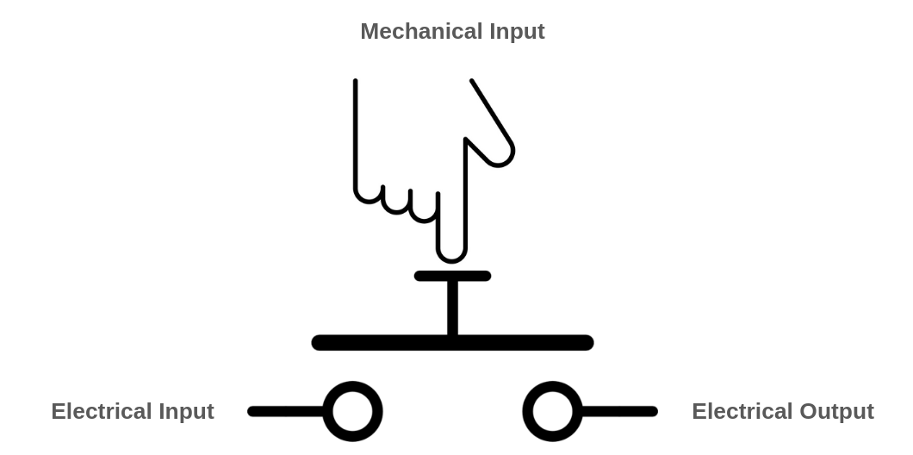
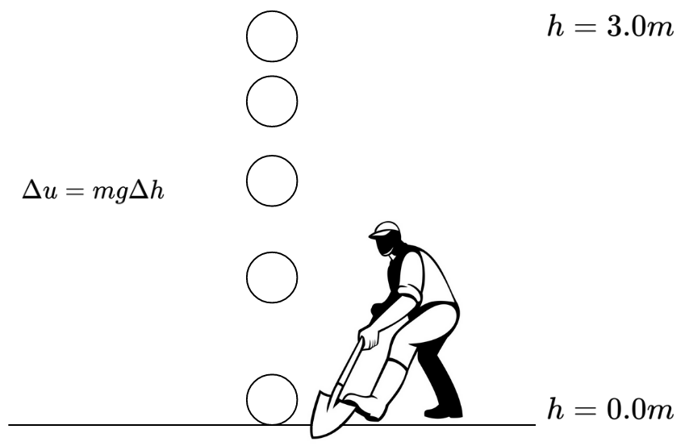
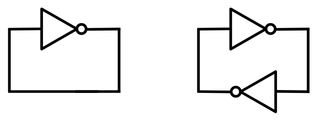
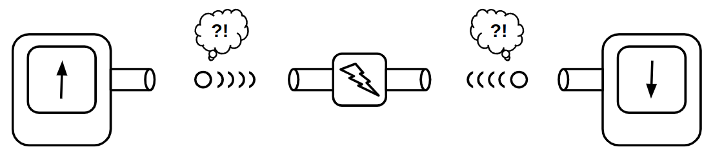
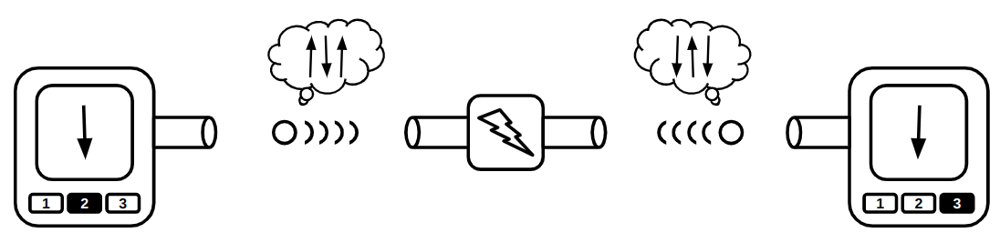
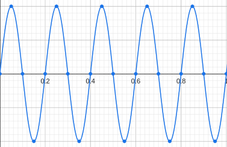
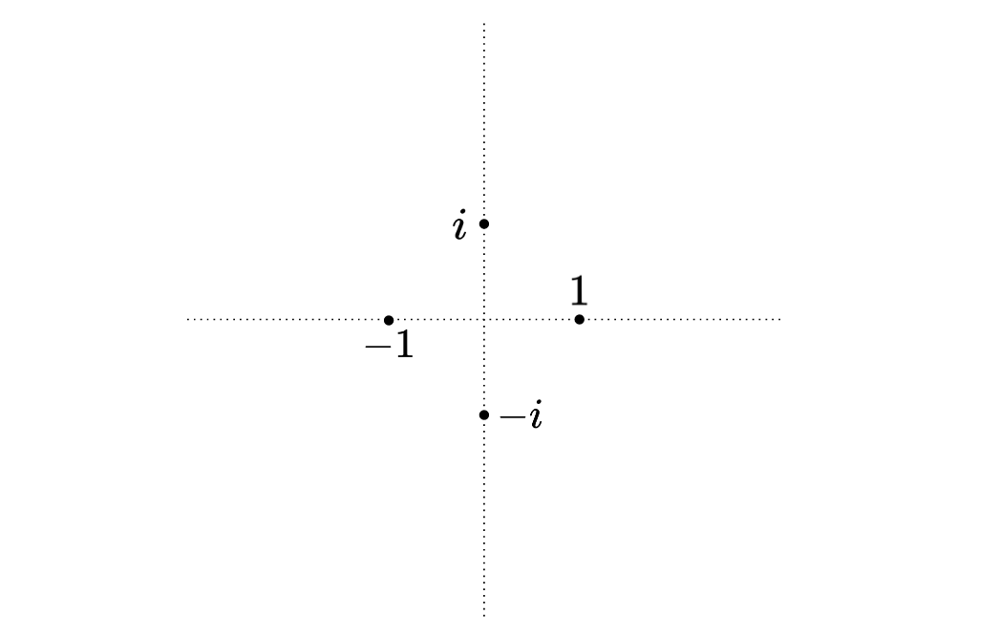
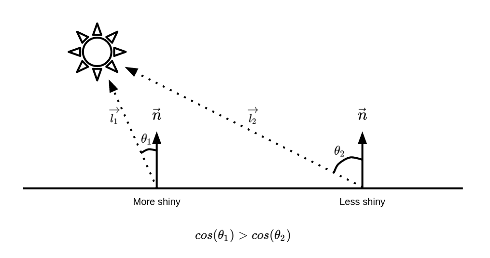

The Super Programmer
Existential Rambling
February 16th, 2024
OpenAI, the legendary AI company of our time, has just released their new product, Sora, an AI model capable of generating one minute of mind-blowingly high-quality video content given a text prompt. I’m scrolling through Twitter, watching the sample outputs, feeling extremely jealous of those who have had the opportunity to contribute to building it, and I also feel a bit of emptiness. I’m thinking about how this would affect the video industry and Hollywood. How many people’s work will become meaningless just after this? And for me, there is also a disturbing question:
Does it make any sense for me to write this book at all? If a machine is able to generate convincingly real videos, how hard would it be for it to write a tutorial book like this? Why would I put any effort in if anyone is able to generate their customized masterpiece in seconds?
I know this will happen someday, and I'm not against it. I truly appreciate the fact that I was born in an era when the AI revolution is happening. AI will someday be able to generate better content than we can, and many of our efforts will simply become unnecessary. In my opinion, that future is not far off.
Anyway, my temporary existential crisis in this moment made me immediately pick up my phone and express my heartbreak and sadness in the very first section of this book. Perhaps this is the only way I could convince myself to continue writing a book: by pouring some real human soul into it.
February 25th, 2024
A few days have passed, and I rarely see people talking about Sora. It’s starting to become normal, I guess. People who were excited at first are now finding Sora boring. I just realized there is something called “Hedonic Adaptation.” It argues that humans will always return to a stable level of happiness, despite positive or negative changes in their lives. This happens with the advancement of technology all the time. At first, we are all like "woah," and after some time, everything already gets boring. Although this may seem unfair, it drives us humans to progress because, you know, being stuck is boring.
I can’t imagine how many "woah" moments humans have had throughout history. Things we have in our hands right now seem like miracles for people living 300 years ago, but in our days, old technology seems basic and trivial.
I really hope this book will be able to fulfill its purpose: to make the interested reader appreciate what it took for us to reach this level of advancement in the computer-driven technology.
Preface
The book you're about to read is the result of exploring various areas in computer science for over 15 years. The idea of writing this book began around 8 years ago when I was a high-school student, getting ready for college. At that time, my focus was on learning computer graphics and 3D rendering algorithms. The idea of generating 3D images by manually calculating the raw RGB values of pixels intrigued me, and I'm the kind of person who wants to teach everyone the exciting things I have learned. Unfortunately, not everyone I knew at that time was interested in learning low-level stuff like this. Instead of trying to teach what I had learned, I decided to write a book. I was confident I'd have an audience, as many programmers worldwide are eager to learn more than just web-application development (a common career path among software engineers).
So, I started writing the book, named it "Programming the Visuals," and made a lot of progress! Not sure what happened exactly, but I got a bit discouraged after finding it hard to fill a book with content. I found myself explaining everything I wanted to explain in less than 40 pages, and well, 40 pages are not enough for a technical book. I didn't want to clutter my book with all the details of different rendering algorithms. I just wanted to explain the core idea, in very simple words and with easy-to-understand code examples. My goal was to introduce this specific field of computer science to people, hoping they would get encouraged enough to learn anything else they'd need by themselves.
My computer graphics book remained untouched for years, during which I took a bachelor's degree in computer engineering and started to learn about other interesting fields of computer science. University was one of the places where I got clues on what I have to learn next, although I have to admit, most of my knowledge was gained by surfing around the internet and trying to make sense of things by myself. University professors do not really get deep into what they teach (Unless you are from a top-notch university, I'm not talking about the exceptions). University courses though will give you a lot of headlines that you'll have to get deeper in them all by yourself, and that makes sense too; you can't expect to get outstandingly good in everything in a relatively short period of time. Chances are you will get specialized knowledge in only one of the fields of computer science.
The fact that success often comes from getting deep in only one of the many fields of computer science didn't stop me from learning them (It did take a long time though). After getting comfortable with generating pixels, I started to learn about building computers from bare transistors, writing software that can compose/decompose sounds, crafting neural networks from scratch, implementing advanced cryptographic protocols, rolling out my own hobby operating system, and all kind of the nerdy things many average software developers, specially those who are self-taught, avoid learning (Or just have not had the opportunity to do so).
[SHOULD I KEEP THIS?] You might think, being a highly talented hardware engineer doesn't necessarily mean one is proficient in other aspiring (yet simple!) ideas only known to physicists, mathematicians, cryptographers, and engineers involved in areas beyond computer software and hardware. These topics remain vital for developing many fascinating forms of software, so I decided to learn them all.
The result? I transformed myself from an average programmer who can only build web-applications into a programmer that knows the starting point of building any kind of computer software/hardware and hopefully can help get the progress of computer-related technology back on track in case a catastrophic event happens on Earth and all we have is gone (This is something that I think about a lot!).
After boosting my knowledge by learning all those things, I felt that it's time to extend my 40-page computer graphics book, and the result is this book!
Support
If you enjoy what I'm writing and would like to support my work, I would appreciate crypto donations! I attempted to distribute my work through computer programming publishers, but the consensus is that these kinds of tutorials won't sell well. Therefore, I have decided to continue TSP as an open-source hobby project!
- Bitcoin:
bc1qjvcsjt57des7j4runchxalksueqlxgadx7fwll - Ethereum:
0x1a34a6763f55887444ffbd8f8d4fae8197478675
Also, I'm thinking of allowing anyone to contribute in writing and editing of this book, so feel free to submit your shiny PRs!
GitHub: https://github.com/keyvank/tsp
Intro
Legos were my favorite toys as a kindergarten student. They were one of the only toys I could use to build things that didn't exist before. They allowed me to bring my imagination into the real world, and nothing satisfies a curious mind more than the ability to build unique structures out of simple pieces. As I grew up, my inner child's desire to create took a more serious direction.
My journey into the fascinating world of computer programming began around 20 years ago, when I didn't even know the English alphabet. I had a cousin who was really into electronics at that time (surprisingly, he is in medicine now!). He had a friend who worked in an electronics shop, and he used to bring me there. We would buy and solder DIY electronics kits together for fun. Although I often heard the term "programming" from him, I had no idea what it meant until one day when I saw my cousin building the "brain" of a robot by typing characters on a screen and programming something he called a "microcontroller". The process triggered the same parts of my brain as playing with Lego pieces.
I didn't know the English alphabet then, so I just saw different symbols appearing on the screen with each keystroke. The idea that certain arrangements of symbols could cause unique behaviors in the robot he was building, just blew my mind. I would copy and paste codes from my cousin's book onto his computer just to see the behaviors emerge when I input some kind of "cheat-code". I began to appreciate the power of characters. Characters became my new Lego pieces, but there was an important difference: it was impossible to run out of characters. I could literally use billions of them to build different behaviors.
After around 20 years, I still get super excited when I build something I find magnificent by putting the right symbols in the right order. I was curious enough to study and deeply understand many applications of computers that have made significant impact in our everyday life but nobody gives them the attention they deserve these days, so I decided to gather all these information in one place and write this book.
When I started writing this book, I was expecting it to be a merely technical book with a lot of codes included, targeting only programmers as its audience, but I ended up writing a lot of history, philosophy and even human anatomy! So the book could be a good read for non-programmers too!
The Super Programmer is all about ideas, and how they have evolved through time, leading to the impressive technology we have today. I wanted this book to have least dependency to technologies, so that the codes do not get obsolete over time. I first thought of writing the codes in some pseudo-coding language, but I personally believe that pseudo-codes are not coherent enough, so I decided to choose and stick with a popular language like Python, which as of today, is a programming language that is known by many other engineers and scientists.
Throughout this book, I’m going to show you the inspirations that human beings got from the nature, in order to build technology. Humans themselves have always been a great source of inspiration for building tech.
You are going to read the phrase “The Creator” in this book a lot of times. The Creator can have different meanings for different people. Religious people may interpret it as God, and people with materialistic views may interpret it as the nature and the process of evolution. Either way, there is no doubt that there has been immense amount of intelligence behind the mind who/which created life. Engineering ideas that The Creator used to build life has been a great source of inspiration for the technology we have today. In many parts of the book, we are going to put our feet into The Creator's shoe and try to understand what has been going in its/his mind when engineering us.
Who is this book for?
This book is for curious people who are eager to learn some of the most fundamental topics of computer and software engineering. The topics presented in this books, although very interesting in opinion, are some of the most underrated and least discussed fields of computer programming. This book is about the old technology, the technology we are using everyday, but we refuse to learn and extend as an average engineer. The literature around each of those topics is so large that, only specialists will ever be motivated to learn them.
The Super Programmer is for the programmers who don't want to limit their knowledge and skills on a very narrow area of software engineering. The Super Programmer is for programmers who can't sleep at night when they don't exactly understand how something in their computer works.
There is a famous quote, attributed to Albert Einstein, which says: 'You do not really understand something unless you can explain it to your grandmother.'. Not only I emphasize on this quote, I would like to extend this quote and claim that, you don't understand something unless you can explain it to your computer. Computers are dumb. You have to explain them every little detail, and you can't skip anything. If you are able to describe a something to a computer in a way that it can correctly simulate it, then you surely understand that thing!
Computers give you the ability to test and experiment stuff without actually owning the physical version of them. You can literally simulate an atomic bomb in your computer and throw it in your imaginary world to see what happens. You can simulate a rocket that travels to Mars, as a tiny step, towards your dream of opening a space company. You can describe a 3D environment, and try to understand how it feels to be there, by putting your imaginary eyes in there and calculating what it will perceive, as a computer image. Computers let you to experiment anything you can ever imagine without spending anything other than some of your time and talent.
The Super Programmer is going to show you "what can be done", and not "how can be done". You are not going to learn data-structure and algorithms here, but you are going to learn how you can embrace your creativity by using simple tools you already know. Thus in many parts of this book, we are going to apply the simplest and least-efficient solutions possible, because it's a better way to learn new things.
Some might argue that not all software engineers will ever need to learn any of the topics taught in this book. That's partially true. As an average programmer, you are not going to use any of these knowledge in your everyday work. Even if you do, you are probably not going to get creative and make anything substantially new out of them. Since the book is about the old technology, most of the topics discussed in this book are already studied and developed as much as they could be.
So why are we doing this? There are several reasons:
- You can use the problem-solving strategies and patterns you learn in this book in your everyday job too!
- The book allows you walk through the entire world-map of technology, and when you do this, nothing will be able scare you.
- It's fun!
First Principle Thinking
The Super Programmer is all about reinventing the wheel. Reinventing the wheel is considered a bad practice by many professionals, and they are somehow right. Reinventing the wheel not only steals your focus from the actual problem you are going to solve, but also there is a very high chance you will end up with a wheel that is much worse than wheels already made by other people. There have been people working on wheels for a very long time, and you just can't beat them with their pile of experience. Reinventing the wheel can be beneficial in two scenarios:
-
Learning: If you want to learn how a wheel works, build it yourself, there isn't a shortcut.
-
Full control: If wheels are crucial part of the solution you are proposing for a problem, you may want to build the wheels yourself. Customizing your own design is much easier than customizing someone else’s work.
If you want build a car that is faster than all other cars in the world, don’t try different engines. Build one, otherwise you will at most get something that is only slightly better, and “slightly better” never convinces anyone to buy your car, instead of a well known brand.
Reinventing the wheel is some kind of “First Principle Thinking”. First principle thinking is the practice of questioning all your assumptions and creating solutions from scratch, by putting the most obvious facts (The first principles!) together.
First principle thinking is an important trait that distinguishes successful people from others, because first principle thinking gives you a lot of power over the problem you are going to solve.
An extraordinary chef, doesn’t only know how to make different food. But he knows all the raw ingredients, their taste and how they will match with each other. Again, he knows all the “First principles”. This what allows him to create completely new dishes, something a simple cook can’t do.
I hope I have made my point, and I hope that The Super Programmer will give you all the ingredients you’ll need for making the next brilliant software recipe!
Computer Revolution
Believe it or not, the world has got severely more complicated than how it was 500 years ago. We are living in an era where specializing in really specific and narrow field of science may take a life time. There are 1000x more people in the world and it is almost impossible to think of smth that nobody has ever thought about it before. "Innovation" has become unaccessible to the people in some ways. There are several reasons:
-
We are scared to innovate. People living 500 years ago were not hearing about technology celebrities everyday. They weren't comparing themselves, or their creations, with anyone. So they weren't afraid of building, embracing the most prestigious consequence of being a human. They would just keep the creativity channel of their soul open, and make/write/paint, no matter if someone else is doing a much better job than them. They didn't try to "mimick", they couldn't. This is why what they made were unique, original and special.
-
We don't know where to start. Back then it was possible for someone to learn almost everything. There were people who could paint, write poems, design calendars, expand the border of mathematics, philosopize, cure people and all that at the same time. These people were known as polymaths. Examples of them are the Iranian poet/philosopher/mathematician Omar Khayyam, and the Italian polymath Leonardo DaVinci. We don't and can't have these people nowadays, and that doesn't mean that the human being has declined in anyway. The amount of knowledge produced by people has got too big that no one can ever become a polymath.
This makes us confused. Contradictory to what you think, if you ask someone living 100 years ago to design a build a car gor you, there is a higher chance he will not give up and succeed, because cars made 100 years ago were much simple, this gave people the condfidence to guess how a car works and go for it. For people in our century, guessing how something works seems a wrong approach to building that thing.
Computer software revolutionized the "creativity industry". Computer programming was the first type of engineering requiring the least minimum to delve in. You don't need a big luxorious workshop to build a great software. You don't need extensive understanding of math and physics to amaze people with your software. You will never run out of materials, because you just don't need it. In fact the uilding blocks of a software are characters, imaginary bricks that you will never run out of them. All you need is a computer and a text-editor to pour your idea in, and unlike building a physical thing, you exactly know what is the first thing one should build in the world of programming:
> Hello World!
Synchronous vs Asynchronous Engineering
As someone who has never made anything sophisticated other than software, I find building and engineering “physical” things much harder than developing computer programs.
I had some claims that software engineering is very different than other, more classical fields of engineering such as mechanical or electrical engineering. Talking with people building non-software stuff, I figured that they also find building software hard and non trivial.
After some thinking, I decided to categorize engineering into two fields: Synchronous vs Asynchronous
Synchronous engineering is all about designing solutions based on orderly applied subsolutions. The most obvious example of such engineering, is software engineering. When building a computer program, you put some instructions (Sub-solution, you have the assumption that the instruction works as expected all the time) in the right order. Designing the manufacturing line is a kind of synchronous engineering too. Newer Subsolutions does not have impact on the previous subsolutions. You can add new stuff to your list of instructions, and expect that all previous instructions and their behavior would remain intact.
In Asynchronous engineering on the other hand, order is not involved. The final solution is composed of subsolutions, but there isn’t any order, and all the subsolutions are applied at the same time. Examples are, designing a building, a car engine, an electronics circuit and etc. When designing a car engine, unlike software, you must have a general idea of how the final product would look like, otherwise your solution could be totally wrong. Subsolutions heavily influence each other, and adding a new component can possible break other things.
The Cult of Done
I wasn't quite sure if I have to publish the draft version of the book on the internet or not. Writing a book is hard. It's probably one of the most difficult things one can do in his life, and it needs passion and persistence. I got discouraged multiple times, I wasn't sure if people are going to like my content at all. So I decided to publish the very incomplete draft of the book anyway. Fortunately, there were a few people who skimmed through the draft and liked it.
These little feedback were great source of encouragement for me, convincing me to keep writing.
How to make the most of this book?
The book is divided into 5 chapters. We will start by explaining the beauty of cause-and-effect chains, and how we can build useful and interesting structures by connecting simple lego pieces together. We will go through the history of transistors, how they work, and how we can simulate them using plain Python code. We will implement different logic gates by connecting transistors together, and will proceed to building more complicated circuits like adders, counters and finally, programmable computers. After building our super simple computer, we'll try to put a soul in it. We will introduce the Brainfuck programming language and how it can be compiled for our computer, and will try to design and implement impressively complicated programs using this simple language.
In chapter 2 and 3, we'll discuss two of the most important human senses, the sense of hearing and vision. We will start with some history, explaining how how humans invented ways to record what they see or hear, as photos or tapes, and experience them later. Then we will see how the digital revolution changed the way we record and store media forever. We'll get deep on very simple computer file formats used for storing images and audio, and will try to generate them ourselves. We will learn how to please our ears and eyes by generating a bunch of bytes.
Chapter 4 is all about the cool parts of artificial intelligence. We will discuss how biological neurons are similar to tunable electronic gates, and how we can use calculus and differentiations to tune these gates. We will try to build a library for training neural networks by differentiating computation graphs. We will learn and implement some of the most import operations used in neural-network models that can understand language, and will try to implement a language model ourselves.
Chapter 5 is about how people can use math for bringing trust into their wild digital world. We will start by learning the history of cryptography, and how people can encrypt and sign digital documents with their digital identities. We will discuss the electronic-cash revolution and see how math can help us to save ourselves from the evil and escape some of the limitations governments put on us. We will discuss ways we can convincingly prove people that we know something, without revealing it, and see how we can use these methods for building truly private cryptocurrencies.
The last chapter is all about ways computers and software can get a physical body and have physical interactions with the world surrounding us. We will discuss multiple topics in Physics, including classical mechanics and how we can use it in order to simulate our world in our computers, or build machines that can send humans on Mars by analyzing and exploiting those laws. We will also get deeper in Electronics, the giant beast that many computer-engineers (Even the good ones) are unable to fully understand, although it is the fundamental building block of computers. Like all other chapters, our approach is to build physics engines and circuit simulators in order to fully understand the concept.
Without a doubt, people love things they have built on their own more than anything else. If you are planning to implement the codes in this book on your own, I suggest you to do it in a programming language other than Python. Writing the codes in Python might make you feel you are not doing anything new, and you may really end up copying and pasting what you read in the book. On the other hand, by rewriting all the logic in another language, you will force yourself to translate what you are reading, leading to a much deeper understanding of what is happening. It will also give you the feeling of creating something new, increasing your dopamine levels and motivation!
What do I need to know?
As previously noted, although the book is about ideas and not the implementations, and I didn't want to make the contents in this book dependent on a specific programming language, I still chose to write the codes in a real programming language instead of using pseudo-codes. Pseudo-codes assume that the reader is a human and does not have the coherency of a real programming language, which is what we care in this book.
I found Python programming language a good choice, since it's the first (Or second?) most popular language among all the developers in the world. I thought Python is the English language of the programmer community. Python isn't the right choice for implementing many of the topics we are discussing in this book (Since efficiency is very important in most of them), but it's one of the easiest languages you can use for prototyping things and learning the concepts.
Therefore you will need to know the basics of Python programming. Some knowledge of *NIX operating systems can become handy in some parts of the book.
How did I write this book?
As someone who had never written a book before, I found the process very unclear. I wasn't sure what text-editing software/format I should use for easier conversion to other formats. I had to add a lot of code-snippets and math equations in my book, so clearly Microsoft Word wasn't the most convenient option (At least I wasn't sure how can I do it efficiently with a word-processor like Microsoft Office). Besides that, I am personally not a fan of LaTeX. I find the syntax hard and I wasn't really willing to learn LaTeX and I wanted to put my focus on writing the actual text instead. My choice was Markdown language. It is very easy to use and there are plenty of software out there which I can use for converting a .md file to .html, .pdf, .tex and etc. Also, in case I needed to perform some costum, automated transformations on my text, Markdown is one of the easiest languages to parse and generate!
I wrote different chapters in separate .md files, and then I wrote a Makefile to concatenate all of them in a single .pdf file. I then used a Linux program named pandoc for doing so.
Here is how my Makefile script looked like:
pdf:
pandoc --toc --output=out.pdf *.md # Convert MD files to a PDF file
pdfunite cover.pdf out.pdf tsp.pdf # Add the book cover
pdftotext tsp.pdf - | wc -w # Show me the word-cound
The --toc flag generated the Table of Contents section for me automatically (Based on Markdown headers: #, ##, ...), and I also had another .pdf file containing the cover of my book, which I concatenated with the pandoc's output. I was tracking my process by word-count.
Build!
Music of the chapter: Computer Love - By Kraftwerk
Which came first? The chicken or the egg?
Imagine, for a second, that a catastrophic event occurs, causing us to lose all the technology we once had. Nothing but ashes will remain, and our situation will be similar to that of humans millions of years ago, with one difference: We still can read, and fortunately, there are plenty of books available explaining how our modern technology worked. Now here is an interesting question: How much time will it take to reach the point of advancement we are in right now?
My prediction is that we will get back on track only after a few decades, and the only reason this could take longer than expected is that we will need tools for building other tools. Obviously, we can't start building a modern CPU even though we have the specification and the detailed design of that CPU. We will first need to rebuild tools that we need for building complex electronic circuits. If we are completely out of technology (as we assumed), we will need to learn again how we can find and extract the materials we want from the earth and use them to build the simple tools we'll need, which will then be used for building more complicated tools. Here is a very important fact that makes all the technological progress we have had viable: technology can help accelerate its own creation!
Just like the chicken and egg paradox, I was always wondering how people built the very first compilers and assemblers. What language did they use for describing the very first assembly languages? Did they have to write the early assembler programs directly in 0s and 1s? After a bit of research, I figured that the answer is yes. In fact, as an example, the process of building a C compiler for the first time is as follows:
- You write a C compiler directly in machine-assembly (Or some other language),
- You'll rewrite the same C compiler in C.
- You'll compile the new source-code using the compiler written in assembly.
- Now you can completely ignore the assembly implementation, and assume that, your C compiler was written in C in the first place!
See this beautiful loop here? Technology maintains and reproduces itself, which kind of means, technology is a form of life! The simpler computer language (in this example, machine-assembly) helped the C-compiler to emerge, but after the compiler started to live, it could stand on its own feet. We won't need the machine-assembly implementation of it anymore, since there is nothing preventing us from describing a C-compiler in the C programming language! The phenomena is not limited to software. You can use a hammer for building new hammers!
Now let's get back to our original question. Which one was first, the chicken or the egg? If you look through the history of evolution, you will see that the creatures millions of years ago were not reproducing by dropping eggs. Basic living cells, for example, never had to reproduce like that; they would only cut themselves into two pieces. As living creatures get more complicated, phenomena like dropping eggs will "slowly" start to emerge. The very first chicken-like animal, which started to lay eggs, didn't necessarily come out of an egg. It could just be a mutation that brought about the egging behavior for a new generation, just like how a C compiler started to live, without depending on an assembly implementation of it!
When the dominos fall
If you ask someone who is really into computers about how computers work at very deep levels, he will most probably start by telling you about electronic switches, transistors, and logic gates. Well, I'm also going to do the same, but in a slightly different way! Even though transistors are the basic building blocks of almost all modern computers, the real magic that makes computers do their thing is something I'd like to refer to as "Cause & Effect" chains.
I would like you to start by listing a few examples of "Cause & Effect" scenarios that happen in everyday life. Here is my list (please think and add yours too):
- You press a key on your computer -> A character appears on the screen -> END
- You push the first domino -> The next domino falls -> The next domino falls -> ...
- You ask someone to open the window -> He opens the window -> END
- You tell a rumor to your friend -> He tells the rumor to his friend -> ...
- You toggle the switch -> The light bulb turns on -> END
- A neuron fires in your brain -> Another neuron gets excited as a result and fires -> ...
Now, let's think about why some of these cause-and-effect chains keep going on and on, while others stop after just a few steps. Why do some things set off a series of events, while others don't?
There's a crucial pattern here: The long-lasting (i.e., interesting) effects emerge from cause-and-effect chains where the effects have the same type as the causes, which essentially means these chains are interesting when they can form cycles. For instance, when a "mechanical" cause has another "mechanical" effect (like dominos), or when an "electrical" cause leads to another electrical effect (like electronic circuits, or neurons in your brain).
The most complex thing you can create with components that transform a single cause into a single effect is no different than a chain of falling domino pieces (another example is when rumors circulate in a company). It's still impressive and has its interesting aspects, but we don't want to stop there. The real magic starts happening when you transform multiple causes into a single effect (all with the same types). That's when Cause & Effect chains truly shine!
A simple example of a multi-input/single-output component is a switch. A switch manages the flow of an input to an output through a third controlling input. Light-switches, push-buttons and faucets (A faucet allows you to control the flow of water in a pipe) are examples of switches. Unfortunately, in the given examples, the type of the controlling input is not the same with other inputs/outputs. For example, the controlling input of a push-button is mechanical, while the others are electrical. You still need a finger to push the button, and the output of a push button cannot be used as the mechanical input of another button. Therefore, you can't build domino-like structures and long-lasting cause-and-effect chains using faucets or push-buttons with push-buttons!

A push-button becomes more interesting when the controlling is done via a electrical input instead of mechanical. In this case, all of its inputs and outputs will have the same types, and you may connect the output of a push-button to the controlling input of another push-button.
Also in the faucet example, you may build a special kind of faucet, than can be opened by a force of water, instead of needing a person to open it:

There is also an interesting implication: the controller input doesn't need to be as wide or as strong as the other input/outputs. It can be a thinner pipe, that can open the gate with a realtively small force of water. In fact, you may control the flow of a huge water stream using a much smaller water input.
Now, a transistor is no different than our imaginary faucet described above. Substitute the water with electrons, and you'll have a very accurate definition and analogy of a transistor. Transistors, which are the building block of modern computers, allow you to control the flow of electrons in a wire, using a third source of electrons!
We won't delve deep into the inner workings of transistors just yet, but let's assume that transistors are components capable of converting electrical causes into electrical effects. This ability allows us to connect them together and create interesting things. In essence, transistors can be accurately described as switches, quite similar to push-buttons but with a key difference. A push-button is a component that accepts an electrical and a mechanical input, producing an electrical output, while in a transistor, the types of all inputs and the output, is electrical.
Before starting to think of a electrical switch that can be controlled through an electrical cause, be aware that sometimes a cause/effect conversion is actually the result of many other cause/effect conversions chained together, occurring under the hood. For example, consider a light bulb connected to a push-button. In this system, the process begins with a person pushing the switch, initiating a mechanical action. Right after that, the mechanical cause triggers an electrical effect, and the electrical cause produces a visual effect, which eventually results in neural effects in your brain. The entire process converts a mechanical cause into a neural effect that can be sensed by a human brain. (Notice how new converters can be built by connecting/chaining other primitive converters.)
Now, here is a very stupid example of a push-button that has an electrical controller: Imagine there is a human that has a wire in his hand. This person pushes the push-button when he feels electricty in his hand (Of course if the electricity is not strong enough to kill him). The person and the push-button together will form something like a transistor, because now the types of all of the inputs/outputs of the system is the same. It might be the strangest thing in the world, but if you have enough of these transistors connected with each other, you can theoritically build computers out of it that can connect to the internet and render webpages!
Now that you understand why something like a transistor might be handy, let's talk about transistors themselves. Formally speaking, a transistor is a resistor (An electronic component that resists against flow of electrons) that its resistance can transform according to a third electrical input. A transistor is something that can convert two electrical causes into single electrical effect. Transistors are very interesting candidates for building computers, because:
- They can convert causes to effects of the same type, directly! (Electricity)
- They can be made in very small sizes (Nanometers?).
- They are very fast!
Because of these properties, we can build complicated and dense cause/effect chains and get interesting behaviors out of it by consuming very small amount of space (E.g your smartphone).
Taming the electrons
Now that you know the philosophy behind building something like a transistor, it's the time to see what can be done with a transistor. Our approach is to try simulating imaginary transistors in a computer and make them do fancy computations for us by putting them in the right order.
Our goal is not to design and implement a production-level transistor circuit. If that was the case we would need to describe our circuits in a HDL (hardware-description-language) and synthesize it on real silicone. Since this book is about ideas and not real implementations, we will skip the effort needed to learn an HDL, and instead, we will try to emulate the same concepts in Python programming language. This will not only give us a much better understanding of the transistor-level implementation of something as complicated as a computer, but also help us to learn how exactly HDL languages translate high-level description of a circuit into a bunch of transistors!
So let's begin and build our own circuit simulator! The most important and basic elements in our circuit emulations will be wires. Wires, as their name suggest, are basically conductors, usually made of metal that allow our components to connect to each other, and talk to each other through the flow of electricity. The most important property of a wire is its voltage.
Before going further, it is crucial to understand the meaning of voltage. Formally, voltage is defined as the potential energy difference between two points of a circuit. Let's forget about electricity for a while and try to understand the concept by talking about heights. You know that it takes energy to pick up something heavy from the ground. The more you lift a heavy object, the more energy it is consumed (Because you get tired right? You need to get the energy back by eating food!). The law of conservation of energy says that, energy can neither be created nor destroyed; rather, it can only be transformed or transferred from one form to another. So, where does the consumed energy go when you lift something up?
Release what you have in your hand and let it fall. The heavy object will hit the ground, make a bang song, and it might even break the ground (Or itself). The more height the object has from the ground, the more damage it will make. It is also obvious that, energy is needed in order to make noises and damages. Where did that energy come from?
Now you know the answer! When you lifted the heavy object, you actually gave energy to it, and when you let it fall, the energy you gave got released! Physicist call this energy as potential energy. A lifted object has the potential to do work (Work is done by consuming energy), that's probably why we refer it as potential energy!
If you remember high-school physics, you know that the potential energy of an object can be calculated with the formula: \(u=mgh\) where \(m\) is the mass of the object, \(h\) is its height from the ground, and \(g\) is earth's gravity constant (Which is around \(9.807\)). Given this formula, when the object lies on the ground, \(h\) is 0 thus the potential energy is also 0. A very important question, does that mean, an object that lies on the ground does not have any potential energy? Well, it has! Take a shovel, dig the ground under the object, and the object will fall into the hole. The point is, the equation is giving you the potential difference, not the actual potential energy of that object! A more correct version of that equation would be: \(\varDelta{u}=mg\varDelta{h}\), which says, the potential energy difference between two points A and B is \(mg\) times the difference of their heights! It's relative!

The reason it takes energy to lift an object roots back to the fact that giant masses attract each other, a.k.a the universal law of gravitation (\(F=G\frac{m_1m_2}{r^2}\)). Since a very similar law also exists in the microscopic world (Electrons attract protons and defeat electrons, \(F=k_e\frac{q_1q_2}{r^2}\)), we have a similar concept of "potential energy" in the electromagnetic world too. It takes energy to pull two electrical charges of different types (Positive/Negative) from each other, and when you do so, and then release them, they will start moving to each other and release their energy.
That's basically the way batteries work, they try to make potential differences by moving electrons to higher "heights", and when you let them fall (By connecting a wire from the negative pole of the battery to the positive pole), the electrons will start to fall through the wire. So when we say "Voltage", we mean a difference of height/potential-energy. We don't exactly know what is the absolute height/potential-energy of points A and B, but we certainly know the height/potential difference!
Wires
Enough explanation, lets jump into the code. Now that we know the concept of voltage, we can emulate an electrical wire. Our model of a wire is a piece of conductor which has a certain "height" (Voltage!). We'll use instances of wires to feed the inputs of our gates and retrieve their outputs. Normally, in electronic circuits, there are only two possible voltages, representing logical zeros and ones, so it might make sense to allow our Wires to only accept two different states. In the real world however, you might make mistakes while designing your circuits. You might connect the ends of your wire to endpoints with different voltages, causing short-circuits, in this case, the voltage of the wire might become something unpredictable. Or you might also forget to connect your wire to anything at all. In these cases, the voltage of the wire represents neither 0 nor 1.
A wire in our emulation can have 4 different states:
- Free (The wire is not connected to anything)
- Zero (The wire is connected to the ground thus has 0 voltage)
- One (The wire has a voltage of 5.0V)
- Unknown (We can not determine if the wire is 0 or 1)
By default, a wire that is not connected to anywhere, is in the "Free" state. When you connect it to a gate/wire that has a state of One, the wire's state will also become One. A wire can connect to multiple gates/wires at the same time. The wire will get into the Unknown state when you connect it to two other wires/gates with conflicting values. E.g. if the wire is connected to both Zero and One sources at the same time, it's state will be Unknown.
We can calculate the truth table of wire logic to better understand the concept:
| A | B | A + B |
|---|---|---|
| Z | Z | Z |
| 0 | Z | 0 |
| 1 | Z | 1 |
| X | Z | X |
| Z | 0 | 0 |
| 0 | 0 | 0 |
| 1 | 0 | X |
| X | 0 | X |
| Z | 1 | 1 |
| 0 | 1 | X |
| 1 | 1 | 1 |
| X | 1 | X |
| Z | X | X |
| 0 | X | X |
| 1 | X | X |
| X | X | X |
A wildcard version of this table would look like this:
| A | B | A + B |
|---|---|---|
| Z | x | x |
| x | Z | x |
| X | x | X |
| x | X | X |
| 0 | 0 | 0 |
| 1 | 1 | 1 |
| 0 | 1 | X |
| 1 | 0 | X |

Based on our definition of a wire, we can provide a Python implementation:
FREE = "Z"
UNK = "X"
ZERO = 0
ONE = 1
class Wire:
def __init__(self):
self._drivers = {}
self._assume = FREE
def assume(self, val):
self._assume = val
def get(self):
curr = FREE
for b in self._drivers.values():
if b == UNK:
return UNK
elif b != FREE:
if curr == FREE:
curr = b
elif b != curr:
return UNK
return curr if curr != FREE else self._assume
def put(self, driver, value):
is_changed = self._drivers.get(driver) != value
self._drivers[driver] = value
return is_changed
The code above models a wire as a Python class. By definition, a wire that is not connected to anything remains in the Z (Free) state. Through the put option, a driver (Which can be a battery, or a gate), may drive that wire with some voltage. The final voltage of your wire is then decided by iterating over all of the voltages that are applied to your wire. The reason we are storing the voltage values applied to the wire in a dictionary is that, we don't want a single driver to be able to drive the wire two different values.
The put function will also check if there has been a change in the values applied on the wire. This will later help our simulator to check if the circuit being simulated has reached to a stable state, in which the values of all the wires remain fixed.
Sometimes (Specifically in circuits containing feedback-loops and recursions), it's necessary to assume a wire already has some value to converge to a solution, thus we have designed an assume() function to set a assumed value for a wire, in case no gates have drived value into it). If you don't understand what assume() function does yet, don't worry. We'll see its usage in the next sections.
Magical switches
The most primitive element in a digital system (And our simulation) is a transistor. A transistor is an electrical domino piece. It converts electrical causes to electrical effects. In very simple terms, a transistor is an electrically controlled switch. There are 3 wires involved which are known as base, emitter, and collector. The base wire is the controller of the switch. An electrical potential between the base and collector wires will cause the emitter wire to get connected with the collector wire. In other words, the base wire will decide if emitter and collector are connected with each other or not. The collector will collect electrons and the emitter will emit them.
https://upload.wikimedia.org/wikipedia/commons/3/37/Transistor.symbol.npn.svg
By observing the behavior of a transistor we will soon know that:
- If the potential-difference between the collector and base is high, the emitter pin will get connected to the collector pin.
- Otherwise, the emitter pin will be no different than a floating wire.
The second point is very important. It means that, turning the transistor off doesn't put the emitter pin on ZERO state, but it will put it on FREE state! Based on these, we can model a transistor using a truth-table like this:
| B | E | C |
|---|---|---|
| 0 | 0 | Z |
| 0 | 1 | Z |
| 1 | 0 | 0 (Strong) |
| 1 | 1 | 1 (Weak) |
The transistor we have been discussing so far was a Type-N transistor. The Type-N transistor will turn on when the base wire is driven with a a high potential. There is also another type of transistor, know as Type-P, which will get turned on in case of a low voltage. The truth table for a Type-P transistor is something like this:
| B | E | C |
|---|---|---|
| 0 | 0 | 0 (Weak) |
| 0 | 1 | 1 (Strong) |
| 1 | 0 | Z |
| 1 | 1 | Z |
Assuming we define a voltage of 5.0V as 1 and a voltage of 0.0V as 0, a wire is driven with a strong 0, when its voltage is very close to 0 (E.g 0.2V), and it's a strong 1 when its voltage is close to 5 (E.g 4.8V). The truth is, the transistors we build in the real world aren't ideal, so they won't always give us strong signals. A signal is said weak when it's far from 0.0V or 5.0V, as an example, a voltage of 4.0V could be considered as a weak 1 and a voltage of 1.0V is considered as a weak 0, whereas 4.7V could be considered as a strong 1 and 0.3V could be considered as a strong 0. Type-P transistors that are built in the real world are very good in giving out strong 0 signals, but their 1s are weak, on the other hand, Type-N transistors give out very good 1 signals, but their 0s are weak. Using the help of those two types of transistors at the same time, we can build logic gates that give out strong output in every case.
Primitives
In our digital circuit simulator, we'll have two different types of components: Primitive components and components that are made of primitives. We'll define our components as primitives when we can't describe them as a group of smaller primitives.
As an example, we can simulate Type-N and Type-P transistors as primitive components:
class NTransistor:
def __init__(self, in_base, in_collector, out_emitter):
self.in_base = in_base
self.in_collector = in_collector
self.out_emitter = out_emitter
def update(self):
b = self.in_base.get()
if b == ONE:
return self.out_emitter.put(self, self.in_collector.get())
elif b == ZERO:
return self.out_emitter.put(self, FREE)
elif b == UNK:
return self.out_emitter.put(self, UNK)
else:
return True # Trigger re-update
class PTransistor:
def __init__(self, in_base, in_collector, out_emitter):
self.in_base = in_base
self.in_collector = in_collector
self.out_emitter = out_emitter
def update(self):
b = self.in_base.get()
if b == ZERO:
return self.out_emitter.put(self, self.in_collector.get())
elif b == ONE:
return self.out_emitter.put(self, FREE)
elif b == UNK:
return self.out_emitter.put(self, UNK)
else:
return True # Trigger re-update
Our primitive components are classes with an update() function. The update() function is called whenever we want to calculate the output of that primitive based on its inputs. As a convention, we are going to prefix the input and output wires of our components with in_ and out_ respectively.
The update function of our primitive components are also going to return a boolean value, which indicates if the element needs a re-update or not. Sometimes, the inputs of a component might not be ready when the update function is called. In the transistor examples, when the base wire is in FREE state, we assume that there is another transistor that need to be update()ed before the current transistor can calculate its output. By returning this boolean value, we'll let our circuit emulator know that the transistor is not "finalized" yet, and update() needs to be called again before deciding that all of the outputs of all components have been correctly calculated and the circuits is stabilized.
Also remember that the put() function of the Wire class also returns a boolean value. This value indicates if the driver of that wire has put a new value on the wire. A new value on a wire means that there has been a change in the circuit and the whole circuit needs to be updated again.
The circuit
Now, it'll be nice to have a data structure for keeping track of wires and transistors allocated in a circuit. We will call this class Circuit. It will give you methods for creating wires and adding transistors. The Circuit class is responsible for calling the update() function of the components and it will allow you to calculate the values of all wires in the network.
class Circuit:
def __init__(self):
self._wires = []
self._comps = []
self._zero = self.new_wire()
self._zero.put(self, ZERO)
self._one = self.new_wire()
self._one.put(self, ONE)
def one(self):
return self._one
def zero(self):
return self._zero
def new_wire(self):
w = Wire()
self._wires.append(w)
return w
def add_component(self, comp):
self._comps.append(comp)
def num_components(self):
return len(self._comps)
def update(self):
has_changes = False
for t in self._comps:
has_changes = has_changes | t.update()
return has_changes
def stabilize(self):
while self.update():
pass
The update() method of the Circuit class tries to calculate the values of the wires by iterating through the transistors and calling their update method. In case of circuits with feedback loops, things are not going to work as expected with a single iteration of updates, and you may need to go through this loop several times before the circuit reaches a stable state. We introduce an extra method designed for reaching the exact purpose: stabilize. It basically performs update several times, until no changes is seen in the values of wires, i.e it gets stable.
Our Circuit class will also provide global zero() and one() wires to be used by components which need fixed 0/1 signals.
Our electronic components can be defined as methods which will add wires and transistors to a circuit. Let’s go through the implementation detail of some of them!
Life in a non-ideal world
Digital circuits are effectively just logical expressions that are automatically calculated by the flow of electrons inside what we refer as gates. Logical expressions are defined on zeros and ones, but we just saw that wires in an electronic circuit are not guaranteed to be 0 or 1. So we have no choice but to re-define our gates and decide what their output should be in case of faulty inputs.
Take a NOT gate as an example. The truth table of a NOT gate in an ideal world is this:
| A | NOT A |
|---|---|
| 0 | 1 |
| 1 | 0 |
However, things are not ideal in the real-world, and wires connected to electronic logic gates could have unexpected voltages. Since a wire can have 4 different states in our emulation, our logic gates should also handle all the 4 states. This is the truth table of a NOT gate which gives you X outputs in case of X or Z inputs:
| A | NOT A |
|---|---|
| 0 | 1 |
| 1 | 0 |
| Z | X |
| X | X |
There are two ways we can simulate gates in our simulator software. We either implement them through plain Python code, as primitive components just like transistors, or we describe them as a circuit of transistors. Here is an example implementation of a NOT gate using the former approach:
class Not:
def __init__(self, wire_in, wire_out):
self.wire_in = wire_in
self.wire_out = wire_out
def update(self):
v = self.wire_in.get()
if v == FREE:
self.wire_out.put(self, UNK)
elif v == UNK:
self.wire_out.put(self, UNK)
elif v == ZERO:
self.wire_out.put(self, ONE)
elif v == ONE:
self.wire_out.put(self, ZERO)
We can also test out implementation:
if __name__ == '__main__':
inp = Wire.zero()
out = Wire()
gate = Not(inp, out)
gate.update()
print(out.get())
The Not gate modeled in this primitive component is accurate and works as expected, however, we all know that a Not gate itself is made of transistors and it might be more interesting to model the same thing through a pair of transistors, instead of cheating and emulating its high-level behavior through a piece of Python code.
Here is an example of a NOT gate, built with a type P and a type N transistor:
def Not(circuit, inp, out):
circuit.add_component(PTransistor(inp, circuit.one(), out))
circuit.add_component(NTransistor(inp, circuit.zero(), out))
[NOT gate with transistors]
Not gates are the simplest kind of components we can have in a circuit, and now that we've got familiar with transistors, it's the time to extend our component-set and build some of the most primitive logic-gates. Besides NOT gates, you might have heard of AND gates and OR gates which are slightly more complicated, mainly because they accept more than one input. Here is their definition:
AND gate: is zero when at least one of the inputs is zero, and gets One when all of the inputs are one. Otherwise the output is unknown.
| A | B | A AND B |
|---|---|---|
| 0 | * | 0 |
| * | 0 | 0 |
| 1 | 1 | 1 |
| X |
OR gate: is one when at least one of the inputs is one, and gets zero only when all of the inputs are zero. Otherwise the output is unknown.
| A | B | A OR B |
|---|---|---|
| 1 | * | 1 |
| * | 1 | 1 |
| 0 | 0 | 0 |
| X |
Mother of the gates
A NAND gate is a logic-gate that outputs 0 if and only if both of its inputs are 1. It's basically an AND gate which its output is inverted. It can be proven that you can build all of the primitive logic gates (AND, OR, NOT), using different combinations of this single gate:
- \(Not(x) = Nand(x, x)\)
- \(And(x, y) = Not(Nand(x, y)) = Nand(Nand(x, y), Nand(x, y))\)
- \(Or(x, y) = Nand(Not(x), Not(y)) = Nand(Nand(x, x), Nand(y, y))\)
It's the mother gate of all logic circuits. Although, it would be very inefficient to build everything with NANDS in practice, for the sake of simplicity, we'll stick to NAND and will try to build other gates by connecting NAND gates to each other.

It turns out that we can build NAND gates with strong and accurate output signals using 4 transistors (x2 Type-N and x2 Type-P). Let's prototype a NAND using our simulated N/P transistors!
def Nand(circuit, in_a, in_b, out):
inter = circuit.new_wire()
circuit.add_component(PTransistor(in_a, circuit.one(), out))
circuit.add_component(PTransistor(in_b, circuit.one(), out))
circuit.add_component(NTransistor(in_a, circuit.zero(), inter))
circuit.add_component(NTransistor(in_b, inter, out))
Now, other primitive gates can be defined as combinations of NAND gates. Take the NOT gate as an example. Here is a 3rd way we can implement a NOT gate (So far, we have had implemented a NOT gate by 1. Describing its behavior through plain python code and 2. By connecting a pair of Type-N and Type-P transistors with each other):
def Not(circuit, inp, out):
Nand(circuit, inp, inp, out)
Go ahead and implement other primitive gates using the NAND gate we just defined. After that, we can start making useful stuff out of these gates.
def And(circuit, in_a, in_b, out):
not_out = circuit.new_wire()
Nand(circuit, in_a, in_b, not_out)
Not(circuit, not_out, out)
def Or(circuit, in_a, in_b, out):
not_out = circuit.new_wire()
Nor(circuit, in_a, in_b, not_out)
Not(circuit, not_out, out)
def Nor(circuit, in_a, in_b, out):
inter = circuit.new_wire()
circuit.add_component(PTransistor(in_a, circuit.one(), inter))
circuit.add_component(PTransistor(in_b, inter, out))
circuit.add_component(NTransistor(in_a, circuit.zero(), out))
circuit.add_component(NTransistor(in_b, circuit.zero(), out))
def Xor(circuit, in_a, in_b, out):
a_not = circuit.new_wire()
b_not = circuit.new_wire()
Not(circuit, in_a, a_not)
Not(circuit, in_b, b_not)
inter1 = circuit.new_wire()
circuit.add_component(PTransistor(b_not, circuit.one(), inter1))
circuit.add_component(PTransistor(in_a, inter1, out))
inter2 = circuit.new_wire()
circuit.add_component(PTransistor(in_b, circuit.one(), inter2))
circuit.add_component(PTransistor(a_not, inter2, out))
inter3 = circuit.new_wire()
circuit.add_component(NTransistor(in_b, circuit.zero(), inter3))
circuit.add_component(NTransistor(in_a, inter3, out))
inter4 = circuit.new_wire()
circuit.add_component(NTransistor(b_not, circuit.zero(), inter4))
circuit.add_component(NTransistor(a_not, inter4, out))
An Xor gate is another incredibly useful gate which comes handy when building circuits that can perform numerical additions. The Xor gate outputs 1 only when the inputs inequal, and outputs 0 when they are equal. Xor gates can be built out of AND/OR/NOT gates: \(Xor(x,y) = Or(And(x, Not(y)), And(Not(x), y))\), but since Xors are going to be pretty common in our future circuits, it makes more sense to provide a transistor-level implementation of them, this way, they will take less transistors!
Sometimes we just need to connect two different wires with each other, instead of creating a new primitive component for that purpose, we may just use two consecutive Nots, it'll act like a simple jumper! We'll call this gate a Forward gate:
def Forward(circuit, inp, out):
tmp = circuit.new_wire()
Not(circuit, inp, tmp)
Not(circuit, tmp, out)
Hello World circuit!
The simplest digital circuit which is also useful is something that can add two numbers. Obviously we will be working with bunary numbers. Let's start with a circuit that can add two, one-bit numbers. The result of such an addition is a two bit number.
A nice approach towards building logic such a circuit is to determine what the desired outputs are, for each possible input. Since the output is a 2-bit number, we can decompose such a circuit into two subcircuits, each calculating its corresponding digit.
| A | B | First digit | Second digit |
|---|---|---|---|
| 0 | 0 | 0 | 0 |
| 0 | 1 | 1 | 0 |
| 1 | 0 | 1 | 0 |
| 1 | 1 | 0 | 1 |
The second digit's relation with A and B is very familiar, it's basically an AND gate! Try to find out how the first digit can be calculated by combining primitive gates. (Hint: It outputs 1 only when A is 0 AND B is 1, OR A is 1 AND B is 0)
Answer: It's an Xor gate! (\(Xor(x, y) = Or(And(x, Not(y)), And(Not(x), y))\)), and here is the Python code for it:
def HalfAdder(circuit, in_a, in_b, out_sum, out_carry):
Xor(circuit, in_a, in_b, out_sum)
And(circuit, in_a, in_b, out_carry)
What we have just built is known as a half-adder. With an half-adder, you can add 1-bit numbers together, but what if we want to add multi-bit numbers? Let's see how primary school's addition algorithm works on binary numbers:
1111 1
1011001
+ 111101
-----------
10010110
By looking to the algorithm, we can see that for each digit, an addition of 3 bits is being done (Not just two). So, in order to design a multi-bit adder we'll need a circuit that adds 3 one-bit numbers together. Such a circuit is known as a full-adder and the third number is often referred as the carry value. Truth table of a three bit adder:
| A | B | C | D0 | D1 |
|---|---|---|---|---|
| 0 | 0 | 0 | 0 | 0 |
| 1 | 0 | 0 | 1 | 0 |
| 0 | 1 | 0 | 1 | 0 |
| 1 | 1 | 0 | 0 | 1 |
| 0 | 0 | 1 | 1 | 0 |
| 1 | 0 | 1 | 0 | 1 |
| 0 | 1 | 1 | 0 | 1 |
| 1 | 1 | 1 | 1 | 1 |
Building a full-adder is still easy. You can use two Half-adders to calculate the first digit, and take the OR of the carry outputs which will give you the second digit.
def FullAdder(circuit, in_a, in_b, in_carry, out_sum, out_carry):
sum_ab = circuit.new_wire()
carry1 = circuit.new_wire()
carry2 = circuit.new_wire()
HalfAdder(circuit, in_a, in_b, sum_ab, carry1)
HalfAdder(circuit, sum_ab, in_carry, out_sum, carry2)
Or(circuit, carry1, carry2, out_carry)
Once we have a triple adder ready, we can proceed and create multi-bit adders. Let's try building a 8-bit adder. We will need to put 8 full-adders in a row, connecting the second digit of the result of each adder as the third input value of the next adder, mimicking the addition algorithm we discussed earlier.
def Adder8(circuit, in_a, in_b, in_carry, out_sum, out_carry):
carries = [in_carry] + [circuit.new_wire() for _ in range(7)] + [out_carry]
for i in range(8):
FullAdder(
circuit,
in_a[i],
in_b[i],
carries[i],
out_sum[i],
carries[i + 1],
)
Before designing more complicated gates, let's make sure our simulated model of a 8-bit adder is working properly. If the 8-bit adder is working, there is a high-chance that the other gates are also working well:
def num_to_wires(circuit, num):
wires = []
for i in range(8):
bit = (num >> i) & 1
wires.append(circuit.one() if bit else circuit.zero())
return wires
def wires_to_num(wires):
out = 0
for i, w in enumerate(wires):
if w.get() == ONE:
out += 2**i
return out
if __name__ == "__main__":
for x in range(256):
for y in range(256):
circuit = Circuit()
wires_x = num_to_wires(circuit, x)
wires_y = num_to_wires(circuit, y)
wires_out = [Wire() for _ in range(8)]
Adder8(circuit, wires_x, wires_y, circuit.zero(), wires_out, circuit.zero())
circuit.update()
out = wires_to_num(wires_out)
if out != (x + y) % 256:
print("Adder is not working!")
Here, we are checking if the outputs are correct given all possible inputs. We have defined two auxillary functions num_to_wires and wires_to_num in order to convert numbers into a set of wires which can connect to a electronic circuit, and vice versa.
When addition is subtraction
So far we have been able to implement the add operation by combining N and P transistors. Our add operation is limited to 8-bits, which means, the input and output values are all in the range \([0,255]\). If you try to add two numbers, which their sum is more than 255, you will still get a number in range \([0,255]\). This happens since a number bigger than 255 can not be represented by 8-bits and an overflow will happen. If you look carefully, you will notice that what we have designed isn't doing a regular add operation we are used to in elementary school mathematics, but it's and addition that is done in a finite-field. This means, the addition results are mod-ed by 256:
\(a \oplus b = (a + b) \mod 256\)
It is good to know that finite-fields have interesting properties:
- \((a \oplus b) \oplus c = a \oplus (b \oplus c)\)
- For every non-zero number \(x \in \mathbb{F}\), there is a number \(y\), where \(x \oplus y = 0\). \(y\) is know as the negative of \(x\).
In a finite-field, the negative of a number can be calculated by subtracting that number from the field-size (Here the size of our field is \(2^8=256\)). E.g negative of \(10\) is \(256-10=246\), so \(10 \oplus 246 = 0\).
Surprisingly, the number \(246\), acts really like a \(-10\). Try adding \(246\) to \(15\). You will get \(246 \oplus 15 = 5\) which is equal with \(15 + (-10)\)! This has a important meaning, we can perform subtraction without designing a new circuit! We'll just need to negate the number. Calculating the negative of a number is like taking the XOR of that number (Which is equal with \(255 - a\)), and adding \(1\) to it (Which makes it \(256 - a\) which is our definition of negation). This is known as the two's-complement form of a number.
It's very incredible to see that we can build electronic machines that can add and subtract numbers by connecting a bunch of transistors to each other! The good news is, we can go further and design circuits that can perform multiplications and divisions, using the same thought process we had while designing add circuits. The details of multiplication and division circuits are beyond the scope of this book but you are strongly advised to study them yourself!
Not gates can be fun too!
If you remember, we discussed that you can't build interesting structures using only a single type of single-input/single-output component (such as NOT gates). In fact, we argued that using them we can only make domino-like structures, in which a single cause traverses through the components until reaching the last piece, but that's not totally true: what if we connect the last component of the chain to the first one? This makes a loop, which is definitely a new thing. Assuming two consecutive NOT gates cancel out each other, we can build two different kinds of NOT loops:

After analyzing both of the possible loops, you will soon understand that the one with a single NOT gate is unstable. The voltage of the wire can be neither 0 nor 1. It's like a logical paradox, like the statement: This sentence is not true. The statement can be neither true nor false! Practically, if you build such a circuit, it may oscillate between the possible states very fast. Or the voltage of the wire may end up something between the logical voltages of 0 and 1.
On the other hand, it's perfectly possible for the loop with two NOT gates to get stable. The resulting circuit can be in two-possible states: Either the first wire is 1 and the second wire is 0, or the first wire is zero and the second wire is one. It won't automatically switch between the states. If you build such a circuit using real components, the initial state would be somewhat random. A slight difference in the conditions of the transistors may cause the circuit to slip to the one of states and stabilize there!
Try to remember
What we care about right now is to design a circuit which is able to run arbitrary algorithms for us! An algorithm is nothing but a list of operations that need to be executed. So far we have been experimenting with state-less circuits, circuits that didn't need to memorize or remember anything in order to do their job. Obviously, you can't get much creative with circuits that do now store anything from the past, thus, we are going to talk about ways we can store data on a digital circuit circuit and keep it through time!
When you were a child, you have most probably tried to put a light-switch in a middle state. If the switch had been in good condition and quality, you know how frustrating it can get to do it! The concept of memory emerges when a system with multiple possible states can only stabilize in a single state at a time, and once it gets stable, the state can only be changed by an external force. A light-switch can be used as a single-bit memory cell.
Imagine a piece of paper. It's stable. When you put it on fire, it slowly changes its state until it becomes completely burnt and stabilizes there. It's not easy to keep the paper a middle state. You can use a paper as a single bit memory cell. It's not the best memory cell and the most obvious reason is that you can't turn it back to its unburnt state!
Fortunately, there are ways you can build circuits with multiple possible states, in which only one state can stabilize. The simplest example of such a circuit is when you create a cycle by connecting two NOT gates to each other. There are two wires involved, if the state of the first wire is 1, the other wire will be 0 and the circuit will get stable (And vice versa). The problem with a NOT loop is that you can't control it, so you can't change its state. It doesn't accept inputs from the external world. We can change this: replace the NOT gate with a gate that accepts two inputs instead of one (For example, use a NAND gate instead), and give those extra pins to a user. The user can change the internal state of the loop by giving voltages to the extra pins. The described circuit is also known as a SR-Latch:

Now, the user can put on the first and second state, by setting S=1 and R=0, or setting S=0 and R=1, respectively. After doing so, the user can set both S and R pins to 0. The magic is: the circuit will stably remain on the latest state.

def DLatch(circuit, in_clk, in_data, out_data, initial=0):
not_data = circuit.new_wire()
Not(circuit, in_data, not_data)
and_d_clk = circuit.new_wire()
And(circuit, in_data, in_clk, and_d_clk)
and_notd_clk = circuit.new_wire()
And(circuit, not_data, in_clk, and_notd_clk)
neg_out = circuit.new_wire()
Nor(circuit, and_notd_clk, neg_out, out_data)
Nor(circuit, and_d_clk, out_data, neg_out)
neg_out.assume(1 - initial)
out_data.assume(initial)
In our DLatch component, the wire_out pin is always equal with the internal state of the memory cell. Whenever wire_clk is equal with one, the value of wire_data will be copied into the state, and will stay there, even when we
Simulating such a circuit in our Python simulator is a bit tricky: take a look at the schematic of a DLatch circuit, the input of the Nor cell is dependant on the output of tha latch. If we try to calculate the correct values of wires in a latch component for the first time, the simulation will crash when updating the Nor gate, because not all of its inputs are ready. There are two approaches by which we can fix our simulation:
- Give up, and try to simulate a memory-cell component without doing low-level transistor simulations.
- Break the update loop, when the state of the wires do not change after a few iterations (Meaning that the system has entered a stable state).
Since we want to make our simulation as accurate as possible, we'll go with the second route. We'll just describe our memory-cells as a set of transistors, and will try to converge to a correct solution by using the assume() function of our circuit.

When the clock signal rises up, the first DLatch gets activated and it "Flip"s, and when the clock signal goes down, the first DLatch will get inactive, and the one will get active, and "Flop"s, that's probably why it's called a FlipFlop!
def DFlipFlop(circuit, in_clk, in_data, out_data, initial=0):
neg_clk = circuit.new_wire()
Not(circuit, in_clk, neg_clk)
inter = circuit.new_wire()
DLatch(circuit, in_clk, in_data, inter, initial)
DLatch(circuit, neg_clk, inter, out_data, initial)
Put 8 flip-flops in a row and you will have a 8-bit register!
class Reg8:
def snapshot(self):
return wires_to_num(self.out_data)
def __init__(self, circuit, in_clk, in_data, out_data, initial=0):
self.out_data = out_data
for i in range(8):
DFlipFlop(
circuit,
in_clk,
in_data[i],
out_data[i],
ZERO if initial % 2 == 0 else ONE,
)
initial //= 2
I'm defining Reg8 as a class, to define auxillary methods like snapshot() in order to make it easier to investigate the internal value of a register.
So far, we have been able to design a circuit that stays stable in a single state, and we can set its state by triggering it through an auxillary port we call "enable". This circuit is known as a Latch, and since it's hard to simulate it using bare transistors (Since there will be infinite loops which are unhandled by our simulator, as discussed), we are going to hardcode its behavior using plain Python code. It will have a fairly simple logic. It will accept a data and an enable wire as its inputs, and will have a single output. The output pin will output the current state of the Latch, and when 'enable' is 0, it will ignore the 'data' pin and won't change its state. As soon as the enable pin gets 1, the value of data pin will be copied to the internal state of the latch. We can describe the behavior of a Latch like this:
| Enable | Data | Output |
|---|---|---|
| 0 | 0 | s |
| 0 | 1 | s |
| 1 | 0 | 0 (s <= 0) |
| 1 | 1 | 1 (s <= 1) |
A latch is an electronic component that can store a single bit of information. Later on this book, we will be building a computer with memory-cells of size 8-bit (A.k.a a byte). So it might make sense to put 8 of these latches together as a separate component in order to build our memory-cells, registers and RAMs. We'll just need to put the latches in a row and connect their enable pins together. The resulting component will have 9 input wires and 8 output wires.
Make it count!
Considering that now we know how to build memory-cells and maintain a state in our circuits, we can know build circuits that can maintain an state/memory and behave according to it! Let's build something useful out of it!
A very simple yet useful circuit you can build, using adders and memory-cells, is a counter. A counter can be made by feeding in the incremented value of the output of a 8-bit memory cell, back as its input. The challenge is now to capture the memory cell input value by trigerring the cell to update its inner value by setting its enable pin to 1.
The enable input should be set to 1 for a very VERY short time, otherwise, the circuit will enter and unstable state. As soon as the input of the memory-cell is captures, the output will also change in a short time, and if the value of enable field is still 1, the circuit will keep incrementing and updating its internal state. The duration which the enable wire is 1 should be short enough, so that the incrementor component doesn't have enough time to update its output. In fact, we will need to connect a pulse generator to the enable pin in order to make our counter circuit work correctly, and the with of the pulse should be smaller than the duration by which the output of the incrementor circuit is updated.
One way we can have such pulses is to connect a regular clock generator to an edge-detector. The edge-detector is a an electronic circuit which can recognize sharp changes in a signal.
In the real world, since gates propagate their results with delays, strange things can happen. The gates may output unexpected and invalid results, known as hazards. Take this circuit for example:

When the input is 0, the output of the NOT gate is 1. When the input gets 1, the input wire without a NOT gate will get 1 immediately, but the second input will get 0 with a delay, thus there will be a very small moment where both of the inputs are 1, causing the AND gate to output 1.
Looking carefully to the behavior of this structure, we will notice that it can convert a clock signal into a train of pulses with ultra tiny widths. Let's connect this component to the enable pin of a Latch, so that the latch is updated only when a rise happens in the clock signal. The resulting circuit is known as a FlipFlop. The only difference between a FlipFlop and a Latch is that FlipFlops are edge-triggered while Latches are level-triggered. FlipFlops should be used instead of Latches in order to design synchronous circuits.
Let's simulate all these components and try to implement a counter circuit with FlipFlops:
class EdgeDetector:
pass
class FlipFlop:
pass
class Counter:
def snapshot(self):
print("Value:", self.counter.snapshot())
def __init__(self, circuit: Circuit, in_clk: Wire):
one = [circuit.one()] + [circuit.zero()] * 7
counter_val = [circuit.new_wire() for _ in range(8)]
next_counter_val = [circuit.new_wire() for _ in range(8)]
Adder8(
circuit,
counter_val,
one,
circuit.zero(),
next_counter_val,
circuit.new_wire(),
)
self.counter = Reg8(circuit, in_clk, next_counter_val, counter_val, 0)
if __name__ == "__main__":
circ = Circuit()
clk = circ.new_wire()
OSCILLATOR = "OSCILLATOR"
clk.put(OSCILLATOR, ZERO)
counter = Counter(circ, clk)
print("Num components:", circ.num_components())
while True:
circ.stabilize()
counter.snapshot()
clk.put(OSCILLATOR, 1 - clk.get())
A counter circuit is a great example of how computers can memorize their state and jump to a new state given a past state. The counter circuit is a great starting point for building a computer too. A CPU is basically a circuit which fetches instructions from a memory one-by-one, and runs them in order, effectively transforming the state of the system to a newer state, per instruction.
Let's focus on the part where we want to fetch instructions. The instructions that we are going to fetch reside on a RAM. A RAM allows you to get data in a memory-cell, given the address of that memory cell. Since we are reading the instructions in order, the address given to the RAM can basically be a sequentially increasing number, which is what we can get using a counter circuit!
Chaotic access
Now imagine we have a big number of these 8-bit memory cells which are identified by different addresses. We would like to build an electronic component which enabled us to read and write a memory-cell (Out of many memory-cells), given its address. We will call it a RAM, since we can access arbitrary and random addresses without losing speed (It's hard to randomly move on a disk-storage). In case of a RAM with 256 memory-cells (Each 8-bit), we'll need 17 input wires and 8 output wires.
The inputs are as follows:
- 8 wires, choosing the memory-cell we want to read/write
- 8 wires, containing the data to be written on the chosen cell when enable is 1
- 1 enable wire
And the output will be the data inside the chosen address.
The memory-cells in our RAM will need to know when to allow write operation. For each 8-bit memory cell, enable is set 1 when the chosen address is equal with the cell's address AND the enable pin of the RAM is also 1: (addr == cell_index) & enable
We will also need to route the output of the chosen cell to the output of a RAM. We can use a multiplexer component here.
Now, put many of these registers in a row, and you will have a RAM!
class RAM:
def snapshot(self):
return [self.regs[i].snapshot() for i in range(256)]
def __init__(self, circuit, in_clk, in_wr, in_addr, in_data, out_data, initial):
self.regs = []
reg_outs = [[circuit.new_wire() for _ in range(8)] for _ in range(256)]
for i in range(256):
is_sel = circuit.new_wire()
MultiEquals(circuit, in_addr, num_to_wires(circuit, i), is_sel)
is_wr = circuit.new_wire()
And(circuit, is_sel, in_wr, is_wr)
is_wr_and_clk = circuit.new_wire()
And(circuit, is_wr, in_clk, is_wr_and_clk)
self.regs.append(
Reg8(circuit, is_wr_and_clk, in_data, reg_outs[i], initial[i])
)
for i in range(8):
Mux8x256(
circuit, in_addr, [reg_outs[j][i] for j in range(256)], out_data[i]
)
Soon you'll figure that our simulator is not efficient enough to perform transistor level simulation of RAMs, so it might make sense to cheat a bit and provide a secondary, fast implementation of a RAM, as a primitive component that is described in plain Python code (Just like transistors):
class FastRAM:
def snapshot(self):
return self.data
def __init__(self, circuit, in_clk, in_wr, in_addr, in_data, out_data, initial):
self.in_clk = in_clk
self.in_wr = in_wr
self.in_addr = in_addr
self.in_data = in_data
self.out_data = out_data
self.data = initial
self.clk_is_up = False
circuit.add_component(self)
def update(self):
clk = self.in_clk.get()
addr = wires_to_num(self.in_addr)
data = wires_to_num(self.in_data)
if clk == ZERO and self.clk_is_up:
wr = self.in_wr.get()
if wr == ONE:
self.data[addr] = data
self.clk_is_up = False
elif clk == ONE:
self.clk_is_up = True
value = self.data[addr]
for i in range(8):
self.out_data[i].put(self, ONE if (value >> i) & 1 else ZERO)
return False
Multiplexer
A gate that gets \(2^n\) value bits and \(n\) address bits and will output the values existing at the requested position as its output. A multiplexer with static inputs can be considered as a ROM. (Read-Only Memory)
def Mux1x2(circuit, in_sel, in_options, out):
wire_select_not = circuit.new_wire()
and1_out = circuit.new_wire()
and2_out = circuit.new_wire()
Not(circuit, in_sel[0], wire_select_not)
And(circuit, wire_select_not, in_options[0], and1_out)
And(circuit, in_sel[0], in_options[1], and2_out)
Or(circuit, and1_out, and2_out, out)
def Mux(bits, sub_mux):
def f(circuit, in_sel, in_options, out):
out_mux1 = circuit.new_wire()
out_mux2 = circuit.new_wire()
sub_mux(
circuit,
in_options[0 : bits - 1],
in_options[0 : 2 ** (bits - 1)],
out_mux1,
)
sub_mux(
circuit,
in_sel[0 : bits - 1],
in_options[2 ** (bits - 1) : 2**bits],
out_mux2,
)
Mux1x2(circuit, [in_sel[bits - 1]], [out_mux1, out_mux2], out)
return f
Mux2x4 = Mux(2, Mux1x2)
Mux3x8 = Mux(3, Mux2x4)
Mux4x16 = Mux(4, Mux3x8)
Mux5x32 = Mux(5, Mux4x16)
Mux6x64 = Mux(6, Mux5x32)
Mux7x128 = Mux(7, Mux6x64)
Mux8x256 = Mux(8, Mux7x128)
def Mux1x2Byte(circuit, in_sel, in_a, in_b, out):
for i in range(8):
Mux1x2(
circuit,
[in_sel],
[in_a[i], in_b[i]],
out[i],
)
Computer
Now you know how tranistors work and how you can use them to build logical gates. It's time to build a full-featured computer with those gates!
I would say, the most important parts of a modern computer are its RAM and CPU. I would like to start by explaining a Random-Access-Memory by designing one. It will be the simplest implementation of a RAM and it won't be similar to what it's used in production today, but the idea is still the same.
RAM is the abbreviation of Random-Access-Memory. Why do we call it random access? Because it's very efficient to get/set a value on a random address in a RAM. Remember how optical disks and hard-disks worked? The device had to keep track of the current position, and seek the requested position relative to its current positions. It is efficient only if the pattern of memory access is like going forward/backward 1 byte by 1 byte. But life is not that ideal and many programs will just request very different parts of the memory, which are very far from each other, in other words, it seems so unpredictable that we can call it random.
In order to decode an instruction, we first need a component that can check equality of some bits with others:
def Equals(circuit, in_a, in_b, out_eq):
xor_out = circuit.new_wire()
Xor(circuit, in_a, in_b, xor_out)
Not(circuit, xor_out, out_eq)
def MultiEquals(circuit, in_a, in_b, out_eq):
if len(in_a) != len(in_b):
raise Exception("Expected equal num of wires!")
count = len(in_a)
xor_outs = []
for i in range(count):
xor_out = circuit.new_wire()
Xor(circuit, in_a[i], in_b[i], xor_out)
xor_outs.append(xor_out)
inter = circuit.new_wire()
Or(circuit, xor_outs[0], xor_outs[1], inter)
for i in range(2, count):
next_inter = circuit.new_wire()
Or(circuit, inter, xor_outs[i], next_inter)
inter = next_inter
Not(circuit, inter, out_eq)
The Equals module checks the equality of two input bits (Which is essentially Not(Xor(a,b))!). The MultiEquals module on the other hand, allows us to check equality of two multi-bit inputs. This comes handy especially when we want to decode the instructions that we fetch from memory.
In order to handle the implementation complexity of our CPU, we'll organize our implementation into 5 different modules:
Decodermodule takes an instruction (A 8-bit number) as its input and gives out 6 different boolean flags as its output, specifying the type of instructions.InstructionPointermodule is responsible for choosing the next instruction-pointer.InstructionMemorymodule is a read-only 256-byte memory, giving out the instruction given its 8-bit address.DataPointermodule is responsible for choosing the next data-pointer.DataMemorymodule is a 256-byte memory, allowing you to read/write its cells given 8-bit addresses.
The Decoder is composed of 5 MultiEquals and a single Equals module, outputing the type of instruction as boolean flags with this rules:

If you wonder why I designed the opcodes of the instruction-set of our CPU like this: we have only 6 instructions in our CPU, and the first thing a CPU needs to recognize after fetching an instruction is the type of that instruction. A naive way is to prefix our instructions with a prefix of size at least 3-bits. The only instruction in our instruction set that needs an argument is JNZ, and if we spend 3-bits only for specifying the instruction type, we'll only have 5 bits left for the extra argument (Which is the location of program memory to jump). Our memory has 256 cells, and you can point only to 32 locations using 5 bits. 224 locations will be wasted and we won't be able to jump to using this design! Since JNZ is the only instruction with an argument, a more clever approach would be to dedicate the first bit of the 8 bits for telling the CPU if the instruction is a JNZ, or something else. In case the instruction is not JNZ, the CPU may recognize the exact type by looking at the other bits. In this case, we'll have 7 bits left for the location of the jump, which means 128 memory locations. Much better than 32!
def Decoder(
circuit,
in_inst,
out_is_fwd,
out_is_bwd,
out_is_inc,
out_is_dec,
out_is_jnz,
out_is_prnt,
):
MultiEquals(
circuit,
in_inst[0:4],
[circuit.zero(), circuit.zero(), circuit.zero(), circuit.zero()],
out_is_fwd,
)
MultiEquals(
circuit,
in_inst[0:4],
[circuit.zero(), circuit.one(), circuit.zero(), circuit.zero()],
out_is_bwd,
)
MultiEquals(
circuit,
in_inst[0:4],
[circuit.zero(), circuit.zero(), circuit.one(), circuit.zero()],
out_is_inc,
)
MultiEquals(
circuit,
in_inst[0:4],
[circuit.zero(), circuit.one(), circuit.one(), circuit.zero()],
out_is_dec,
)
MultiEquals(
circuit,
in_inst[0:4],
[circuit.zero(), circuit.zero(), circuit.zero(), circuit.one()],
out_is_prnt,
)
Equals(circuit, in_inst[0], circuit.one(), out_is_jnz)
InstructionPointer is a module that decides the next memory location from which the next instruction should be fetched. You might think that the next instruction pointer is just the result of increasing the current instruction pointer by one, and we won't need to consider a independent module for calculating something as simple as that, but that's not always the case. Even in our super simple computer, there is a command that may cause our instruction pointer to jump to a completely random location of the memory: JNZ
The InstructionPointer module could first check if a jump is needed (Based on the current instruction) and set the instruction pointer to the new value, or just increase it:
ShouldJump = IsJNZ && (Data[DataPointer] == 0)
InstPtr = ShouldJump ? JNZ_Addr : InstPtr + 1
Unfortunately, since our instruction are 8-bits wide and the first bit is already being used by the decoder to detect if the instruction is a JNZ, our jumps will be limited to memory locations in the range 0-127 (Instead of 0-255), since we have 7 bits left. While we are cool with a limitation like that, there are different ways we can overcome this, like, we can make our instructions wider (E.g 16 bits), or, allow some instruction to get extra arguments by performing extra memory-reads (E.g when the current instruction is JNZ, wait for another clock cycle, and perform an extra memory-read to get the memory location to jump to).
Here is the implementation of our simplified InstructionPointer module:
def InstructionPointer(circuit, in_clk, in_is_jnz, in_data, in_addr, out_inst_pointer):
zero = [circuit.zero()] * 8
one = [circuit.one()] + [circuit.zero()] * 7
# should_jump = Data[DataPointer] != 0 && in_is_jnz
is_data_zero = circuit.new_wire()
is_data_not_zero = circuit.new_wire()
should_jump = circuit.new_wire()
MultiEquals(circuit, in_data, zero, is_data_zero)
Not(circuit, is_data_zero, is_data_not_zero)
And(circuit, in_is_jnz, is_data_not_zero, should_jump)
# InstPointer = should_jump ? in_addr : InstPointer + 1
inst_pointer_inc = [circuit.new_wire() for _ in range(8)]
inst_pointer_next = [circuit.new_wire() for _ in range(8)]
Adder8(
circuit,
out_inst_pointer,
one,
circuit.zero(),
inst_pointer_inc,
circuit.new_wire(),
)
Mux1x2Byte(
circuit,
should_jump,
inst_pointer_inc,
in_addr + [circuit.zero()],
inst_pointer_next,
)
return Reg8(circuit, in_clk, inst_pointer_next, out_inst_pointer, 0)
A very important difference of the computer we have designed and the computer you are using to read this book is that, we have considered two independent memory modules for storing the program/data. In a regular computer both the program and the data it manipulates are stored in a single memory component (This is also known as Von-Neumann architecture!).
The reason we didn't go in that direction is merely avoiding complexity. This has secretly made our life much easier mainly because we can now read a instruction, decode it and execute it all in a single clock cycle. If the program and the data were both stored in a single memory component, the CPU would need to at least perform 2 memory reads in order to execute an instruction, one for reading the instruction itself, and one in case the fetched instructions has something to do with the memory. (Our current RAM doesn't allow you to read two different memory locations at the same time). Not only that, your CPU would also need extra circuitry in order to know which "stage" it is during a cycle. Is it supposed to "read" an instruction, or execute an instruction that it has already read and stored in a temporary buffer? We avoided all this just by separating the memories.
Although having program/data in a single memory component makes your CPU much more complicated, it gives you interesting features: Imagine a program write on itself, changing its own behavior, or imagine a program generating another program, and jumping into it! It provides us whole new set of opportunities.
The reason you can download a compressed executable file from the internet, uncompress it, and run it right away is that the data and program are in the same place!
Anyway, since a multi-stage CPU is something that you can figure out and build on your own, we'll keep our implementation simple and just consider an independent RAM for storing the instructions:
def InstructionMemory(circuit, in_clk, in_inst_pointer, out_inst, code=""):
return FastRAM(
circuit,
in_clk,
circuit.zero(),
in_inst_pointer,
[circuit.zero()] * 8,
out_inst,
compile(code),
)
def DataPointer(circuit, in_clk, in_is_fwd, in_is_bwd, data_pointer):
one = [circuit.one()] + [circuit.zero()] * 7
minus_one = [circuit.one()] * 8
# data_pointer_inc = data_pointer + 1
data_pointer_inc = [circuit.new_wire() for _ in range(8)]
Adder8(
circuit, data_pointer, one, circuit.zero(), data_pointer_inc, circuit.new_wire()
)
# data_pointer_inc = data_pointer - 1
data_pointer_dec = [circuit.new_wire() for _ in range(8)]
Adder8(
circuit,
data_pointer,
minus_one,
circuit.zero(),
data_pointer_dec,
circuit.new_wire(),
)
data_pointer_next = [circuit.new_wire() for _ in range(8)]
in_is_fwd_bwd = circuit.new_wire()
Or(circuit, in_is_fwd, in_is_bwd, in_is_fwd_bwd)
tmp = [circuit.new_wire() for _ in range(8)]
Mux1x2Byte(circuit, in_is_bwd, data_pointer_inc, data_pointer_dec, tmp)
Mux1x2Byte(circuit, in_is_fwd_bwd, data_pointer, tmp, data_pointer_next)
return Reg8(circuit, in_clk, data_pointer_next, data_pointer, 0)
def DataMemory(circuit, in_clk, in_addr, in_is_inc, in_is_dec, out_data):
one = [circuit.one()] + [circuit.zero()] * 7
min_one = [circuit.one()] * 8
is_wr = circuit.new_wire()
Or(circuit, in_is_inc, in_is_dec, is_wr)
data_inc = [circuit.new_wire() for _ in range(8)]
data_dec = [circuit.new_wire() for _ in range(8)]
Adder8(circuit, out_data, one, circuit.zero(), data_inc, circuit.new_wire())
Adder8(circuit, out_data, min_one, circuit.zero(), data_dec, circuit.new_wire())
data_next = [circuit.new_wire() for _ in range(8)]
Mux1x2Byte(circuit, in_is_dec, data_inc, data_dec, data_next)
return FastRAM(
circuit, in_clk, is_wr, in_addr, data_next, out_data, [0 for _ in range(256)]
)
Lastly, our computing machine start working when all of these modules get together in a single place:
class CPU:
def snapshot(self):
print("Data Pointer:", self.data_pointer.snapshot())
print("Instruction Pointer:", self.inst_pointer.snapshot())
print("RAM:", self.ram.snapshot())
def __init__(
self,
circuit: Circuit,
in_clk: Wire,
code: str,
out_ready: Wire,
out_data,
):
inst_pointer = [circuit.new_wire() for _ in range(8)]
inst = [circuit.new_wire() for _ in range(8)]
data_pointer = [circuit.new_wire() for _ in range(8)]
data = [circuit.new_wire() for _ in range(8)]
is_fwd = circuit.new_wire()
is_bwd = circuit.new_wire()
is_inc = circuit.new_wire()
is_dec = circuit.new_wire()
is_jmp = circuit.new_wire()
is_prnt = circuit.new_wire()
Forward(circuit, is_prnt, out_ready)
for i in range(8):
Forward(circuit, data[i], out_data[i])
# inst = Inst[inst_pointer]
self.rom = InstructionMemory(circuit, in_clk, inst_pointer, inst, code)
# is_fwd = inst[0:4] == 0000
# is_bwd = inst[0:4] == 0100
# is_inc = inst[0:4] == 0010
# is_dec = inst[0:4] == 0110
# is_prnt = inst[0:4] == 0001
# is_jmp = inst[0] == 1
Decoder(circuit, inst, is_fwd, is_bwd, is_inc, is_dec, is_jmp, is_prnt)
# inst_pointer =
# if is_jmp: inst[1:8]
# else: inst_pointer + 1
self.inst_pointer = InstructionPointer(
circuit, in_clk, is_jmp, data, inst[1:8], inst_pointer
)
# data_pointer =
# if is_fwd: data_pointer + 1
# if is_bwd: data_pointer - 1
# else: P
self.data_pointer = DataPointer(circuit, in_clk, is_fwd, is_bwd, data_pointer)
# data = Data[data_pointer]
# if is_inc: Data[data_pointer] + 1
# if is_dec: Data[data_pointer] - 1
# else: Data[data_pointer]
self.ram = DataMemory(circuit, in_clk, data_pointer, is_inc, is_dec, data)
Now, let's write a compiler/assembler that is able to convert Brainfuck codes into opcodes runnable by our Brainfuck Processor!
def compile(bf):
opcodes = []
locs = []
for c in bf:
if c == ">":
opcodes.append(0)
elif c == "<":
opcodes.append(2)
elif c == "+":
opcodes.append(4)
elif c == "-":
opcodes.append(6)
elif c == ".":
opcodes.append(8)
elif c == "[":
locs.append(len(opcodes))
elif c == "]":
opcodes.append(1 + (locs.pop() << 1))
return opcodes + [0 for _ in range(256 - len(opcodes))]
Let's write a program that prints out the fibonnaci sequence and run it:
if __name__ == "__main__":
circ = Circuit()
clk = circ.new_wire()
out_ready = circ.new_wire()
out = [circ.new_wire() for _ in range(8)]
OSCILLATOR = "OSCILLATOR"
clk.put(OSCILLATOR, ZERO)
code = "+>+[.[->+>+<<]>[-<+>]<<[->>+>+<<<]>>[-<<+>>]>[-<+>]<]"
cpu = CPU(circ, clk, code, out_ready, out)
print("Num components:", circ.num_components())
while True:
circ.stabilize()
if out_ready.get() and clk.get():
print(wires_to_num(out))
clk.put(OSCILLATOR, 1 - clk.get())
Unfortunately, the CPU we just implemented is not a 100% accurate implementation of Brainfuck, the slight difference is that in standard Brainfuck, the operation [ acts like a JZ (Jump if zero!) instruction, it jumps to the corresponding ] when the data in the data-pointer is zero. In our implementation, the [ operator is compiled to nothing, and is ignored, although this doesn't stop us for having loops!
What about keyboards, monitors and etc?
So far, our CPU has been able to perform computation with values that were internally generated by repeatedly incrementing the value of a memory-cell, but we'd like to be able to pass data from the outside of the CPU (E.g a keyboard) too, It'd be also cool if the CPU was able to report the final output when it's done. We can't expect the user of the CPU to inspect the result of a program by looking at the RAM.
Typically, there are 2 ways CPUs can communicate with the external world:
- By allocating dedicated in/out wires.
- Sharing the RAM with other devices
Other ways to compute?
I just got reminded of an interesting article I read 5 years ago on an IEEE Specturm magazine (You can find a lot of interesting stuff there!). The article was discussing some strange form of computing, known as Stochastic Computing. It has also been a popular research topic in 1960s, according to the article. I'm bringing it here to remind you that there isn't a single way to build machines that can compute.
The idea is emerged from the fact that computation costs a lot of energy. You'll need hundred (Or even thousands) of transistors in order to do single addition/multiplications, and each of these transistors are going to cost energy. Stochastic Computing, as its name suggests, tries to exploit the laws of probability for performing calculations. The concept can be perfectly understood with an example:
What is the odds of throwing a dice and getting a value less-than-or-equal to 3? Easy! There are a total of 3 outcomes that are less-than-equal 3 (1,2 and 3), thus, dividing \(\frac{3}{6}\) gives us 0.5. In the general case, the odds of getting an outcome less-than-equal \(n\) would be \(\frac{n}{6}\).
Now imagine we have two dices. If we throw them both, what is the odds of getting a value less-than-equal \(n_1\) for the first dice and a value less-than-equal \(n_2\) for the second dice? Based on the rules of probability, we know that the probability would be \(\frac{n_1}{6}\times\frac{n_2}{6}=\frac{n_1n_2}{36}\). For example, in case \(n_1=3\) and \(n_2=2\), the probability would be \(\frac{3}{6}\frac{2}{6}=\frac{1}{6}\). As you can see, a multiplication is happening here.
Now, the point is you don't have to do the calculation yourself. You can let the universe do it for you: just throw the pair of dices as many times as you can, and count the cases where the first dice got less-than-equal 3 and the second dice got less-than-equal 2, and then divide it by the total number of experiments. If you perform the experiment many times, the value calculated value will get closer and closer to \(\frac{1}{6}\).
In order to make use of this concept in an actual hardware, we first need some kind of encoding: a method by which we can translate actual numbers into probabilities (Because our method was only able to multiply probability values with each other and not any actual numbers). A smart-conversion for translating numbers in the range \(0 \le p \le 1\) is to create bit-streams in which you'll get 1s with probabiliy \(p\). E.g, you can translate the number 0.3 to a bit-stream like this: 00101000011001100000.
Now, the goal would be to create a third bit-stream, in which the probability of getting a 1 is \(p_1 \times p_2\). This can be achieved with a regular AND gate! AND gates really behave like multipliers, if the numbers we are working with are binary. So just substitute deterministic 0 and 1 with probabilistic bit-streams, and you'll be able to multiply floating-point numbers between 0 and 1!
[IMG AND two bit-streams]
Unlike multiplying, adding is not as straightforward. The reason is, by adding two probabilities, which are numbers between 0 and 1, you'll get a value that can get above 1 (Maximum 2). This is not a valid probability, thus you can't represent it with a bit-stream. But there is a hack! Assume our goal is not to calculate \(p_1+p_2\) but to calculate \(\frac{p_1+p_2}{2}\), which is indeed a number below 1. If that's what we want to calculate, we can do it using a Multiplexer gate which its control pin is connected to a third bit-stream which gives out 1s 50% of the times. This way, we are effectively calculating the average of the inputs of the multiplexer, which is equal to \(\frac{p_1+p_2}{2}\). Smart, right?
In case you found the topic interesting, try designing a more challeging circuit yourself. E.g. try designing a circuit that can add two probabilities like this: \(min(p_1 + p_2,1)\) instead of \(\frac{p_1+p_2}{2}\). I'm not sure if such thing is possible at all, it's just something that popped in my mind, but it might be work thinking, and may also show you the limitations of this kind of computing.
That's it, yet another way to compute! The point is to admire how little pieces that do simple stuff can get together and do amazing stuff!
Exploiting the subatomic world
So far, we have been working on cause-and-effect chains that were totally deterministic and predictable. We saw how we can exploit the flow of electricity and route it in a way so that it can do logical operations like AND, OR, NOT and etc.
There are some particles in our universe that do not have determinsitic behaviors but are probabilistic. You might first think that randomness is a poison for computers, but we humans are greedy, we want to take advantage of everything, and luckily, we have found ways to exploit non-determinism and solve problems with it that a normal computer just can't (Without spending more time than the age of the universe).
Before getting into the details of quantum computing and algorithms, it's good to know the history behind it.
As you may already know, Albert Einstein, the famous German physicist, in his special theory of relativity, argued that you can't transfer data between two points in the space faster than the speed of light. This means that, there are some unfortunate limitations in our universe. For example:
- We can't have real-time communication with people living in Mars, there will always be an annoting lag.
- We can't see the current state of the stars far away from us. We can only see their past. The star could be long gone and what we percieve could be really old photons that are reaching to our eyes from millions of years ago.
- As humans residing on Earth, we will never see other humans reach planets that are more than hundreds of light-years far from us, even if we assume that we are capable of building spaceships that can travel near the speed of light. It will take hundreds of years to reach there, and we'll be dead by then!
There is no way to escape this limitation. In fact, not only physical stuff, but also data cannot travel that fast. It takes around 7 minutes for light to travel from sun to earth. This means, it takes at least 7 minutes to send any kind of data from sun to earth. Sun, as you know, pulls the earth because of its gravity. What happens when you remove the sun from the solar system? Will the earth stop rotating around the non-existing sun and start moving in a straight line, immediately? No, it takes at least 7 minutes for earth to feel that nothing is pulling it anymore. The non-existing sun would just shine normally, and earth will rotate around it just as before, for 7 minutes, and then comes the darkness! If the loss of gravity of the sun was felt immediatly, we could build a communication system with no delay, i.e faster than the speed of light! You can just map existing of gravity to 1, and loss of gravity as 0, and send your data through such a protocol!
Everything was alright and made sense, until some physicists claimed that there are some particles in the universe that are somehow coupled/connected with each other. These particles have immediate effects on each other, even if they are millions of years away from each other. This meant that we can transfer data faster than light: given two particles that are "paired" with each other, you can do something with the first particle, and someone holding the other particle in the other side of the universe, can "sense" there is something going on with the first particle. Thus you guys can communicate with each other faster than the speed of light!
We live in The Matrix!
We are not going to explore all the physics and math behind these phenomena, we are engineers, not physicists. In order to make sense of it, let's assume that the world we live in is a computer simulation, just like the movie: The Matrix
In this simulation, our world is made of particles. Smallest possible building blocks of this universe. For optimization purposes, some properties of these particles are undetermined and random. These properties will only get their determined values when someone tries to measure them!
Now, here is the strange thing: assume there are some particles in our simulated world that have a boolean property named "spin", which can randomly become false (Down!), or true (Up!), upon measurement. But, some of these particles have a pair that are guaranteed to have opposite spin.
How is this possible? How can the spin of a particle be both:
- Random
- Opposite of its pair
at the same time? Quantum physicists argued that, when we measure the spin of the particle A, the second particle will collapse into the opposite state of B, instantly. That holds true even if the particles are light-years apart!
Let's investigate the behavior in an experiment. Assume we have a machine that is able to generate entangled particles and shoot them to the left and right sides, and there are some spin-detectors in both sides that will show the spin of the particles once they reach there:

When you actually do this experiment in a lab, you'll always see that the spin of the right and left particles are opposite of each other. Quantum physicist's theory is that, the particles do not have definite spins when they are generated. They only acquire a definite spin when they reach the detector. If that's the case, and their spin is truly random, then how do these particles get opposite spins? If their spin is truly random, they'll have to to talk with each other, telling their spin so that the other particle can get the other spin. If the particles are far from each other, their data-transmission should happen faster than the speed of light.
Einstein, seeing that particles are not obeying his no-faster-than-light law, claimed that the spin of the entangled particles are not random, but their spins are deterministically chosen upon creation, so they don't have to "communicate" with each other. Nobody could prove that Einstein is wrong. Nobody could prove he is right either. In fact, some scientists claimed that this will always remain a mystery, since there is no way to experiment whether the particles know their spin before the measurement or not, until, an Irish physicist named John Stewart Bell designed an experiment that could show which theorem is true!
Fortunately, one doesn't need to know a lot of math and physics in order to understand his experiment. The experiment is as follows:
Imagine, instead of measuring only a single property, we measure three different properties (E.g spin of the particle around three different axis). The results will be similar to the case where we only measure a single axis: the spins of the right-hand-side will be opposite of the respective spins of the left hand side (E.g If the left-hand-side particle's spins are Up-Up-Down, the right-hand-side spins will be Down-Down-Up). Now, instead of measuring the spins in all three axis at the same time, we'll put three buttons on the detectors, allowing us to choose the axis we want to measure the spin in.

Unlike the previous experiment in which the spin of the left detector and right detector were opposite of each other, now it is possible to observe same spins by the detectors. Now, let's assume that Einstein's statement is true, and the spins of the particles are determined when the particles are generated. Assuming we randomly choose the button on the detectors, what is the probability of observing opposite directions on them? It's simple probability, let's try all different combinations:
[TODO]
It is obvious that in at least \(\frac{5}{9} \approx 55%\) of the experiments, the detectors should show opposite directions. Physicists experimented this and only in 50% of the samples the detectors appeared to show opposite directions. This was a strong proof that we live in The Matrix!
Exploiting the indeterminism
If you are now convinced that we are living in a computer simulation, we can now exploit the fact that some particles in our world do not have definite states, and try to build new types of computers with it, computers than can compute stuff that a simple classical computer just can't, welcome to the world of quantum computers!
Before teleporting to the quantum world, let's first agree on what state means on a classical computer. In a classical computer (E.g the Brainfuck processor we built in the previous sections), a n-bit register may only be in one of the \(2^n\) possible states. In the quantum world however, particles may have indefinite states. A particle may be 50% spin up and 50% spin down. By interpreting those indefinite properties as bits, we may have bits that are both 1 and 0 at the same time! So a n-bit quantum register maybe in all \(2^n\) states as a same time. In other words, an n-bit qunatum register is a probability distribution showing how possible each of the \(2^n\) states are. Let's simulate the a quantum-state as a Python class:
import math
import random
class QuantumState:
def __init__(self, bits):
self.bits = bits
self.values = [0 + 0j] * (2**bits)
self.values[0] = 1 + 0j
def is_unitary(self):
return math.isclose(abs(sum(map(lambda v: v * v, self.values))), 1)
def apply(self, gate):
res = []
for row in gate:
res.append(sum([row[i] * self.values[i] for i in range(len(self.values))]))
self.values = res
def observe(self):
dice = random.random()
accum = 0
for i, p in enumerate(self.values):
accum += abs(p * p)
if dice < accum:
s = bin(i)[2:]
while len(s) < self.bits:
s = "0" + s
return s
raise Exception()
def sample(self, times=1000):
states = {}
for _ in range(times):
v = self.observe()
if v not in states:
states[v] = 0
states[v] += 1
return states
As you can see in the code, a n-bit Quantum register is a list of \(2^n\) complex numbers. We can also assume that quantum-state is a unitary vector (A vector that its length is 1). In order to check if a qunatum-state is valid or not, we have implemented a is_unitary method which calculates the length of the vector, and checks if it is equal to 1.
Quantum-gates are transformations that can convert a unitary vector to another unitary vector. Such transformations can be represented with square matrices! The apply method applies a quantum-gate \(T\) (Which is basically a \(2^n \times 2^n\) matrix) on the gate, resulting to a new state: \(S_{next}=S \times T\)
Lastly, in order to simulate a quantum-state's non-deterministic behavior, we have added a observe which throws a dice (Using Python's random.random() function) and decides what the observed state of the quantum-state is, given the probability distribution.
We can sample the results of the observe function for many times, in order to get more sense of what is happening. We have defined a method sample for this purpose.
Initially, we set the probability of the n-bit quantum-state to be \(000 \dots 000\) for 100% of the time. Thus, if we start sampling a state with no transformations, we will always be in the first state:
s = QuantumState(3)
print(s.sample(1000)) # {'000': 1000}
Here are some gates that can be applied on single qubits:
def not_gate():
return [[0, 1], [1, 0]]
And there are some
def cnot_gate():
return [[1, 0, 0, 0], [0, 1, 0, 0], [0, 0, 0, 1], [0, 0, 1, 0]]
def swap_gate():
return [[1, 0, 0, 0], [0, 0, 1, 0], [0, 1, 0, 0], [0, 0, 0, 1]]
Why matrices?
The term quantum computer is a bit misleading. In fact, a quantum-computer is a regular classical-computer equipped with a device that can perform operations on a quantum-state (Maybe someday, you’ll be able to connect a quantum-state to your laptop too). For example, the quantum operation could be radiating the “state” with a electromagnetic wave of some frequency. A real quantum computer doesn’t perform matrix multiplications, like what we did in our simulator! Matrices just happened to be good mathematical structures for modeling different quantum operations!
As previously noted, a quantum-state is somehow a probability distribution over its different possible states.
The state is a vector of length one. It’s length will always be one.
In a quantum operation, the final result of one bit is somehow a linear combination of all other bits. That's why quantum operations are defined by matrices, because matrices are just a group of coefficient-rows that are stacked on top of each other.
Brainfuck
Most people say it's crucial to learn C, if you want to be a good programmer! I say, knowing how to program in Brainfuck is what makes you a Super Programmer! Brainfuck, built in 1993 by Urban Müller, is an esoteric programming language, which means, it has been designed in a way so that very few people understand or like it! Learning how to program in Brainfuck is a great way to see how it's possible to build wonderful stuff by putting simple components together.
Brainfuck is extremely minimalistic, it only consists of 8 simple commands. It is also very simple to learn, but hard to build anything meaningful out of it! Brainfuck is Turing-Complete, which means, you can theoritically build web browsers, 3D games, and any kind of complicated software with it! Here is the specification of the language:
| Instruction | Description |
|---|---|
| > | Increment the data pointer |
| < | Decrement the data pointer |
| + | Increment the byte at the data pointer |
| - | Decrement the byte at the data pointer |
| . | Output the byte at the data pointer |
| , | Store an input at the data pointer |
| [ | Does nothing, acts as a flag |
| ] | If the byte at the data pointer is not 0, jump to the corresponding [ |
Before trying to build anything with Brainfuck, let's write an interpreter for this language first! The original Brainfuck machine specification has 30000 memory-cells, each storing a 8-bit byte (Unsigned integer between 0 to 255).
The following code is an Brainfuck interpreter written in Python, which executes a "Hello World!" program written in Brainfuck.
code = '''
++++++++[>++++[>++>+++>+++>+<<<<-]>+>+>->>+[<]<-]>>.>
---.+++++++..+++.>>.<-.<.+++.------.--------.>>+.>++.
'''
memory = [0] * 30000
ptr = 0
pc = 0
stack = []
while pc < len(code):
if code[pc] == ">":
ptr = (ptr + 1) % 30000
elif code[pc] == "<":
ptr = (ptr - 1) % 30000
elif code[pc] == "+":
memory[ptr] = (memory[ptr] + 1) % 256
elif code[pc] == "-":
memory[ptr] = (memory[ptr] - 1) % 256
elif code[pc] == "[":
stack.append(pc)
elif code[pc] == "]":
top = stack.pop()
if memory[ptr] != 0:
pc = top
continue
elif code[pc] == ".":
print(chr(memory[ptr]), end="")
pc += 1
If you want to reach maximum speeds while running a Brainfuck program, it is also worth noting that Brainfuck can be directly transpiled to C, you'll just need to initialize some variables and then do these substitutions:
unsigned char mem[30000] = {0};
unsigned int pc = 0;
| Instruction | Equivalent C code |
|---|---|
| > | ptr++; |
| < | ptr--; |
| + | mem[ptr]++; |
| - | mem[ptr]--; |
| . | putchar(mem[ptr)); |
| , | mem[ptr] = getchar(); |
| [ | while(mem[ptr] != 0) { |
| ] | } |
Here is a Brainfuck-to-C transpiler written in Python (bf2c.py):
print('#include <stdio.h>')
print('void main() {')
print('unsigned char mem[30000] = {0};')
print('unsigned int ptr = 0;')
mapping = {
'>': 'ptr++;',
'<': 'ptr--;',
'+': 'mem[ptr]++;',
'-': 'mem[ptr]--;',
'[': 'while(mem[ptr]) {',
']': '}',
'.': 'putchar(mem[ptr]);',
',': 'mem[ptr] = getchar();'
}
bf = input()
for ch in bf:
if ch in mapping:
print(mapping[ch])
print('}')
In order to use this tool for running your Brainfuck programs:
- Write your Brainfuck program in a file:
main.bf - Transpile it to C:
python3 bf2c.py < main.bf > main.c - Compile the C program:
gcc main.c - Run the program:
./a.out
Let's try to build things with this language now!
Hello World!
Printing a string is the first thing people actually do when learning a new programming language. Surprisingly, printing stuff isn't that straightforward in an esoteric programming language like Brainfuck. Since a Brainfuck program's inputs and outputs are bytes, we'll need to work with an 8-bit character encoding (Like ASCII) in order to work with strings.
The instruction . is responsible for outputting bytes, and it outputs the byte the program is currently pointing at. So we somehow have to put our desired ASCII code in that memory location in order to print it. Naively, this would mean we have to put a lot of + instructions to make the current memory cell equal with our desired ASCII character. For example, we'll need to put 72 + instructions in order to print a H character! There are ways we can optimize the process of printing a string. Since the number 72 is already in the memory, we won't need to put 69 other + signs in another memory location in order to print the next letter E, we'll just need to subtract the old character by 3 (72-3=69), and print it again! This way we can write a Brainfuck program that can print "HELLO WORLD" in around 160 instructions:
+++++++++++++++++++++++++++++++++++
+++++++++++++++++++++++++++++++++++
++.---.+++++++..+++. ; Print 'HELLO'
>++++++++++++++++++++++++++++++++.< ; Print ' '
++++++++.--------.+++.------.------
--. ; Print 'WORLD'
Since printing the space character (ASCII code 32) required a huge jump, we preferred generating it in a separate memory cell (By moving the cursor to the next cell, incrementing it 32 times, printing it and the moving the cursor back to its original place).
From now, instead of jumping to different locations of the memory through <> instruction, for the sake of readability, we will express our will to jump to different locations of memory, by giving names to the locations in memory and using those names in our code when we want to jump.
As an example, imagine this is how we have named the memory cells of our machine:
0 1 2 3 4 5 6 7 8 9 ...
A B C
Imagine we would like to add the values in memory location B and C to A. Assuming we are currently on 0th memory cell, we can write the code like this:
>>>>>[-<<<+>>>]>>[-<<<<<+>>>>>]
As a human, it would be very hard to analyze what's happening in this code. We can make it significantly more readable by expressing it like this:
B[-A+B]C[-A+C]
We can actually write a compiler that can handle all these namings and memory managements for us, and make our life easier!
Zeroing out a cell: [-]
Moving from A to B: A[-B+A]
Copying from A to B: A[-B+T+A]T[-A+T]A
Moving a number
Sometimes you'll need to move a number from one memory cell to another
Addition
,>,< ; Store two numbers in memory cells 0 and 1
[->>+<<] ; Add the number in slot 0 to slot 2
> ; Move to slot 1
[->+<] ; Add the number in slot 1 to slot 2
>. ; Move to slot 2 and print its content
Keep in mind that the program above gets ASCII characters as its input and outputs another ASCII character which its code is the sum of the input codes.
Befriending complexity
As you write more complicated programs in Brainfuck, you will soon notice that the immense amount of complexity is going to become unmaintainable over time. and soon you won't be able to add more logic and features to your Brainfuck programs. That is the time when you start missing functions, classes, and all other fancy tools your favorite high-level programming language provided you for free.
Brainfuck is very similar to the assembly language of a very simple CPU. So it might make sense to start explaining our programs in a higher-level language that can be translated to Brainfuck, making it easier for us to build complicated programs that can run on our CPU without losing our minds. I have decided not to guide you through the process of building a compiler, because it's a world on its own. Compilers are programs that convert strings of one language to strings of another language. It's safe to say that compilers are effectively just string manipulation programs, and even if you don't know the inner workings of a modern compiler, you probably have some clues on how a compiler works. That's why we don't discuss building a compiler in this book, because the core idea behind a compiler is simple, and what we care about in this book is merely the ideas, and not production-level implemention and optimizations.
So, instead of designing a whole new language that can be translated to Brainfuck, a simpler approach would be to write a Python library for generating Brainfuck codes. The Python library will help us to split our Brainfuck applications into modules.
In this framework, we expect the modules of our Brainfuck application to reside in Python functions. These functions will all accept a BrainfuckGenerator class as their first argument, and all other inputs/outputs of the modules will be memory locations (Pointers). There will be a append function within the generator class, allowing the modules to spit raw Brainfuck code into the generator. Besides that, it would be good to add some memory-management functionality to the generator class, allowing the user to allocate and free memory-cells on demand, so that the user doesn't have to worry about finding memory cells that are in-use by other modules, and focus on the logic of the application instead.
Here is an example of how it would look like:
class Pointer:
def __init__(self, pos: int):
self.pos = pos
class BrainfuckGenerator:
def __init__(self):
self.code = ""
self.pos = 0
self.allocated = set()
def append(self, code):
self.code += code
def alloc(self) -> Pointer:
pos = self.pos + 1
while pos in self.allocated:
pos += 1
self.allocated.add(pos)
return Pointer(pos)
def free(self, ptr: Pointer):
self.allocated.remove(ptr.pos)
def move(self, target: Pointer):
if target.pos > self.pos:
self.code += ">" * (target.pos - self.pos)
else:
self.code += "<" * (self.pos - target.pos)
self.pos = target.pos
Our Brainfuck code generator helps us to keep track of memory locations which are being used by different modules of our Brainfuck programs and to prevent conflicts. The code generator will not let you to move to different memory locations by yourself, and you have to use to move function instead. The move function will also keep track of the current location of the data pointer and generates as many </> characters as needed, when the pointer needs to be moved.
The alloc function finds the first unused memory location and flags it as allocated. The free function let's the user to free the memory cell again, by removing the flag from the self.allocated set.
Great! Now let's implement some modules. We'll start with simple ones, a module that zeroes out a memory-cell by moving into it and decrementing it until in gets 0 (zoroize), and a module for putting a fixed number into a memory-cell (fill). The fill module will use the zeroize module.
def zeroize(bf: BrainfuckGenerator, target: Pointer):
bf.move(target)
bf.append('[-]')
def fill(bf: BrainfuckGenerator, target: Pointer, val: int):
zeroize(bf, target)
bf.move(target)
bf.append('+' * val)
A more complicated example is the copy operation. As you know, we need a third memory cell in order to copy a value from a source to a destination cell. We'll use the alloc function in order to find an unused cell, and after we are done with it, we'll free it, allowing other modules to use it:
def copy(bf: BrainfuckGenerator, src: Pointer, dst: Pointer):
tmp = bf.alloc()
# Move src to tmp and dst
bf.move(src)
bf.append("[-")
bf.move(tmp)
bf.append("+")
bf.move(dst)
bf.append("+")
bf.move(src)
bf.append("]")
# Move tmp to src
bf.move(tmp)
bf.append("[-")
bf.move(src)
bf.append("+")
bf.move(tmp)
bf.append("]")
bf.free(tmp)
bf = BrainfuckGenerator()
copy(bf, Pointer(5), Pointer(8))
print(bf.code)
We can even exploit the Python with expressions in order to implement for loops:
class For:
def __init__(self, bf: BrainfuckGenerator, i: Pointer, count: Pointer):
self.bf = bf
self.i = i
self.count = count
def __enter__(self):
copy(self.bf, self.count, self.i)
self.bf.move(self.i)
self.bf.append('[')
def __exit__(self, exc_type, exc_val, exc_tb):
self.bf.move(self.i)
self.bf.append('-]')
Here is a program that prints out the letter A for 5 times:
bf = BrainfuckGenerator()
i = bf.alloc()
cnt = bf.alloc()
ascii_a = bf.alloc()
fill(bf, ascii_a, 65)
fill(bf, cnt, 5)
with For(bf, i, cnt):
bf.move(ascii_a)
bf.append('.')
What really happens
The Brainfuck CPU we created is similar to real CPUs in many ways, but it lacks many features making it impractical for any serious application. As an example, we didn’t cover how a cpu is able to interact with different hardware (our brainfuck cpu can’t), or how an operating system written for such a simple cpu would look like, or questions like that. In this section, we are going to explore some of those unclear questions you might have about your computer.
How can your computer interact with other hardware?
Our brainfuck cpu doesn’t really have means for communicating with a 3rd party hardware, so you might still have confusions on how the cpu in a modern computer is connected to other hardware.
The answer is simple (You might figure it out and design a solution yourself too, by putting a bit of thought) You will just need a few more wires coming out of your cpu, making it able to send/receive data with custom hardware. Besides that, you will need to add a few more instructions for writing/reading data to/from those wires (just like how you interact with your RAM) As an example, in a x86-64 computer, the instructions x and x are used for communicating with other hardware, we can
Having I/O related instructions isnt the only way a CPU can connect to peripherals. There is one other way too, you can give your hardware access to some parts of your RAM, allowing your CPU to communicate with that hardware by putting data on that part of your RAM. This way, you won’t need dedicated wire for communicating data to the device, as your ram itself is being a medium for communication.
This method has been a popular solution for communicating with a monitor, the monitor could listen to some sections of the RAM (Also known as Video memory) and put the pixel data residing there on your monitor. This way, your cpu could render things on your monitor by simply writing stuff on your RAM. Not a single extra instruction needed!
Curious how you can manipulate your video memory on a Linux machine? Try this command to put random bytes on your monitor’s pixel buffer and see what happens!
What is the first program your computer executes?
We saw that cpus are simple devices that can fetch instructions from memory, run them and write the side effects back to the memory. So, what are the first instructions that are being run in a computer? When you turn your computer on, your RAM is empty, and there are no instructions, so how does it start to load anything when a RAM is absolutely empty on a startup?
The answer is: although your computer has an empty ram, we can still trick your computer, making it believe that some constant pieces of data do exist in the very first bytes of your RAM, and put some initial programs there.
How can programs not conflict with each other in memory locations?
This is a question that you might not have asked yourself but is an important one: when you compile a program, you will get a raw binary that contains the cpu opcodes that need to be executed. Those opcodes that have something to do with your RAM, may use static locations in your memory. Now, imagine you want your computer to load and maintain multiple programs on your ram at the same time. Since the programs are using static locations, there is a very high probability that they will use the same locations of memory for storing data. How does a cpu prevent that? Sometimes this could be malicious too, a program may try to read/write locations on memory that are not for itself (E.g a malicious program may try to read the password you entered for logging in to your shell program)
How are the keyboard events are handled by a computer?
How can multiple programs run at the same time?
If you are nerd enough to write an OS yourself
You can’t really understand the way a modern computer’s cpu work without writing an operating system for it. Unfortunately, writing an operating system for a popular CPU like x86-64 involves a lot of details that are not necessarily helpful for a book like this. I’ll try my best to explain most of the important questions you might have here, but I highly encourage you to write a simple OS yourself! Here is a good roadmap for an OS project:
- Read about cross-compiler and try to build a C compiler targeting raw binaries on your CPU
- Write a bootloader that is able to print something on the screen
Let's talk in Gerber
Using the discussed simulation techniques, we have been able to build a very simple computer that is surprisingly useful, only by connecting a bunch of transistors together! We showed how simple it is to build a CPU that is able to run Brainfuck programs, and we also showed that you can (With some practice and hard-work) write amazingly complex programs that can perform useful stuff using a programming language as simple as Brainfuck.
The fact that our CPU is only a simulation and not a real one, is a bit of a downer, but hey, since our simulation is actually a mixture of components that do exist in the real world, we can surely build a physical version of our computer with real electronic components!
The scary side is, our Brainfuck computer, although very simple, is still composed of thausands of transistors, which certainly means, good luck building it with a bunch of breadboards and tons of wires (Unless you are a real creep)!
So, what's the solution? Let's design the whole thing again using a electronic circuit-design software and ship the design file to an electronic board manufacturer? Well that's not how we do things in this book!
I hope you are convinced that you really can't handle the immense amount of complexity your super-simple CPU has with bread-boards. A cleaner solution is to replicate your circuit on an electronic board, where components are connected together through lanes of copper. If you are into electronics, you might already know that you can print your circuit on a fiber board which is fully covered by copper, and then put your board in a bucket of acid that is able to dissolve copper. That way, only the parts that are covered by the protected material will remain, and you will end up with a board replicating your circuit with copper lines.
After printing the circuit, you may drill the points where the electronic component pins should place in, and then solder them manually with a soldering iron.
Although the process is exciting, it involves a lot of dirt, and if you are not a professional, you may end up with a dirty board that does not work as you expect. The good news is, there are machines that do the whole process automatically for us, and their resulting board is much cleaner compared to a board made by hand.
So now the question is, how do these machines work, and what do we need to give them in order to get our desired output? In other words, how should we describe our board to these circuit-printing machines? Decades ago, engineers asked these questions from themselves too, so they decided that they need to design a description-language for it. The description-language would tell the board-printing-machine exactly how the copper lanes should be printed on the board. That way, the electronic-circuit-design software could output a file containing the circuit description that could be shipped to manufacturers that are able to do all the complexities of printing circuits for us, using their machines.
One of the most famous languages designed for exactly this purpose is named Gerber, and in the next sections we are going to try to generate a Gerber file describing the physical version of our Brainfuck computer, again using a pure Python script. Let's dive in!
As you might have guessed, Gerber is somehow a graphical file format, since it describes an image that should be printed on a board. The difference is that Gerber files describe an image is printed via copper-metal, as oppsed to regular printing, where colorful inks and materials are involved.
Here is a Hello World Gerber program which outputs a solid circle filled with copper:
%FSLAX26Y26*%
%MOMM*%
%ADD100C,1.5*%
D100*
X0Y0D03*
M02*
FPGAs
Although CPUs are general purpose and can perform whatever computation you can ever imagine, sometimes it makes more sense to build specialized hardware for some applications. Not all algorithms need the fancy set of instructions your CPU provides. In fact, many of the computationally intensive application only require simple math operations. Algorithms performing image generation/manipulation are of the examples. That's why computer nowadays have an specialized processors called GPUs, which used to take of what you see on your monitos (GPUs today are not limiting themselves on graphical computations and are being used for many kinds of heavy computation) GPUs are basically a bulk of processors which have simple instruction sets and they are really good in accelerating algorithms that are known to be embarrassingly parallel. An algorithm is embarrassingly parallel if you can divide it into chunks that can be processed by independent processors without any memory-sharing and interactions between the processors. These algorithms are so easily parallelizable, that it would be embarrasing for a programmer to be proud of parallelizing them!
Now there are times where you need something even simpler that a GPU (Well, GPUs are not that simple to be fair). E.g. imagine you need a device that is only able to perform multiplications, and it needs to do billions of them per second. Any CPU or GPU would be an overkill for such an application.
Unfortunately, it would be very costly to design and manufacture a completely new electronic board whenever you need specialized hardware. Instead of doing that, let's get smart and thing of an electronic circuit that can transform into arbitrary circuit without physical changes in its circuitry. Well, such infrastructures do exist and they are called Field-Programmable-Gate-Arrays!
Before getting to the details of the FPGAs, I would like you to think about the way something like a FPGA can work for a bit. The title itself is guiding you to the answer. It has something to do with "gates" that are "programmable", maybe, unlike a regular logic gate such as AND/OR/NOT, a programmable gate is a gate that can be configured to become whatever gate you like. Try to build a programmable gate yourself, which accepts two inputs and gives out one output, and can transform to different gates when we tune it.
(Hint: You can use memory-cells for storing the chosen functionality of your programmable gate, and put your configuration in it through some extra input pins)
This way, "programming" a gate, would mean to put the right values inside the gate's memory-cells.
Here is a popular design of a programmable gate among FPGAs. They are also known as Configurable Logic Gates (Or CLBs).
CHIP-8
Operating Systems
Hear!
Music of the chapter: Giorgio by Moroder - By Daft Punk
Human senses
Before starting this chapter, I'm expecting you to understand that human brains are biologically evolved computers. They are massive networks of interconnected cause/effect gates, which can dynamically change their behavior (Unlike a silicon computer gate, which has a fixed behavior over time) to learn stuff. These interconnected gates excite each other through electrical impulses. Electrical impulses are the language with which our neurons talk with each other. So, in order to sense something from the external world, some kind of translation is needed, and that's why we have Senses.
There are 6 different kinds of ways a human brain can make sense of the external world. Here is a brief list:
| Name | Organ | Stimulus | Stimulator |
|---|---|---|---|
| Sight | Eyes | Light | Physical self |
| Hearing | Ears | Sound | Larynx |
| Balance | Inner-ears | Acceleration | ?! |
| Smell | Nose | Chemical substances | Sweat |
| Taste | Tongue | Chemical substances | ?! |
| Touch | Skin | Position/Motion/Temperature | Touch/Hit |
We used to refer to the human senses as the 5 main senses, but there are some not-so-obvious kind of sensory inputs too, like there is something like a Gyroscope in your ear that allows you to sense your rotary, or your movements in the space, which is what allows you to feel the acceleration of a car even when your eyes are closed!
Human brains need to communicate with each other in order to maximize their evolutionary goals, but they are not directly wired to each other (Imagine they were actually connected to each other directly through wires, an interesting question would be, would they then become a single brain? a single "person"?) So what is the solution? How can a conscious piece of meat trapped inside a hard skull communicate with other brains? Pretty much like regular computers you have in your home, brains do also have external auxillary hardware connected to them. Eyes, ears, nose, tongue and skin are examples of devices that are connected to the brain to allow it to sense effects of the external world. There are also organs connected to a brain allowing it to generate different kind of outputs/effects in the world, some examples are: generating a sound, giving a smile, even our body can make attractive smells for mating!
Brain's internal language is the flow of electricity inside denderites and axons. Brain parts can talk with each other through electricity, but for a brain to connect to the external world and send data to another brain, some cause-and-effect conversions are needed. Messages need to be converted into some other form of effect that can be propagated in the environment, and get converted back to electricity again, when reaching the target brain. Imagine you are going to design a communication system for human-like creatures, allowing them to transfer data through the environment they live in. How would you design it? That's right! the most obvious way a human can communicate with another human is through making sounds on one side and hearing them on the other side: what we know as speaking and hearing!
This chapter is all about one of the most effective medium of communication among humans: sounds, voices, music, and the way it inspired the building blocks of our modern communication systems. Nowadays, humans are not the only creatures that generate sounds and percieve them: computers can do it too! You hear digital sounds and voices everyday, whether as an artistic piece played on your laptop to please your ears, or the sound you hear from your phone when you press a key. Computers too can make sounds of themselves, and not only they can generate them, they can hear them too. The sounds generated/percieved by a computer doesn't even have to be mechanical, your computer can talk with your WiFi by generating "electromagnetic" sounds, and I believe programming a computer to generate sounds and hear them is one of the most exciting things you can do as an engineer!
We will start by going through the history of sound, starting from the earliest inventions that allowed us to record audio. The good news is, sound waves, which are the primitive components of any arbitrary sound, can be easily generated by a computer, because sounds in essence are mechanical disturbances that can propagate in the air, and there are many ways you can convert alternating electricity in a wire to mechanical movements, and guess what kind of output a computer is good at generating it? Electrical! (Not all human-senses can be easily stimulated by a computer, e.g. sense of smell/taste. With our current technology, it’s not trivial to generate “smells").
We'll also have a quick look into the music theory along the way. In fact, understanding music is a fun way to start studying sounds. While going through this chapter, you will see how you can compose a symphony of beethoven by writing a program that outputs nothing but numbers. Musical notes are lego pieces of our mind. Putting the right notes in the right order can manipulate a mind, bringing sadness, happiness, excitement, horror, magic and all kinds of emotions in a human brain. Understanding music and how you can build one will make you a better programmer too, because music itself is all about playing with lego pieces, which is what we programmers basically do everyday.
After getting comfortable with generating sounds, we'll start learning how a computer can "hear". We will see how a single sound can in reality be a combination of multiple "primitive" sounds, and how we can decompose a sound into the primitve ingredients. We will understand that not only humans, but also computers can selectively detect particular primitive sounds within a more complicated sound, and we exploit these facts to design medium for computers to communicate with each other!
History of vibration
Thomas Alva Edison, some people think of him as a bad guy who stole Tesla’s ideas. We are not here to judge, anyways, he was an inventor and made inventions through his life that had big impacts in our history and were inspiring many people. Here I want to talk about one of his inventions which I myself find very primitive and impressive, the Phonograph (Nowadays we call them Gramophone too), the first human invention that could record and replay sounds!
Sound itself is the result of flowing of a mechanical wave through the air. In a vacuum environment, where "air" (The context) is not present, sound won’t pass. Humans can make sounds of themselves because they have an organ in their body that is able to shake the air (The larynx!). Those vibration will eventually reach the eardrums of some other human, causing it to move back and forth in a particular way. In order to record and replay a sound, we'll have to store the "movements" of the air when the sound is present, and then reapply the exact same movements on the air. Phonographs are a mechanical approach to recording audio.
Phonographs, as defined in Wikipedia, are devices that can record and reproduce sounds. The idea behind it is both very smart and simple. Imagine a needle on a rotating disk, where the needle is connected to something like a loudspeaker, which vibrates when someones speaks near it. The needle drills holes on the disk while it vibrates. As the disk rotates, there will be different holes with different depths over time, effectively recording the movements of air over time.
This is what makes a phonograph interesting: after the recording is done, put the needle back on its original position and start again. This time, the holes on the disk will cause vibrations on the needle. which will itself cause vibration of the loudspeaker which will cause vibration of the air, which will end up as an vibration of our eardrum that is converted to an electrical signal that makes sense to the neurons of our brain, and tada! We hear it! This has a very important meaning: any arbitrary sound can be encoded as an stream of numbers! Here, the numbers are actually the depths of the holes that were made on the disk when recording the sound.
Phonographs were the mechanical approach to solving the problem of recording/replaying audio. After some time, people found ways to encode audio as electricity and built electrical speakers that could convert those encodings to actual movements of the air. The way an electrical speaker generates sound is actually pretty straightforward. An electrical speaker is basically a electromagnet (A magnet in which magnetic field is generated by the flow of electricity through a coil), that is installed besides another magnet which is connected to an elastic plate. When current flows in the coil, the imposed magnetic field will pull (Or push, depending on the polarity of the voltage) the other magnet and the plate. When the current stops flowing, magnetic field goes away and the plate will go back to its original position. You can see the obvious conversion of an electrical wave into a mechanical wave here.

The system surprisingly works in reverse too! (Remember a phonograph could both record and play music?). Vibration of air will vibrate the magnet which is connected to the plate, and that magnet will impose an electrical flow inside the coil. Eureka! You can convert a sound into a stream of voltages in one side, propagate it through a wire and play it on the other side, this is a very brief explanation of how a very simple telephone works! One important missing part is that, the imposed electrical flow during the recording is very weak, and can't cause vibrations on the magnet in the other side of the line. The solution is to simply amplify the signal through the way. A similar thing happens in phonographs too, the vibration applied on the phonograph needle is not able to vibrate the air around it and create sound, but the vibration is routed to the mechanical loudspeaker and somehow intensified there, before reaching our ears. (If you are curious how the amplifying process works, wait for chapter 6!)

When people speak, a neural effect is effectively causing a mechanical effect, which is vibration of the larynx. The vibration of the larynx will cause the air around it to vibrate too. This wave propagates through the air and reaches to ears of other humans. Through this process, neural effects in one brain causes neural effects in another brain. Building a meta computer that we call it “society”. Human communcations are basically neural transistors, capable of building complicated computers which are able to do weird stuff.
Selective hearing
We are now convinced that what we percieve as audio is nothing but an stream of intensities. The intensity could be a mechanical thing (Like the depth of the hole in a Gramophone disk), electrical (Alternating voltage in a wire), electromagnetic (An electromagnetic disturbance that can travel even in vaccum space) or simply a number in a computer! From now on, let's refer to these streams of intensities as signals. The main question is, why something as simple as a signal, a single stream of alternating air pressure, could be the perfect medium for humans (Or even computers) to communicate with each other? The answers lies in our incredible ability to selectively hear things that are important to us!
Imagine you are in a party, and everybody is dancing to a loud music. There is a lot of noise around, but you still can hear what your friend is saying, which is very amazing, because, sound is a single signal, a single stream of intensities. The loud music and the voice of your friend are combined into a single signal and mixed together. The reason you can hear your friend even in a loud room is the same reason you can recognize the taste of an energy drink inside a cocktail, even when it has too many ingredients (Loud in some sense!), even though everything is mixed together. Because there are different receptors that can recognize different primitive elements of that sense, whether hearing or tasting. In case of tasting, the primitive elements of a taste are probably sweetness, sourness, bitterness and etc. Each specific taste is actually a unique combination of primitive tastes, but what is the primitive element of an audio signal?
The answer to this question is probably one of the most incredible and important facts of engineering. In 1822, Joseph Fourier, the french mathematician, in one of his works about the flow of heat, he claimed that any function/signal can be expressed as the sum of a series of sine or cosine terms. This means that we can assume that pure sine functions are primitive elements that form signals. Fourier also introduced a way one can decompose a signal into its primitive sine terms, what we today know as Fourier Transform.
If you record the speakings of someone and decompose it to its sine terms, you'll see that most of the terms are within a specific frequency range, and different people speak in different ranges. So theoritically, if someone speaks in some frequency range, and someone else speak in another frequency range, our brain will be able to distinguish between these two, even if they speak at the same time! If their frequency ranges are too close, it will become hard for brain to understand what each of them is saying. So, human larynx has evolved in a way so that everyone has a unique frequency range!
Let your computer speak!
Enough talking. As I always say, the best way one can understand something is to explain it to a computer. In this section, we are going to learn how you can shake the magnetic plate of the speaker on your computer, and using that, try to make different sounds with your computer. As we mentioned earlier, a sound can be represented as a stream of intensities. The stream we are talking about can be stored/generated by a computer too. Computers generally come with hardware that is able to take an stream of data as input, and smoothly apply them on the magnetic coil of a speaker, causing it to go back and forth, vibrating the air nearby as a result, allowing the computer to make sounds of itself. So, the first step for us would be to find a way to pass these data stream to your hardware.
If you have a Linux machine, your life is going to be easy! There is a program named pacat (PulseAudio Cat), which allows you to directly put sound samples on your computer's audio device. It does this at default rate of 44100 samples per second (Which means, if you give it 44100 samples, it applies all of those samples on the magnetic coil in exactly 1 second). By default, it gets signed 16bit signed integer from its standard input and plays it on your speaker by differentiating the voltage applied on the speakers magnet plate. When the sample has lowest possible value (-32768), maximum negative voltage is applied and the plate is pulled, and when the samples has highest possible value (32767), the plate is pushed. A sample of value 0 means zero voltage which means zero magnetic field and the plate remains in its orginal position.
The obvious implication is: if you give a constant voltage to the speaker, you'll hear nothing. You'll only start to hear something, when the input stream of numbers goes up and down very fast, causing the magnetic plate to go back and forth very fast. The faster it changes, the higher the frequency/pitch of the audio you'll hear!
Since pacat can accept any data as input, we can try passing non-audio data to it too, just to see what happens! For example, try giving the random data generated by /dev/urandom to pacat:
cat /dev/urandom | pacat
You'll hear random noise! It might be fun to hear the voice of the Linux kernel:
sudo cat /boot/vmlinuz | pacat
Random noise is boring. Now it's the time to generate sounds that actually make sense to our brain. For the beginning, we are going to write a program that can generate sounds of different frequencies. This will become a playground for our experiments and will help us to understand the concepts much better. Throughout this chapter, we'll be generating waves of different frequencies, combining them, manipulating them in weird waves and then hear how it sounds! Let out journey begin!
The formal definition of a wave with frequency \(f\), is something like this:
\(sin(2\pi ft)\)
\(t\) is the variable of time in seconds, and \(f\) is the frequency. Plot this function and you'll see that the function oscillates between -1 and 1, for exactly \(f\) times during 1 second.
{ width=250px }
Since \(t\) is a real number, there are infinite possible values for it (Even in a limited range like \([0,1]\)). We can't apply infinite different voltages to our magnetic plate in a finite time. A solution is to increase \(t\) with an fixed number, and take a sample out of the function. How fast we take samples from our function determines our sampling rate. A sampling rate of 100 means that we are taking 100 samples per second. In order to reach sampling rate of 100, we have to increase \(t\) by 0.001 everytime we take a new sample. The sampling rate should be high enough so that we are able to generate a wide range of frequencies, otherwise it'll become useless. A sampling-rate of around ~40000 is enough to be able to generate sounds that are hearable by a human.
A very standard sampling-rate for sounds is 44100. pacat uses it by default too. The next step is to substitute the \(t\) variable with \(\frac{n}{44100}\) where \(n\) is the sample number: \(sin(2\pi f\frac{n}{44100})\), then we should just create a loop in which the value of \(n\) by 1 (Effectively causing the value of \(t\) increases by \(\frac{1}{44100}\))
import sys
import struct
import math
# Send sound sample to stdout as a 16-bit signed integer
def put(x):
sys.stdout.buffer.write(struct.pack("h", int(x * 32767)))
sample_rate = 44100 # Rate per second
step = 1 / sample_rate
length = 5 # Seconds
freq = 440
def f(t):
return math.sin(t * 2 * math.pi * freq)
t = 0
for _ in range(sample_rate * length):
put(f(t))
t += step
put(x) function is getting a floating point value \(-1 \leq x \leq 1\) as its input and putting a signed short integer between \(-32768 \leq s \leq 32767\) into the stdout. It is the main gate which allows us to convert an electrical cause to a mechanical effect, by vibrating a magnetic plate in your computer!
Redirect your script's output to the pacat program and hear the voice of your program:
pacat <(python3 music.py)
Frequency combos!
Remember that each arbitrary signal can be assumed as nothing but composition of sine waves? A fascinating fact is, our ears are actually able to recognize the existence of two different frequencies in a single signal, and we can actually experiment that! Instead of defining our f(t) function as a single sine, we can embed two sine components in a single signal by adding them together:
def f(t):
a = math.sin(t * 2 * math.pi * 440) * 0.5
b = math.sin(t * 2 * math.pi * 660) * 0.5
return a + b
We are multiplying a and b by 0.5 so that the output value remains between -1 and 1, otherwise the value of a + b may go below -1 or above 1, which doesn't make sense to our audio device. When you apply a coefficient to a signal, the sound will remain the same, only the energy/intensity of it (Its volume), will decrease/increase! Here we are halving the volume of our original sine function so that some space remains for the other sine component.
If you hear this function, you will actually notice that it consists of two sounds. Your brain can successfully decompose the output wave into two sounds, and this is amazing! The reason that you can recognize the 440Hz and 660Hz sound in the output of this script is the same reason you can hear your friend in a loud room full of noise, your brain is able to decouple sounds with different frequencies.
Invent your sound pallete!
Now that we are able to generate sounds of different frequencies, I want you to do an experiment. Try generating frequencies that are of the form \(2^nf\). E.g. try hearing these frequencies: \(440, 880, 1760, 3520, \dots\)
def f(t):
if t < 1:
return math.sin(t * 2 * math.pi * 440)
elif t < 2:
return math.sin(t * 2 * math.pi * 440 * 2) # 880Hz
elif t < 3:
return math.sin(t * 2 * math.pi * 440 * 2 * 2) # 1760Hz
elif t < 4:
return math.sin(t * 2 * math.pi * 440 * 2 * 2 * 2) # 3520Hz
In the code above, we are generating different frequencies through time. We start with 440Hz, and we double the frequency every 1 second.
Hear them carefully, and then compare how they sound when their frequency is doubled. Try a different coefficient. Generate sounds that are of the form: \(1.5^nf\): \(440, 660, 990, 1485, \dots\)
We can discover something very strange and important here. Sounds that are generated when the frequency is doubled each time, are very similar to each other (At least, to our brain). While in the second experiment, sounds seem to be different with each other. If the sounds that are generated in the first experiment are similar, then what makes them different?
Let's try another experiment (This time without coding!). Play one of your favorite musics and try to sing on it. Try to sing on it with lower and higher pitches. Even though you have changed your voice, your singing still "fits" the song. By singing on a song with higher pitch, you are not actually shifting your frequency by some number, but you will actually multiplying it by a power of two. A man and woman with totally different frequency ranges can both sing on the same song, but both of the singings will "fit" on the song, as long as the frequencies are multiplies of powers of 2. I think it's now safe two say, frequencies that are doubled (Or halved) every time, have same feelings.
Let's start with 300Hz. We calculate powers of two multiplied by the base frequency. Here is what we get:
..., 37.5Hz, 75Hz, 150Hz, 300Hz, 600Hz, 1200Hz, 2400Hz, ...
Although there areLet's agree that they are all basically the same "sound", and let's put a name on them. Let's call them sound number 1 or S1.
Whatever frequency we take from the range 300Hz-600Hz, there will also exist the corresponding "same-feeling" sound in ranges 75-150, 150-300, 600-1200, 1200-2400 and etc.
Conversely, we can also conclude that any random frequncy have an corresponding "same-feeling" frequency in 300Hz-600Hz range. In order to find its same-feeling frequency, we just need to halve/double it, until it gets between 300Hz-600Hz. (E.g. let's start with 1500Hz, we halve it 2 times and we get 375Hz which exists in the range, so 375Hz is the equivalent same-feeling sound of 1500Hz). We know there are infinite number of frequencies between 300Hz-600Hz. A single S1 is not enough for creating beautiful pieces of music. We could only build Morse codes out of the single sounds! So let's discover and define other sounds in the same range.
Imagine we define S2 as a sound that is in the middle of two S1s. Given that the self-feeling sounds are repeated in a loop, here is what we should expect:
S1 - 75Hz
S2 - ?Hz
S1 - 150Hz
S2 - ?Hz
S1 - 300Hz
S2 - ?Hz
S1 - 600Hz
S2 - ?Hz
S1 - 1200Hz
What is the definition of middle? Let's say, \(C\) is in the middle of \(A\) and \(B\), when the distance between \(C\) and \(A\) is equal with the distance between \(C\) and \(B\). How is distance defined in case of frequencies? As a first guess, we can take the average of two S1 frequencies in order to find the S2 frequency.
S1 - 75Hz
S2 - (75 + 150)/2 = 112.5Hz
S1 - 150Hz
S2 - (150 + 300)/2 = 225Hz
S1 - 300Hz
S2 - (300 + 600)/2 = 450Hz
S1 - 600Hz
S2 - (600 + 1200)/2 = 900Hz
S1 - 1200Hz
As you can see in the calculations, you can get other S2 sounds by multiplying/dividing any S2 sound by powers of 2, just like what happened with S1. So the derived S2 frequencies are all valid and all same in terms of their feelings.
This is not the only way one can define the "middle" frequency here. Imagine instead of taking the average, we multiply the numbers, and take their square-root instead. This is called an "multiplicative" average, or a geometric mean (As opposed to an arithmetic-mean that we used in the first example):
\(m=\sqrt{ab}\)
We know that the frequencies are doubled in each iteration, so \(b=2a\). Substituting this in the equation we get: \(m=\sqrt{2a^2}=a\sqrt{2}\)
S1 - 75Hz
S2 - 75 x sqrt(2) = 106.06Hz
S1 - 150Hz
S2 - 150 x sqrt(2) = 212.13Hz
S1 - 300Hz
S2 - 300 x sqrt(2) = 424.26Hz
S1 - 600Hz
S2 - 600 x sqrt(2) = 848.52Hz
S1 - 1200Hz
As you can see, both of these definitions of "middle" give us valid sounds (By valid, I mean they are frequencies that are same-feeling), that indeed are in the middle of the S1 frequncies. The first definition of "middle" gives us numbers that have same arithmetic distance with the S1 frequencies (\(m-a=b-m\)), while in the second definition, the results are numbers that have same multiplicative distance with the S1 frequencies (\(\frac{m}{a}=\frac{b}{m}\)). Unfortunately, each of these defintions of middle is giving us different middle frequencies.
So, the million dollar question is, which one is the more appropriate defintion of "middle" here?
Let's look to those numbers again, this time without considering the middle frequencies. Take 3 consecutive S1s in a row. (E.g 300Hz 600Hz 1200Hz). By definition, if we take 3 consecutive sounds, the second one is in the middle of the first and third sound. If we forget about our artificial middle frequencies and take a stream of S1s as our reference sounds, are the middle frequencies the artithmetic or the geometric mean of the other frequencies?
Let's say our 3 consecutive sounds are \(2^ka\), \(2^{k+1}a\) and \(2^{k+2}a\). How can we calculate the middle frequency if we only had the values for the first and the third frequency? Let's try both artithmetic and geometric means.
\(m_a=\frac{2^ka+2^{k+2}a}{2}=\frac{2^k(a+4a)}{2}=5\times 2^{k-1}a\)
\(m_g=\sqrt{2^ka \times 2^{k+2}a}=2^{k+1}a\)
Obviously, geometric mean is the natural definition of "middle" in a raw stream of S1 frequencies, so it makes a lot of sense to define middle as the geometric mean.
Good to mention that another bug also happens when we try to define middle frequencies with arithmetic means. Although S2 resides in the middle of two S1s, S1s do not reside in the middle of S2s! \(\frac{112.5 + 225}{2} \neq 150\). This does not happen when we use geometric means: \(\sqrt{106.06 \times 212.13}=150\).
Fortunately, we have been able to find a way to halve frequency ranges and create new same-feeling sounds out of them! But are 2 sounds enough for making a song? Well, we don't have to stop here. We can still find the middle of a S1 and a S2 and define a new S3 sound. The middle of the gap between an S2 and the next S1 can also define a new S4 sound. We can build infinitely many sounds just by halving the frequency gaps!
{width=250px}
Enough explanation. Given that you now know how same-feeling sounds are derived, let's talk about the standard frequencies that are used in the music we hear everyday. Just like how we defined a base frequency S1 for deriving new sounds, music composers also defined a base frequency (That is 440Hz) and derived the other sounds out of it. They called their base frequency A, splitted the gap between two consecutive As into 12 different sounds (Probably because 12 was big enough to make big variations of music and small enough so that the sounds remain distinguishable for human ears) and named the 11 other derived sounds as A# B C C# D D# E F F# G G#. How can you take 12 sounds out of a base frequency? New sounds can be derived by multiplying the previous sound by \(\sqrt[12]2 \simeq 1.05946\). Starting from \(A\) sound, if you do this 12 times, you get back to the next same-feeling A sound again, because \(\sqrt[12]2^{12}=2\).
A = 440Hz
A# = 440 * 1.05946 = 466.16
B = 440 * 1.05946^2 = 493.88
C = 440 * 1.05946^3 = 523.25
C# = 440 * 1.05946^4 = 554.37
D = 440 * 1.05946^5 = 587.33
D# = 440 * 1.05946^6 = 622.25
E = 440 * 1.05946^7 = 659.25
F = 440 * 1.05946^8 = 698.46
F# = 440 * 1.05946^9 = 739.99
G = 440 * 1.05946^10 = 783.99
G# = 440 * 1.05946^11 = 830.61
A = 440 * 1.05946^12 = 440 * 2 = 880
Just like painters, we now have a sound pallete!
Let your computer sing!
Now that we have our pallete of sounds ready, we may start playing simple pieces of melodies! A simple melody consists of musical notes that come, stay for some time and then fade away. There can also be times when no musical not is being played, silence itself is an ingredient of music.
Defining the frequencies of musical notes as a list of constants may come handy in the next sections:
SILENCE = 0
A = 440 # La
A_SHARP = 466.16
B = 493.88 # Si
C = 523.25 # Do
C_SHARP = 554.37
D = 587.33 # Re
D_SHARP = 622.25
E = 659.25 # Mi
F = 698.46 # Fa
F_SHARP = 739.99
G = 783.99 # Sol
G_SHARP = 830.61
We can have a chain of ifs in order to play different notes at different times. Here is an example that goes through the musical notes in a C major scale (We'll have a quick look into the theory of music and scales soon):
# Play Do, Re, Mi, Fa, Sol, La, Si!
def f(t):
if t < 0.2:
f = C
elif t < 0.4:
f = D
elif t < 0.6:
f = E
elif t < 0.8:
f = F
elif t < 1.:
f = G
elif t < 1.2:
f = A
elif t < 1.4:
f = B
else:
f = SILENCE
return math.sin(t * 2 * math.pi * f)
Notice that we define SILENCE as a wave with frequency 0.
Instead of defining a melody as a long list of ifs, we may have a list of notes and calculate the index of the note that should be played in any given time by doing a division:
SONG = [C, D, E, F, G, A, B]
def f(t):
note_index = int(t / 0.5) % len(SONG)
f = SONG[note_index]
return math.sin(t * 2 * math.pi * f) if f else 0
We are now ready to synthesize our first melody: let's go ahead and play Twinkle Twinkle Little Star:
SONG = [C, C, G, G, A * 2, A * 2, G, SILENCE, F, F, E, E, D, D, C]
(Note: the reason we are multiplying A by two is that we want the version of A with higher pitch (Or the A note on the next octave), remember the same feeling sounds? We discussed that if you multiply a note by a power of two, you will get the same sound, but in a higher pitch, so effectively, A * 2 is still A!)
Ok, there is a small problem here, the subsequent notes which have same frequency are connecting together. [C, C] doesn't sound like two independent Cs, but it sounds like a long-lasting C. Here is a quick solution:
DURATION = 0.5 # Seconds
WIDTH = 0.8 # 80% of the note is filled with sound, the rest is silence
def f(t):
note_index = int(t / DURATION) % len(SONG)
if t - note_index * DURATION > DURATION * WIDTH:
return SILENCE
f = SONG[note_index]
return math.sin(t * 2 * math.pi * f)
Here we are silencing the last 20% of the note duration with silence. This makes it possible for us to distinguish between the notes! Try different WIDTHs to see the difference.
Yins and Yangs
Years ago when I was a high-school student, once our Chemistry teacher wanted take an oral quiz from us. He randomly chose a student, brought him to the blackboard and asked him an unusual question. Why does a proton has positive electrical charge, while an electron has negative electrical charge? Why isn't it the other way round?
The question has a fairly simple answer, negativity and positivity are merely names assigned to these primitive particles, so that we can analyze their behaviors. The question is like asking why humans with male reproductive systems are called men, while humans with female reproductive systems are called women?
Genders and electrical charges are not the only dualities in our universe. In fact, we have infinite concepts in our unverse that has duals. Good and bad, happiness and sadness, light and dark, love and hate, forward and backward, angel and devil, heaven and hell, or even zeros and ones in our computers, they are all examples of dualities.
In many of these duals, one thing refers to the presence of something while the other things refers to the absence of that thing. In context of zeros and ones, we can say one refers to existence of some quantity while zero defines absence of it.
Duals are interestingly two sides of a single coin. A single side cannot exist alone: it can only have a meaning when the other side also exists. That holds true for all other duals. Happiness wouldn't exist if there wasn't any sadness. Positive numbers wouldn't exist if there weren't any negative numbers (If we didn't have negative numbers, our algebra would become bugos).
You can see that many of these interesting phenomena emerge when we try to pull "numbness" from two sides and break it into into two meaninful pieces.
Some of these halvenings are conceptual, meaning that they are not something emerged in our universe like protons and electrons, or women and men. And example is negative and positive numbers, or real and imaginary numbers. We can somehow argue that negative and positive numbers are things that exist even if our universe does not exist.
And some of them are reflections of these conceptual Yin and Yangs. The fact that some living creatures have genders only emerged after millions of years of evolution. In fact many living creatures did not have genders and they split into two only after evolution decided to mimick duality, maybe because duality is good.
You might wonder why I'm saying all this. Well, I thought thinking about duals could be a good starting point for understanding why melodies have feelings in themselves. Why do some of them bring joy, while the other bring sadness?
Recipes of feelings!
Play these two frequency combos with your synthesizer, and think about how you feel about them. If you were supposed two attribute the happy/sad feelings to these sounds, how would you do it?
The first one is a sound composed of three frequencies A, C_SHARP, and E, known as a A-major triad:
def f(t):
a = math.sin(t * 2 * math.pi * A) * 0.33
c_sharp = math.sin(t * 2 * math.pi * C_SHARP) * 0.33
e = math.sin(t * 2 * math.pi * E) * 0.33
return a + c_sharp + e
The second one is a sound composed of three frequencies A, C, and E, known as a A-minor triad:
def f(t):
a = math.sin(t * 2 * math.pi * A) * 0.33
c = math.sin(t * 2 * math.pi * C) * 0.33
e = math.sin(t * 2 * math.pi * E) * 0.33
return (a + c + e) * 0.33
Most probably, you will percieve joy when listening to the A-major sound, while feeling confusion and sadness when listening to the A-minor sound. The reason we attribute feelings to musical patterns like these are merely cultural! Music has somehow become an international language among humans, since there are very few nations/tribes in the world who will percieve minor patterns as happy and major patterns as sad. This simple duality (That is somehow made-up by humans!) is one of the most important foundations of what we today know as music!
Sequences may have minor/major feelings too. Play these two sequences of notes and think about how you feel about them:
A_MAJOR = [A, B, C_SHARP, D, E, F_SHARP, G_SHARP]
A_MINOR = [A, B, C, D, E, F, G]
Just like the frequency combos, it's very probable that you'll find the A_MAJOR sequence happy and confident, while the A_MINOR one has a bit of confusion and probably sadness.
If you are already excited about the way a simple note sequence might feel, you might want to try these two:
A_MINOR_HARMONIC = [A, B, C, D, E, F, G_SHARP]
A_MINOR_MELODIC = [A, B, C, D, E, F_SHARP, G_SHARP]
The feelings of both of them are very similar to the A_MINOR sequence, but they have even more confusion, one might even say that these sequences have some kind of "magical" feelings.
You can keep going and expanding the sequences by appending the same notes that are in the next octaves. It's easier to catch the feelings of the sequences this way:
def next_octave(m):
return [n * 2 for n in m]
SONG = A_MINOR_MELODIC
SONG += next_octave(A_MINOR_MELODIC)
SONG += next_octave(next_octave(A_MINOR_MELODIC))
Now, think of these note not as sequences, but as ingredients which you can use for making melodies. Choose a sequence and cook a melody by picking notes only from that sequence. You will have a melody which can have a happy, sad, confusing or even a more complicated feeling! These sequences, or note-ingredients are what is called by musicians as musical scales. We just explored A-major and A-minor scales.
Now tell me, what is the musical scale of the Twinkle Twinkle Little Star melody we synthesized earlier? Wrong! Although the musical notes that are used in this song are the notes of the A-minor scale, it has a happy feeling, it has a "major" feeling! So what has happened?
To understand what is happening, let's first play the expanded version of A-minor scale again, but this time, we'll cut the first two notes in the resulting sequence:
A_MINOR = [A, B, C, D, E, F, G]
SONG = A_MINOR
SONG += next_octave(A_MINOR)
SONG += next_octave(next_octave(A_MINOR))
SONG = SONG[2:]
Weird, it seems like that the location of the sequence from which we start our sequence has strong effects in the way the melody feels!
The truth is, the resulting sound is not in the A-minor scale anymore. Although it has a major feeling, it's not an A-major (You can compare them). It is a C-major!
C_MAJOR = [C, D, E, F, G, A * 2, B * 2]
What is pattern that makes A_MAJOR and C_MAJOR have same feelings, although using different notes? The truth lies in that ratio the frequecy is increasing!
def ratios(song):
res = []
curr = song[0]
for i in range(1, len(song)):
res.append(song[i] / curr)
curr = song[i]
return res
A_MAJOR = [A, B, C_SHARP, D, E, F_SHARP, G_SHARP]
C_MAJOR = [C, D, E, F, G, A * 2, B * 2]
print(ratios(A_MAJOR))
print(ratios(C_MAJOR))
The resulting lists are both equal, this means that the notes themselves are not important, but the way the frequencies are increasing is what makes these sequences to have special feelings.
We can have functions that can make minor/major scales for us:
HALF_STEP = math.pow(2, 1 / 12)
WHOLE_STEP = HALF_STEP * HALF_STEP
def apply_scale(starting_note, scale):
result = [starting_note]
for step in scale:
result.append(result[-1] * step)
return result
def minor(starting_note):
return apply_scale(
starting_note,
[WHOLE_STEP, HALF_STEP, WHOLE_STEP, WHOLE_STEP, HALF_STEP, WHOLE_STEP]
)
def major(starting_note):
return apply_scale(
starting_note,
[WHOLE_STEP, WHOLE_STEP, HALF_STEP, WHOLE_STEP, WHOLE_STEP, WHOLE_STEP]
)
Now you can make musical scales on the fly!
Chords
Our ears are wonderful. They can distinguish between different frequencies and notes, even when they are mixed up with each other. It might be worth noting that this isn't true for our eyes. Our eyes can't distinguish between the yellow color, and the mixture of red and green colors! (Yes, they are different, and this unfortunate fact isn't that bad: it has made it much easier for us to build color display! More on this in the next chapter)
So if the ears are able to make sense of "frequency mixtures", why not trying to bake new sounds by mixing different frequencies with each other? It'll be like mixing different colors with each other and making new colors!
In the world of music, these mixtures are often referred as "chords". Chords are simply just mixtures of different notes that exist in a certain musical scale. Musicians have found ways to make up chords that feel nice and good. Let's explore a few of them. I would like to start with triads (We already explored the A-major and A-minor triads if you remember): these are chords that are made of 3 different notes. Just like how we categorize musical scales as majors and minors, some triad chords are also categorized in this way too.
Given a starting note, here are some of the triads you can make:
def major_triad(root):
return [root, root * (HALF_STEP ** 4), root * (HALF_STEP ** 7)]
def minor_triad(root):
return [root, root * (HALF_STEP ** 3), root * (HALF_STEP ** 7)]
def diminished_triad(root):
return [root, root * (HALF_STEP ** 3), root * (HALF_STEP ** 6)]
def augmented_triad(root):
return [root, root * (HALF_STEP ** 4), root * (HALF_STEP ** 8)]
As you expect, minor and major triads have sad and happy feelings, but we have two new patterns here too: diminished and augmented triads somehow sound mysterious, disturbing and some people say melancholic!
Now, you may want to use chords in your music to go above building pure melodies. Not all chords are going to "fit" to the musical-scale your are using in your music! Here is how you can make triads that will sound nice and fit your music: start with a root note in the scale, and also pick the third and fifth notes. E.g in scale of A-major, here are the triads you can use:
- A B C# D E F# G#
- A B C# D E F# G#
- A B C# D E F# G#
- A B C# D E F# G# A
- A B C# D E F# G# A B
- A B C# D E F# G# A B C#
- A B C# D E F# G# A B C# D
Let's automate this and write a function that can generate the triad chords of a given scale for us on the fly:
def triads(scale):
# The scale is repeated twice to avoid overflows!
notes = scale + next_octave(scale)
res = []
for i in range(7):
res.append([notes[i], notes[i+2], notes[i+4]])
return res
[POINTER]
Sometimes we already have a note in a given scale, and we just want to extract the corresponding triad of it:
def triad_of(note, scale):
scale = scale + next_octave(scale)
i = scale.index(note)
return [scale[i], scale[i+2], scale[i+4]]
Now let's substitute the notes in the Twinkle Twinkle Little Star with their corresponding triads, and play the triad notes simultanously on every note. We'll define a new function combo to make it easier for us to play a note-combination given a list of frequencies:
def combo(t, freqs):
return sum([
math.sin(t * 2 * math.pi * f) for f in freqs
]) / len(freqs)
def f(t):
note_index = int(t / DURATION) % len(SONG)
triad = triad_of(SONG[note_index], C_MAJOR)
return combo(t, triad)
See how richer our output has got!
Our toolset is almost enough for generating random pieces that feel somewhat good to our ears. Given we now have some knowledge on musical scales and feelings, we may even inject our desired feelings to these pieces.
Our brief journey in theory of music has now ended. In the next sections, we are mostly going to study more on the waves themselves.
Storing melodies
It's a shame to limit your synthesizer to the Twinkle Twinkle Little Star melody. You perhaps are more interesed in synthesizing the sound of your favorite music, so perhaps you want your synth to be able to play and synthesize some sort of a standardized format for storing melodies. This way, you'll be able to compose a lot of other melodies which people have made and published over the internet for you! There actually is a very commonly used format for exactly that purpose named MIDI. MIDI (Or Musical Instrument Digital Interface), as defined in Wikipedia: is a file format that provides a standardized way for music sequences to be saved, transported, and opened in other systems. You might challenge yourself to write a MIDI parser and interpreter for your synth, but MIDI is a pretty complicated format, and one might need to read a enormous document before he can implemenet it, so I decided to start with something simpler:
There is a simple file format developed by mobile phone manufacturer Nokie for storing ringtones, named RTTTL. We are going to implement a RTTTL parser since it's a relatively simple format. The RTTTL version of the StarWars theme is something like this:
StarWars:d=4,o=5,b=45:32p,32f#,32f#,32f#,8b.,8f#.6,32e6,32d#6,32c#6,8b.6,16f#.6,32e6,32d#6,32c#6,8b.6,16f#.6,32e6,32d#6,32e6,8c#.6,32f#,32f#,32f#,8b.,8f#.6,32e6,32d#6,32c#6,8b.6,16f#.6,32e6,32d#6,32c#6,8b.6,16f#.6,32e6,32d#6,32e6,8c#6
A RTTTL file is composed of 3 sections, separated by :. Here is the description of each section:
- First comes the name of the song, e.g:
StarWars - Then comes a comma (
,) separated list of parameters:d=4,o=5,b=45dis the default duration of each note (As number of beats)ois the octave which we are inbis the beats per minute.
- And at last we have another comma separated list of notes: e.g:
32p,32f#,32f#,32f#,8b.,8f#.6,32e6,32d#6,32c#6,8b.6,16f#.6,32e6,32d#6,32c#6,8b.6,16f#.6,32e6,32d#6,32e6,8c#.6,32f#,32f#,32f#,8b.,8f#.6,32e6,32d#6,32c#6,8b.6,16f#.6,32e6,32d#6,32c#6,8b.6,16f#.6,32e6,32d#6,32e6,8c#6- For each note, we first have its duration (As number of beats). If there isn't any, then the default one is used.
- Then comes the note
- If there is a
.after the note, it means you should multiply the duration with1.5 - And then comes the octave (Otherwide, the default octave is used)
Here is a function that accepts a RTTTL script and returns a list of notes:
def parse_rtttl(rtttl: str):
NOTES = {
"p": 0,
"a": A,
"a#": A_SHARP,
"b": B,
"c": C,
"c#": C_SHARP,
"d": D,
"d#": D_SHARP,
"e": E,
"f": F,
"f#": F_SHARP,
"g": G,
"g#": G_SHARP,
}
name, params, body = tuple(rtttl.split(":"))
params = {p.split("=")[0]: int(p.split("=")[1]) for p in params.split(",")}
notes = body.split(",")
res = []
for note in notes:
dur, name, dotted, oct = re.match(
r"(\d*)([a-gA-GpP#]{1,2})(\.?)(\d*)", note
).groups()
freq = NOTES[name]
dur = int(dur) if dur else params["d"]
oct = int(oct) if oct else params["o"]
if dotted:
dur += dur // 2
res.append((freq, dur))
return res
Here are some other RTTTL melodies you might want to try!
GoodBad:d=4,o=5,b=56:32p,32a#,32d#6,32a#,32d#6,8a#.,16f#.,16g#.,d#,32a#,32d#6,32a#,32d#6,8a#.,16f#.,16g#.,c#6,32a#,32d#6,32a#,32d#6,8a#.,16f#.,32f.,32d#.,c#,32a#,32d#6,32a#,32d#6,8a#.,16g#.,d#
Gadget:d=16,o=5,b=50:32d#,32f,32f#,32g#,a#,f#,a,f,g#,f#,32d#,32f,32f#,32g#,a#,d#6,4d6,32d#,32f,32f#,32g#,a#,f#,a,f,g#,f#,8d#
More than Sines!
After playing some melodies by generating different frequencies in a sequence, you might nag that the notes are very pure, emotionless, and not at all close to what we hear when we press a key on a piano, and you are right. We are generating pure sine-waves, meaning that what we hear contains only a single frequency. If you analyze the sound coming out of a musical instrument, you will notice that not only it contains frequencies other than the main frequency, but also the strength of those frequencies change over time.
It's not easy to generate a piano sound using pure sine frequencies, but there are other ways we can oscillate a loud-speaker, letting us to get more creative and generate sounds that are more interesting and weird.
Imagine sharp jumpings to -1 and +1 instead of smoothly going up and down like a sine wave. This will make a square wave that feels very differently. Square-waves have vintage feeling, since the game consoles back then didn't have speakers with enough precision for generating sound with needing smoother movement of the speaker's magnetic plate. All they could do was to sharply pull and push the magnetic plate!
Sounds as gates
Engineering is all about making new things, by gluing already existing things together. When synthesizing a sound, the "things" that are being glued together are math functions that produce intensity samples given time. Let's call these functions samplers.
So far, we have been putting all of the sound sampling logic inside a single f function. In case f was simply generating a sine wave, any change on the frequency of the wave would need direct changes in the definition of the f function. A nicer, more engineer-friendly (!) approach would be to define some primitive samplers and provide toolings for combining them together and making new samplers (Remember chapter 1, where we defined transistors as primitive elements and started building logic gates and more complex circuits on top of them). In case of producing sound samples, periodic functions like sine-wave generators are basic enough to be considered primitive. Since these functions are kind of oscillating your speaker, we call them oscillators!
Unfortunately there isn't a single sine-wave oscillator since sine-wave oscillators with different frequencies are different and thus sound different. Creating a new function for each of the frequencies is neither practical nor smart, so, thanks to Python we are able to define a function that is able to get a frequency as an input and return a sampler function as its output!
As an example, here is a sampler-creator function that accepts a frequency as its input and returns a sine-wave sampler as its output:
import math
def Sine(freq):
def out(t):
return math.sin(2 * math.pi * freq * t)
return out
Now, f can be defined by the output of an oscillator like Sine:
f = Sine(440.0)
See how better it looks? Here are some other forms you can oscillate a speaker. Try hearing them all!
Square
import math
def Square(freq):
def out(t):
if math.floor(2 * freq * t) % 2 == 0:
return 1
else:
return -1
return out
Sawtooth
def Sawtooth(freq):
def out(t):
return 2*(t*freq - math.floor(1/2 + t*freq))
return out
Triangle
def Triangle(freq):
def out(t):
return 2*abs(t*freq - math.floor(1/2 + t*freq))
return out
Things will get much more interesting when our sampler-creator functions start to get samplers as their inputs!
You can mask the sampler to produce samples only for a certain duration:
def Mask(inp, dur):
def out(t):
if t >= 0 and t <= dur:
return inp(t)
else:
return 0
return out
You can make the start with a delay:
def Delay(inp, delay):
def out(t):
return inp(t - delay)
return out
You can bake multiple samplers inside a single sampler:
def Compose(samplers):
def f(t):
v = sum([sampler(t) for sampler in samplers])
return v
return f
These three alone are enough for making melodies:
f = Compose([
Delay(Mask(Sine(440), 1), 0),
Delay(Mask(Sine(440), 1), 1.5),
Delay(Mask(Sine(440), 1), 3),
Delay(Mask(Sine(440), 1), 4.5),
])
This way of describing a sound is definitely less-efficient than directly implementing the wave-generator as a plain Python function, but look how manageable and beautiful the code has got. (Perhaps we can achieve the same speed if we write some kind of compiler that is able to translate the modular definition into code).
ADSR
Hearing all these compositions of different oscillators, you may still notice that the sounds are far from being pleasant to your ears, and one of the main reasons is that the intensity of those sounds is constant in time, while in real-world, a note gets loud with a delay, and will smoothly lose its intensity as time passes. One way we can bring such effect in our simulation is to actually manipulate the volume of our oscillator through time.
One of those methods, known as ADSR (Attack, Delay, Sustain, Release), assumes that a musical note starts with a volume of 0, quickly reaches its peak volume and then quickly gets down to relatively quieter volume, stays there for a longer time and then starts decreasing its intensity until it reaches zero.
These timings might be different for different instruments, and they do not neccessarrily change linearly. For the sake of simplicity, we will assume the changes all happen in a linear fashion. Here is a graph:
[ADSR chart]
Fortunately, applying an ADSR effect is as simple as multiplying the ADSR function with the oscillator function!
def Adsr(sampler, a_dur, d_dur, s_dur, r_dur, a_level, s_level):
def f(t):
if t < 0:
coeff = 0
elif t < a_dur:
coeff = (t / a_dur) * a_level
elif t < a_dur + d_dur:
coeff = a_level - ((t - a_dur) / s_dur) * (a_level - s_level)
elif t < a_dur + d_dur + s_dur:
coeff = s_level
elif t < a_dur + d_dur + s_dur + r_dur:
coeff = s_level - ((t - a_dur - d_dur - s_dur) / r_dur) * s_level
else:
coeff = 0
return sampler(t) * coeff
return f
Macro Music Language
Macro Music Language (MML) is a very old and deprecated music description language for storing melodies on computers. MML was originally designed to be used in video games back in 70s, so you probably can't find a lot of software that can play MML files, though I chose to introduce and implement this format since it's fairly simple to implement and there are plenty of music available in this format which you can test your synthesizer with. Here is a brief spec of this language:
[TODO: MML Spec]
[TODO: MML Composer]
def ComposeMML(mml):
return Compose([
# ...
])
Frequency Modulation
One of the interesting sounds you can try to generate is the sound of a siren. A siren is a device that can generate a loud sound, with alternating frequency. The frequency is alternated itself in a sine pattern. Assuming the sound's frequency alternates between \(f_1\) and \(f_2\), we can calculate frequency, by time, as follows:
\(f=f_1 + (f_2-f_1)\frac{sin(t) + 1}{2}\)
We already know altering the intensity of a sound is as simple as applying a coefficient to its sampler function. If you multiply the above function with an oscillator, its volume will alternate. Knowing that we can generate sine wave with frequency \(f\) with \(sin(2.\pi.f)\), you may conclude that the sound of a siren can be modeled by substituting \(f\) with the alternating \(f\) formula:
\(sin(2.\pi.(f_1 + (f_2-f_1)\frac{sin(t) + 1}{2}))\)
Try to generate and play this sound. It will sound weird, not at all like a siren. But why?
[TODO: Frequency modulation]
How can we emulate an ear in a computer
\(X_k=\sum\limits_{n=0}^{N-1}{x_n.e^{-i2\pi kn/N}}\)
Reverb, sound tracing and …
Have you ever heard the echo of your sound in a mountain? Or any echo chamber, like a church? Not only can you hear yourself back, but also the reflected sound has a very fuzzy, dreamy, spritual and psychedellic effect, making it a perfect ingredient for musicians to add to their music. The effect is also known as reverbation, and is pretty common in many style of music we hear nowadays. The fact is, the musicians are not recording their music in echo chambers, thanks to the advancements of electronics and signal processing algorithms, the sound does not have to be reflected in a chamber. We can trap the sound inside an electrical wire, or even a computer simulated chamber, and allow it to chaoticly reverb.
Reverbation is perhaps the most complicated and exciting part of building an audio synthesizer, and here we are going to implement a very simple version of it!
Sound is data
Electromagnetism
Sounds are the result of vibrating air propagating through space. Sound is a kind of wave. When you disturb a still water from some point, the disturbance will start propagating from that point. A cause on a point will have effects on points far from the original point. Just like water (Or any other liquid), waves can be propagated through gases too. Waves are a very important mean of communication. Humans mainly use sound waves for communication. They disturb the air by vibrating their larynx, and the diturbance will propagate in air until it reaches the ears of the listener. Computers can communicate through sound too. Using what you have learnt so far, you can write programs that can encode data as sound and send it through the air to another computer.
Since the sounds we make are propagated through air, without air, we won't able to speak with each other. If you put two people in a vacum space, all they'll see is their friend's lips moving without hearing anything! That's why astronomers communicate through walkie-talkies with each other!
World is a strange place, besides particles and materials, there are non-mechanical things too. Even wondered what prevents two magnets with same poles to get close to each other? If you try to get them close, you'll feel there is "something" in between them, but there actually is nothing. It turns out that moving that "thing" (As the result of moving the magnet), can disturb the area around it too, just like when you move inside water.
Here's another way to think about it: Imagine your entire body is floating in the water in a swimming pool. Assume that the water is completely still, and it will remain so as long as you also remain still and don't move any part of your body. A very slight movement of your hand will create a disturbance in the water (in this case, the water represents the context). Your hand's disturbance will start propagating and reach all parts of the pool. The effect is not immediate, and it will take some time for the motion to reach other areas of the pool. If you start vibrating your hand with some frequency, you will soon see that a slighter vibration (with the same frequency) will begin happening in other parts of the water. The farther the destination point, the more time it takes for the motion to reach, and the less powerful the vibration will be. The very same thing happens in the air. We are all floating in a pool of air, and any movement in the air will have effects on the way air moves. That's why we can communicate with each other. In this case, the context is "air."
Now, there exists a more unusual kind of context in which waves can occur. We can assume that space is filled with some kind of unknown matter that gets distorted when magnets/electrons move through it. This is the context where electromagnetic waves can propagate. This is the context which our cell-phones, wireless networks, gps satellites, remote controls communicate through. The disturbances in this medium are propagates with speed of light, and that’s one of the reasons why we building our computers to communicate through sounds ( which propagate through air, with a speed of 300ms, a lot less than the speed of light)
Metals are also isolated environments in which certain kind of waves can propagate. Imagine having two wires, connected to a power source with a voltage of 5V. Assume we slowly decrease the voltage to 0. The fact is, the effect is not immediate, and the decrease in voltage will reach the end of the wire with some delay!
Einstein claimed that there can’t be anything faster than light [TODO]
If you even remove the sun from the solar system, the earth will keep orbiting around the missing sun for about 7 minutes, [TODO]
Heinrich Hertz, the German physicist, was the first to prove the existence of electromagnetic waves (that's why the unit of frequency is Hertz). James Clerk Maxwell (we'll learn more about his work in the next chapters) predicted the existence of such waves even before Hertz. However, Hertz was the first to show that they truly exist. He accomplished this by capturing the transmitted waves through an antenna he built himself. It's amusing to know that Hertz believed his invention was worthless and had no use, as he said:
"It's of no use whatsoever... this is just an experiment that proves Maestro Maxwell was right—we have these mysterious electromagnetic waves that we cannot see with the naked eye. But they are there."
It's challenging to imagine our world nowadays without his invention. Hertz's story is a good example that demonstrates the potential and impact of studying seemingly useless science in our lives.
Hertz's transmitter and antenna were straightforward, and you can build one yourself if you're curious enough.
Although your computer can generate electromagnetic waves in specific frequency ranges (such as WiFi and Bluetooth), unfortunately, it's not possible to generate arbitrary electromagnetic waves. I always wished there was a way to generate electromagnetic waves by putting wave samples on a wave generator hardware (just like what we do with audio). There are good reasons why manufacturers have not included hardware for that in your computer. If you could generate arbitrary waves, you could interfere with many government-controlled facilities, including national television and radio.
Waves are waves, whether mechanical or electromagnetic; they all share very similar traits. The most important and useful feature of a wave is its ability to transfer data.
Studying waves and how you can utilize them to connect people together is a fascinating topic in both computer and electrical engineering. As I always say, experimenting is the best way to learn. So, throughout the next sections, we are going to experiment with waves using an easy-to-generate kind of wave. We know that it's not possible to generate electromagnetic waves with your computer, and we have also seen how easy it is to generate sound waves. Therefore, we will stick to sound waves and try to transfer different kinds of data between computers through sounds!
Distribute sound, radio stations
Sound is the primary medium of communication for humans, but unfortunately, speaking becomes ineffective when your audience is far away, and the reason is that sound waves lose energy as they propagate in the space. The world was a very different place before the invention of telecommunication technologies. The only way you could communicate with your beloved ones (Who were far away), was to send them physical letters. In the best case, your letter could be delivered in the time it took to transfer a physical object from you to your destination (Which was not very fast obviously). There are faster things in universe by which you can transfer messages of course, light is an example. Lights are also waves, just like sounds, but unfortunately we can't "hear" electromagnetic waves, so we can't use them directly, as a medium of "verbal" communication. We can try to design an intermediary language for translating sentences to visual effects and vice versa. The simplest example of such protocol, is some coding technique known as Morse codes.
Invented in the 1830s by an American artist, Samuel Morse (Yes, sometimes artists are pioneers of technology), Morse code is a method for encoding/decoding latin-alphabet letters into a series of signals (Electrical or visual). It is worth noting that Morse-codes are designed in a way such that the most frequent letters in latin-alphabet have shorter signal representations.
 { width=250px }
{ width=250px }
Hearing with your computer
PulseAudio's pacat program lets you to put raw audio samples on your computer's speakers. On the other hand, there is another program parec which allows you to record audio samples. pacat puts whatever it gets through stdin on your computer's speaker, while parec puts audio samples it gets through your computer's microphone on stdout. Using these commands together you can record and play audio:
parec > record.wav
pacat < record.wav
Another interesting thing to experiment is to pipe the the parec's output into pacat. Spoiler alert! Your voice will be echoed:
parec | pacat
Now let's try to pass the parec's input through a filter that we'll write in Python, and hear its output via pacat:
parec | python3 filter.py | pacat
Here is a simple filter that allows only half of the samples to go through (filter.py):
import sys, struct
def get():
return struct.unpack('h', sys.stdin.buffer.read(2))[0] / 32767
def put(x):
sys.stdout.buffer.write(struct.pack("h", int(x * 32767)))
while True:
get() # Skip one sample
put(get())
You will hear a high-pitched version of your voice! (Since skipping the waves-samples will make the waves in the input sound to seem like they are alternating two times faster).
By skipping one of the samples per every two sample, we were able to halven the length of the sound, increasing the speed and frequency of the input sound by a factor of two.
Looking carefully, by skipping the samples, what we are actually doing is taking the samples like this:
\(out[i] = in[2i]\)
Changing the coefficient to 3, makes our input sound 3 times faster. but what if we want to make it only x1.5 faster?
\(out[i] = in[1.5i]\)
Unfortunately, all kinds of digital signals which we process in a computer are discrete, meaning that they are sequences of numbers, the result of sampling the signal over a fixed interval, and you don’t directly have the signal in between two intervals. Although we don’t have the signal data between two intervals, we can predict them with a good accuracy! A very simple prediction model assumes that the distance between two consecutive samples goes through a line!
In other words, you can assume that \(inp[5.5] \simeq \frac{inp[5] + inp[6]}{2}\)
So far, we have had done a lot of experiments using the pacat command, and now it's the time to see what can be done if we allow other computers to receive wave-samples. We have learnt to compose sounds, now its time to decompose them! Putting samples on your computer’s speaker allows you to make disturbance in the air around your computer’s speaker. The disturbance, as seen in the previous sections, will propagate in the space finally reach your ears and you will hear it. Computers can hear those disturbances too, through microphones. Using these two devices together you can build protocols with which computers can talk with each othrr, without any wire connection.
The disturbance doesn’t necessarily need to happen in the air, for example you can basically build devices that can disturb the water in a pool in one side and build a device to detect and listen to the disturbances in the other side of the pool. Using these two, two computers may communicate with each other through water waves!
In real world, what your computer is generating is an electrical signal that is given to a speaker. You can connect the exact same wire to other things too. In fact:
- Connect that wire to a speaker, and the data will propagate through air.
- Connect that wire directly to the destination computer, and the data will propagate through the electrons in the wire.
- Connect that wire to an antenna, and the data will propagate through space.
- Connect that wire to a light-emitter within a optical fiber cable, and the data will propagate through visible light.
Fourier Transform
Fourier-Transform is a method/algorithm by which you can extract frequencies within a wave-form. Remember we could generate sounds that were compositions of two sine-waves with different frequencies? When hearing those sounds, your brain is able to successfully recognize the presence of two different frequencies in what it hears, and that is actually why we are able to understand what someone is saying in a crowded environment with a lot of noise. Our brain is able to focus on a certain frequency (Which is the frequency-range of your friend's larynx). If our brains are able to decompose sounds by their frequency, it's reasonable to think that computers can do that too. Fourier-Transform is the answer. Given a list of signal samples, it will tell you what frequencies are present in that signal. Here is an example:
import cmath # Math for complex numbers
import math
import matplotlib.pyplot as plt
def fft(x):
N = len(x)
if N <= 1:
return x
even = fft(x[0::2])
odd = fft(x[1::2])
T = [cmath.exp(-2j * cmath.pi * k / N) * odd[k] for k in range(N // 2)]
return [even[k] + T[k] for k in range(N // 2)] + [
even[k] - T[k] for k in range(N // 2)
]
def get_freqs(x):
result = [abs(v) / (len(x) / 2) for v in fft(x)]
return result[: len(x) // 2]
def sine(freq, t):
return math.sin(2 * math.pi * freq * t)
def sampler(t):
return sum(
[
sine(440, t)
+ 5 * sine(1000, t)
+ 2 * sine(2000, t)
+ 0.5 * sine(9000, t)
+ 8 * sine(16000, t)
]
)
samples = [sampler(t / 32768) for t in range(32768)]
freqs = get_freqs(samples)
plt.plot(freqs)
plt.show()

Assuming our sample-rate is \(2^n\), the \(get_freqs\) function will get an array of size \(2^n\) (The signal samples), and will return an array of size \(2^{n-1}\). The \(i\)th element of this array tells your the presence of a sine wave with \(i\)Hz frequency in your input signal. Don't believe it? We can do an experiment, we can actually loop over the frequencies, generate the sinusoids according to their phase and magnitude, and then reconstruct the original frequency:
N = 32768
samples = [sampler(t / N) for t in range(N)]
fft_result = fft(samples)
res = [0 for _ in range(N)]
for freq, val in enumerate(fft_result):
phase = cmath.phase(val)
magn = abs(val)
for i in range(N):
res[i] += magn * math.cos(2 * math.pi * freq * i / N + phase) / N * 2
Although the code above verifies the fact that the FFT algorithm really works, it's very inefficient (The computation complexity is \(O(n^2)\) because of the nested loops). In fact, you can use the FFT algorithm itself (Which is of order \(O(n.log(n))\)) in order to get back from the frequency-domain into the original signal:
def ifft(x):
fft_conj = fft([n.conjugate() for n in x])
return [n.conjugate() / len(x) for n in fft_conj]
The reason that the output array has half of the number of elements in the input array comes back to the fact that, in order to be able to recognize a signal of frequency \(f\), you need to at least have \(2f\) samples of that signal (E.g you can't recognize a 20000Hz frequency in a signal, if your sample-rate is 30000).

Humans are able to hear sounds with frequencies as high as around 20000Hz, that's why the typical sample-rate for audio files is something around twice of 20000. (A sample-rate of 44100 is pretty popular!).
Dummiest Modulation Algorithm Ever (DMAE)
Assuming that we can generate waves of a single frequency in one machine, and recognize the existence of that exact frequency in another machine, let's try to design an algorithm to transfer data through audio, by encoding the bits into sound waves on one sides, and decoding them, converting back the audio waves into bits on other side (The encoding/decoding parts are usually referred as Modulation and Demodulation).
Let's start by simply generating a sine wave of frequency \(f_d\) (Data frequency) when we want to transmit a 1, and avoid generating it when we want to transmit a 0. On the other computer, we will listen to the sound samples and perform a fourier transform on them. Whenever we recognize a \(f_d\) frequency, we will output a 1, and otherwise a 0. Obviously, we have to agree on a fixed time interval by which bits are sent, otherwise we wont know how many consecutive 0s (Or 1s) are meant to be received in case the receiver is the presence/absence of \(f_d\) is being detected for a long period of time.
As an extra feature, we would like to let the other machine know whenever we have finished sending our data. Right know, we will probably stop generating any sound when there are no more bits to be sent. The receiver machine is not able to know whether we are out of bits, or we are just sending a lot of 0 bits. A simple solution to that problem is to include another frequency \(f_e\) in our generated signal, which is only generated when there are data to be sent.

In this case, the receiver will only accept bits when the \(f_e\) frequency is also present in the received signal (Besides presence or absence of data frequency).
Noises, noises everywhere...
Unfortunately, the air is full of noises, if you start speaking while two computers are transmitting data through audio, the disruption may corrupt data, leading unwanted data to be sent on the destination computer. Even the echo/reflections of the sound in the environment may have negative effects (Remember, all waves share similar traits, reflections happen for electromagnetic waves too)
There are methods and algorithms by which you can detect and correct errors in data transfers.
For the sake of simplicity, we won’t discuss error correction. We will try to provide an effective way for error detection, and ask the sender computer to resend the data in case it detects errors.
If you have some knowledge of data-structures, you probably have heard of hash-functions, which are building blocks of hashmaps and hashsets. Hash function are function that get inputs of arbitrary size and give out outputs of fixed size. The special thing about a hash-function is that a slight change in their input has massive effect on their output, and it's hard (And almost impossible, in case we are speaking about crypto-graphically secure hash function, discussed in chapter 5) to find an appropriate input that result in a specific output.
Hash functions (Atleast the idea behind them!) can be useful for detecting errors that happen on data transfers. It's simple, just append the hash of the data to the data you are going to send. The receiver will cut the postfix for you, hash the data and will then check if the hash matches with the postfix. If there is a mismatch, then either the data or the hash itself has got curropted, and the receiver may ask the sender to retransmit the data. (The request to re-send the packet can be carried through the same communication medium we used for sending the data. Packets may also have numerical identifier, so that the receiver can tell the sender exactly which packet got a hash mismatch)
Now, imagine the sender transfers gigabytes of data and the receiver detects an error (It's very very probable when transferring large pieces of data). Isn't it overkill to ask the sender to send the entire data again? Of course not. A better idea is to chunk the data into smaller pieces and detect the errors and ask for retransmission of the smaller parts. In fact, that's the main reason why data in our modern networking infrastructures is sent through packets,
The method described for detecting errors is very inefficient and is not what really happens inside our networks, but the idea is almost the same. After applying the mentioned idea to our sound modulator/demodulator software, we'll have a very error-prone communication medium. Try sending a computer image through sound, it'll probably take hours but it'll work perfectly!
Telephone revolution
When talking about the invention of telephone, many people will give all the credit to the Scottish-born inventor, Alexander Graham-Bell, while just like many other inventions, telephone has a long history too, which includes several names. Graham-Bell was not the first one who had the idea of building a device which could transmit voice through a wire. One of the notable people who worked on a similar idea was a German inventor named Johann Philipp Reis, who invented the Reis telephone, 15 years before Graham-Bell. Unfortunately, Reis died before he could be credited for the invention of telephone.
Reis considered his invention as a device for transmitting music, so he termed his microphone the 'singing station'. Very similar to a phonograph, the Reis telephone was based on a vibrating needle that could increase/decrease electrical resistance between two contacts, which could lead to generation of a electrical disturbance/signal, traveling through a wire. It's very interesting to know that phonographs was invented after telephone (1877)!
In a phonograph, the vibrations made on the needle was causing mechanical effects on a spinning disk. In the Reis'es telephone, those vibrations were causing electrical effects in a wire. Both of these effects could be later/farther be played by a receiver through a speaker. In case of a telephone, the receiver would just amplify those electrical effects, causing vibration in the air, restoring the sound.
Alec Reeves - inventor of pcm 1930s
James Russel - 1978 - store music on optical
Hdd 1956 IBM
Digital data transfer samuel morse early 19th
1950 computers connected dedicated communication lines
Information
Our world is continuos (At least it seems to be) but our computer can only work with discrete data.
- The number of pixels our cameras can capture in a fixed area is limited
- The frames we capture per second in a video-camera is limited
- The audio samples we capture in a microphone is limited
- ...
These limitations cause interesting phenomena: have you ever seen video recording of helicopter rotor blades? Or anything that spins very fast? In some of those recording you may see the blades spinning very slowly, or not spinning at all, or even spinning in reverse! This happens due to the fact that we are limited in the number of frames we're capturing per second. Suppose it takes 10 milliseconds for our camera to take a new frame, and it also takes exactly 10 milliseconds for the spinning object to do a full spin. When the camera takes the new frame, the spinner has already made a full rotation and is back in its original position, so it looks as if it has not spinned at all. Now, slightly increase the rotation speed of the spinner, the spinner will start moving, but very slowly. Decrease the rotation speed and now it looks as if it's spinning in reverse!
It's interesting to know that human eyes do not have "frame-rates". They don't work like video-cameras. Whatever you perceive with your eye stays in your brain for a very short period of time, even if you move your eyes and look at something else, the previous thing you were looking at is still there, but it is just fader. It turns out that pictures take around 1/16 seconds to completely fade away from your eyes, even if you stop looking at them, which somehow means, what you see is the average picture of what you were looking at in the previous 1/16 seconds. Thus if you look at a spinning blade directly through your eyes, you will see something blurry, instead of perceiving it as if it's not rotating, like a video camera.
Another kind of aliasing effect happens when you try to take a picture of something with a lot of alternations, like a net!
If your video-camera is able to capture 60 frames per second, you can't tell if the blade is spinning at:
- 0 RPS, or 60 RPS in reverse
- 10 RPS, or 50 RPS in reverse
- 15 RPS, or 45 RPS in reverse
- 29 RPS, or 31 RPS in reverse
- Generally: \(n\) RPS, or \(60-n\) RPS in reverse
If you don't believe this, here is a proof:
- We know that the camera captures a new frame every \(\frac{1}{60}\) seconds.
- Let's assume the blade spins at speed 15 RPS. Thus the blade does a complete rotation every \(\frac{1}{15}=\frac{4}{60}\) seconds. This means that, when a frame is taken, the blade has gone \(\frac{1}{4}\) rotation.
- Let's assume the blade spins at speed 45 RPS. Thus the blade does a complete rotation every \(\frac{1}{45}=\frac{\frac{4}{3}}{60}\) seconds. This means that, when a frame is taken, the blade has gone \(\frac{3}{4}\) rotation. This also looks like as if the blade has rotated in reverse for \(\frac{1}{4}\) rotation!
This is definitely some kind of data-loss! Unless you are completely sure that the blade does not rotate in reverse, or you are sure that it does not spin faster than 30 RPS. Extracting a general rule out of this: If you are sure that the blade you are capturing a video of spins no faster than \(n\) RPS, then, in order to accurately tell the speed and direction of the spin speed through video, your video camera has to capture at least as fast as \(2n\) frames per second.. Formally speaking, the sampling rate (Here, the samples are frames) should be at least twice of the maximum frequency. This is known as the Nyquist rate and is one of the most fundamental facts of a beautiful category of science known as Information Theory.
Zeno's paradox
Zeno's paradoxes are a series of arguments made by greek philosopher Zeno, which tries to illustrate the problematic concept of Infinite divisibilty in space and time. All of these paradoxes are actually trying to tell us the same thing (If we are not being strict)
Here is one of those paradoxes which you may have heard of before:
Suppose Atalanta wishes to walk a path. Before she can reach to the destination, she must get half-way there, and before reaching to that point she must go \(\frac{1}{4}\) of the way, and before that \(\frac{1}{8}\) of the way, and so on. Seems like, she has to perform an infinite number of tasks in order to move, which Zeno believes is impossible
Humans love to store and copy. If you can copy or store something, you can transfer it. You can write your thoughts on a letter and then give it to your lover to read
Humans dream: being able to share their past experience to the present and future. To the people that are not near them. To people in the future even after they physically die, because life has evolved in a way to keep you alive as long as possible, sometimes the conceptual version of you, and not the physical you. That’s probably why people proudly compromise their lives for something they believe in, because it will make them eternal. Life is strange.
See!
Music of the chapter: Video Killed The Radio Star - By The Buggles
Vision is my (Or probably all people's) favorite way of sensing the world. Imagine out of 6 humans senses, you only could have one of them, which one would you choose?
Vision allows you to find stuff around you, even when they are far enough that you can't access them by your hands. It guides you to things in a physical environment. It shows you the wild animal a coming to you before it's too late.
History of colors
Human eyes are 2d-arrays of electromagnetic receptors that can recognize electromagnetic waves inside the visible spectrum, which are waves with wavelengths of 380-700 nanometers, or in terms of frequency, waves with frequencies of 400-790 terahertz. Theoritically, of you pick a magnet, and and shake it 400,000,000,000,000 times per second, you will see red light coming out of it. Shake it even faster and it will become violet, after that, it will become ultra violet which is not visible by human eyes.
Before studying how an human eye works, let's design one for ourself. As you may already know, electrical flows run a biological neural network. So external inputs need to be translated into electrical signals before they can be understood by your brain. We can use a linear mapping for this conversion. We can map the visible specturm into a voltage between 0.0 and 1.0, where 0.0 is red and 1.0 is violet:
\(e=\frac{f-400tHZ}{390tHZ}\)
Unfortunately, this mapping doesn't explain how black and white colors are represented in a brain. Well I have to tell you something. Black and white colors do not exist. (Or even light-red and dark-blue colors!) They are imaginary colors our brain has invented for itself in order to perceive darkness (Black) and presence of all waves (White). Well I have some bad news. A light beam doesn't necessarily have a single frequency in it. It can be a combination of multiple frequencies, and our mapping can only handle a single frequency. so we need a different represantation for a color of a pixel. A very naive solution is to have a lot of sensors sensing the strength of different frequencies in the visible spectrum for each pixel. I.e. we can have a set of sensors \(e_{400}\), \(e_{401}\), ..., \(e_{790}\), that can measure the presence of different frequencies (And the neighbour frequencies) as a voltage between 0 and 1. In this model, when all frequencies are 0, the brain will perceive it as black. When all frequencies are 1, the brain will perceive it as white. The problem with this model is that it will need a lot of cells for each pixel. If the human eye is a \(n \times n\) array, then we'll need \(n \times n \times 390\) cells in order to perceive an image.
We can get smarter than that. Imagine there are only two sensors per pixel, one will tell you how close the frequency is to \(f_a\) and another will tell you how close you are to \(f_b\) (Imagine \(f_a=500tHZ\) and \(f_b=600tHZ\))
If you are ok in math, you probably know that we can build such behavior using the exponetiation of the absolute difference. (Or squared difference, like a Gaussian distribution equation)
\(e_a = s.e^{-abs(\frac{f - 500}{50})}\) \(e_b = s.e^{-abs(\frac{f - 600}{50})}\)
Now let's try different frequencies in this scheme (Let's assume the strength \(s\) of all frequencies is \(1\)):
\(f=0\) then \(e_a \simeq 0\) and \(e_b \simeq 0\) \(f=500\) then \(e_a = 1\) and \(e_b \simeq 0.13\) \(f=550\) then \(e_a \simeq 0.36\) and \(e_b \simeq 0.36\) \(f=600\) then \(e_a \simeq 0.13\) and \(e_b = 1\) \(f=1000\) then \(e_a \simeq 0\) and \(e_b \simeq 0\)
It's much easier for a brain to analyze differences between outputs, rather than memorizing different values
Now let's take advantage of this design and hack it! Let's say I have two light bulbs, one can emit \(500tHZ\) lights and one can emit \(600tHZ\) lights. Is there a way I can convince the eye that it is seeing a \(550tHZ\) light? Yes! Instead of emitting a \(550tHZ\) light with strength \(1\), I can emit a \(500tHZ\) light of strength \(\simeq 0.32\) and a \(600tHZ\) light of strength \(\simeq 0.32\) at the same time. This will make \(e_a = e_b \simeq 0.36\) which are the same values needed to convince the brain it is seeing a \(550tHZ\) light!
Now the brain's algorithm can be something like this:
- If both \(e_a\) and \(e_b\) are zero, then there is no color (Darkness, infrared or ultraviolet)
- If \(e_a\) is much higher than \(e_b\) then the color is orange.
- If \(e_b\) is much higher than \(e_a\) then the color is green.
- If \(e_a\) and \(e_b\) are relatively equal, then the color is yellow.
Enough imagination! These numbers and formulas are all invented by me to explain the concept. Let's talk about the actual design of human eyes. So the human eyes is designed very much similar to the artifical eye we designed in the previous section. The only difference is that the human eye has receptors for 3 colors instead of 2. I'm sure you can guess what these three colors are! Red, Green and Blue. This fact was discovered in 1802 by Thomas Young (British polymath) and Hermann von Helmholtz (German physicist). They argued that there are 3 kinds of photoreceptors (Now known as cone-cells) in the eye, and they also mentioned that these cells have overlapping response to different wavelengths, allowing our brains to also recognize colors in-between red, green and blue wavelengths. They also mentioned that human eye is not perfect, because it is not able distinguish between yellow, and a mixture of red and blue. If our brains were able to distinguish between those two, it would be much much harder to build computer screens that we have today (Might be even impossible!). That's when God says, this is a feature, not a bug! It's also kind of sad that we are actually blind since our vision (Even in the visible specturm) is very limited and we can only observe very few combinations of light waves.

The trade-off
Light and sound, are both results of disturbances that propagate through different contexts. They are both waves, the former is electromagnetic, and the latter is mechanical. So, if they are actually are very similar to each other, why don't we listen through our eyes and see through our ears? Isn't that theoritically possible? Well, not only theoritically, it is even technically possible to see through hearing! You may already know that part of the bats\ navigation strategy depends on producing high-frequency sounds and hearing them back (Notice how similar the generated sound is with a light-source!). Humans have themselves built devices that can see through hearing. The sonography machine, which is used for taking pictures from the inside of your body, is basically a 2D array of ears which can "see" by litting your body with ultrasonic waves and hearing them back.
There are probably reasons the evolution has not decided to make humans hear through electromagnetic waves:
- If that was the case, the sun (Or any other light-source) could disrupt human communications (Imagine hearing the sun!)
- Nature has not been able to find a way to convert neural impulses into electromagnetic waves (I.e it has been very hard for the nature to build a electromagnetic larynx!)
Also, light is much faster than sound, that's why you can see mountains that are hundreds or even thousands of kilometers away from you and be sure that what you see is not something from the past (That's not the case with sound. Even the sound of thunderstorms surprisingly take seconds to reach to our ears). Also, since we need light-sources for seeing stuff, hearing through sound would also need "audio-sources". There isn't a gigantic source of audio on the earth helping us to see through hearing, that's why bats need to produce sounds themselves in order to see their surroundings. Even if humans could produce the audio needed for seeing themselves, it would take enormous amount of energy in order to produce sounds strong enough that could reach places that are thousands of kilometers away. Sun spreads its wave everywhere for free, so why bother seeing through sound? Mechanical waves are just not good candidates for vision.
Besides all these, there is also another big difference between an eye and an ear:
- A human ear is a single wave-receiver that is able to decode a large specturm of frequencies (20Hz-20000Hz)
- A human eye is a 2D array consisting of many wave-receivers that are able to decode very limited number of frequencies (Only three, red, green and blue! But with some tricks, as we discussed in the previous section humans are able to distinguish between electromagnetic frequencies in the range of 400THz-790THz)
A funny analogy: ears are like CPUs, they have a single core (cochlea!) that is able to execute (hear) many kinds of instructions (frequencies) whereas eyes are like GPUs, they consist of many cores (photoreceptors) that are able to execute (see) a limited set of instructions (frequencies). Strangely, GPUs are for calculating pixels that will reach to the corresponding photoreceptor of your eye!
Memento
Years later, in 1826, a french inventor named Nicéphore Niépce had the dream of recording scenes of real life. Back then people knew that there are some chemical compounds that make chemical reactions when they are exposed to light. The chemical reaction would convert the compound to a different compound which fortunately had a different color. The more intense the light is, the stronger the chemical reaction is, applying stronger color changes to the compoound. Nicéphore took advantage of this, he made a plate coated with such a compound and put it inside a camera obscura. A camera obscura was a dark, isolated room with a small hole (Filled with a lense) on one side that projected the image of the outside on the wall. Nicéphore put his coated plate on the wall, and let it be there for a few days. After a few days, the image of the outside started to appear on the plate, which is the very first photography ever done in the world. The resulting picture wasn't perfect (What did you expect?) but the experiment was revolutionary enough to inspire other inventors for building the modern photography.
James Clerk Maxwell, you probably have heard his name before, because of the electromagnetic equations he discovered before, was only 24 years old when he discovered the importance of the trichromatic theory that Young and Helmholz proposed in 1802. The three-colour method, first proposed by Maxwell, was a method for taking colour photographs, given the fact that human eye is only sensetive to 3 ranges of colours. Redness, greenness, and blueness.
He argued that if we take three photographs of the same scene, one with a filter that only passes red light, one that only passes green light and one that only passes blue light, and then somehow combine these three photographs together on a plate, our eyes will be hacked to see a coloured version of that scene. 6 years later, he made the very first colour photography of the history.
You probably already know that when coloured movies came out, old fashioned movie makers were skeptical of them. Good to know that photographers back then also resisted to take coloured photos, but history has shown us that nobody can fight against advancement of technology.
Digital era
Over a century passed before humans invented digital photography, and a lot of inventions and discoveries happened in between (E.g. people started to take pictures in very high speeds and record "movies"), and I would like skip the history and advancements of the analog photography industry in the next 100 years, because there are too many details that are unrelated to the core idea, and start talking about the digital era, the time when people started to store vision on a computer.
It's good to know that digital scanners came before digital cameras. It's also kind of obvious that they have a much simpler structure than digital cameras. The very first digital scanner was invented in 1957 by an american engineer named Russell Kirsch. His scanner could scan photos of size 5cmx5cm in the resoluion of 176x176 pixels (30976 pixels, i.e. ~30 kilopixels!). The bit-depth of his scanner was only 1-bit! The pixels could only be complete black or complete white, so there were no intermediate shades of gray.
In order to deeply understand how digital photography works, you first have to know there exist some materials that their electrical resistance change when they are exposed to light. They are called photoresistors. Their resistance typically decrease when they are exposed to light. So, if you connect a battery to them, when there is no light, no/small current will flow. But when there is light, current will flow. The more intense light is, the more current it will flow. Now how can we use this to measure light intensity of a physical point? Imagine we emit light to a black surface. A black surface will reflect no light, so a photoresistor nearby won't get excited. A white surface will reflect all the light. so the photoresistor will get excited and current will flow. Now imagine we have an electrical circuit that measures the electrical current in a photoresistor. If current is higher than a threshold \(t\), it will output 1, otherwise it will output 0.
What Russell Kirsch did in 1957, was something like this: He made a photoresistor that could move on a 2D grid with electrical motors. It would start on the point \((0,0)\) and scanned a complete row, by moving little by little (In case of a 5cmx5cm area, the distance between pixels is 5cm/176, which is around 0.28mm. Then it would move to the next row and scan another line of pixels. It would output 0 or 1 for each pixel. His scanner was so simple so it couldn't scan grayscale information. But he did a trick. Remember there was a threshold \(t\)? He scanned a point several times with different thresholds, (E.g. \(t=0.1\), \(t=0.2\), \(t=0.3\), ...) then he stored number of times he got the 1 output. This way, he could recognize how white a pixel is and store grayscale information too, without much change in the original design! Kirsch's very first digital scanning is one of the most important pictures taken in the history of photography.
Digital cameras are not scanners. It takes a very long time to takes photos by moving a photoactive subtance and taking samples from it. So what's the solution? Well, naively thinking, instead of a single photon sampler (Photoresistor or ...), we can have and array of a lot of them. In case of Kirsch's design, instead of one moving photoresistor moving on a 2D grid, we can have a plate of 176x176 (30976) photoresistors laying on a 2D grid, which can scan the whole thing in a single step. This design has a very important issue, and the issues is that we might need millions of wires coming out of such a plate, in order to get the outputs of all this resistors (Imagine we want to take a very high resolution image!), which is practically impossible. Engineering is all about giving solutions to challenging problem!
12 years later, in 1969, two Bell Labs physicist named George Smith and Willard Boyle invented the very first Charge-Coupled Device, while working on solutions to improve video-telephone technology. They sketched the first design of a CCD in an hour or so. CCDs are the main elements of modern digital photography. Just like our proposed design, they consist of an 2D array of very small cells that convert light causes to electrical effects. A very common technique is used in order to minimize the number of wires coming out of such an array. Instead of taking a wire out of every cell and reading the content of the cell directly, the cells are interconnected to each other through a single wire that passes through all the cells, and pass their contents to their neighbors in each time step (Shift-registers are used in order to store and pass the data). The CCD will actually output the contents of the image through one line, in a serial fashion.
Applying the trichromatic theory and Maxwell's colour photography idea, we can take colored digital photos too. There exists physical filters that you can put on a CCD array, allowing the neighbouring cells to independently capture the redness, blueness and greenness of a point. They are called Bayer filters. Sometimes, instead of putting a Bayer filter on a CCD array, they natively integrate 3 different CCDs on a CCD array, each of which take the RGB values for each pixel. The method is called, 3-CCD. Obviously using a Bayer filter has a much simpler design.
Anatomy of a computer image
Knowing all this history and human anatomy, we can now tell that a computer image is a 2D array of pixels, where each pixel has 3 properties, red, green and blue. Typically, each color component can have 8-bit value (0 to 255). When the value is 0, that color component is completely off and when the values is 255, it means that color component has highest possible intensity. When all three components are 0, the pixel has complete darkness so we see it as black, and when all of them are 255, we see white (Our brains will be tricked that we are seeing all of the possible waves of the visible spectrum, but we are only seeing three colors!)
It is obvious that a colored computer image can be stored using \(W \times H \times 3\) bytes. (\(W \times H\) pixels, each having three 8-bit components). In order to get comfortable with digital computer images, we are going to manipulate and generate them. Since we don't want to bother ourselves with details of computer image formats (There is so much to learn about how PNG, JPEG and etc works), we are going to use a very simple file format named PPM (Portable PixMap) that emerged in 1980s. PPM stores the image in raw format and doesn't do any compression, that's why it's very simple to generate and manipulate these files. The only metadata that this file format holds is the width and height of the image.
Here is a spec of this file format:
P6 800 600 255
[800x600x3 bytes of data]
A PPM file starts with the magic string P6, then comes a width (As an ASCII string), then the height and then the maximum value of a color component. The metadata values are separated using whitespaces. After the metadata, there comes a whitespace and then we'll have the raw image data. In the example above, we are describing a 800x600 image in which each color component is between 0 to 255. It is worth noting again that the metadata comes as a human readable ASCII string and not bytes. The size of final file is:
P6 (2 bytes) + whitespace (1 byte) + 800 (3 bytes) + whitespace (1 byte) + 255 (3 bytes) + whitespace (1 byte) + raw image data (1440000 bytes).
Before generating the PPM file, let's first create a Python class for storing colors.
class Color:
def __init__(self, r, g, b):
self.r = max(min(r, 1), 0)
self.g = max(min(g, 1), 0)
self.b = max(min(b, 1), 0)
def __add__(self, other):
return Color(self.r + other.r, self.g + other.g, self.b + other.b)
def __mul__(self, other):
if type(other) is Color:
return Color(self.r * other.r, self.g * other.g, self.b * other.b)
else:
return Color(self.r * other, self.g * other, self.b * other)
Here colors are represented as tuples made of 3 components, each representing the intensity of the red, green and blue components as a floating point number between 0 and 1. In the constructor, we make sure that the component values will never get above 1 or below 0. We have also implemented the addition and multiplication operators for colors. We'll soon see when colors should be multiplied or added to each other in the next sections.
Assuming our generated image is stored as a 2D array of Colors, let's write a function in Python which is able to save a PPM file given the array:
import io
def save_ppm(rows):
with io.open("output.ppm", "wb") as f:
f.write(f"P6 {len(rows[0])} {len(rows)} 255\n".encode("ascii"))
for row in rows:
for col in row:
f.write(bytes([int(col.r * 255), int(col.g * 255), int(col.b * 255)]))
In this function, the rows argument should be a list of height number of rows, in which each row has width number of pixels (tuples) of RGB triads. As an example on how to use this function, let's generate a 800x600 image that all pixels are red:
def color_of(x, y, width, height):
return (255, 0, 0) # Always return red
WIDTH = 800
HEIGHT = 600
rows = []
for y in range(HEIGHT):
row = []
for x in range(WIDTH):
row.append(color_of(x, y, WIDTH, HEIGHT))
rows.append(row)
save_ppm(rows)
In order to make our future image generations easier, instead of calculating the color of the pixel directly in the loop, I made a function called color_of which returns the color of the \((x,y)\)th pixel in an image of size \((width, height)\). Currently, this function only returns red, so you may not see anything special in the output, but try this function instead:
import math
def color_of(x, y, width, height):
xx = x / width
yy = y / height
r = (math.sin(x / width * 100) + 1) / 2 * 255
g = (math.cos(x * y / height / width * 100) + 1) / 2 * 255
b = (math.sin(y / height * 100) + 1) / 2 * 255
return (int(r), int(g), int(b))
See what it generates, try different functions and play with it a bit. Guess how shocking it was for computer scientist back then to be able to generate vision using code. That opened doors for insane amount of creativity and the event was big enough to call it a revolution in my opinion!
Emitters vs Absorbers
We are now convinced that the white color does not actually exist, and what we see and define as white is actually a combination of red, green and blue colors. Try litting a surface with red, green and blue light sources, what you will end up is white. But have you ever tried making the white color by combining red, green and blue paint colors? If you have experience in painting, you'll know that the white paint color cannot be made of other colors. In fact, by combining red, green and blue paint colors, you will end up with black! So, what is happening here? What make light sources and colored materials different?
A blue light-source looks blue, because it emits electromagnetic waves in the frequency range of the blue color, whereas a blue object looks blue, because it absorbs all visible electromagnetic waves, but the bluish ones!
By combining red, green and blue light-sources, you will end up with a combination that contains all three frequencies at the same time, so it looks white.
By combining red, green and blue paint colors, you will end up in some color that absorbs all visible electromagnetic waves, thus it looks black.
Drawing a line
Drawing a circle
Why do we use electrical cause effects? Because they are small and fast, and can easily be routed by metal wires Fastest cause effect type is light
Having fun with the pixels
When learning computer graphics, before jumping to complicated algorithms like 3D rendering, there are some other stuff you can do to leverage your power of manipulating pixels.
There are plenty of things you can draw on a 2D surface. Let's start with drawing a simple 2D line. A 2d line may be defined by its slope and offset:
\(y = ax + b\)
Given two points, you can find the corresponding \(a\) and \(b\) that passes through this line too. Assuming the points are: \(P_1 = (x_1, y_1)\) and \(P_2 = (x_2, y_2)\):
\(a = \frac{y_2 - y_1}{x_2 - x_1}\)
\(b = -ax_2 + y_2\)
Let's have a class for working with lines!
class Line:
def __init__(self, slope: float, offset: float):
self.slope = slope
self.offset = offset
def get_y(self, x: float):
return self.slope * x + self.offset
@staticmethod
def from_points(a: Vec2D, b: Vec2D) -> Line:
slope = (b.y - a.y) / (b.x - a.x)
offset = -slope * b.x + a.x
return Line(slope, offset)
Here is something interesting to draw with simple lines:
[TODO]
Circle
A circle can be defined given its center and radius. Just like the Line class, we may also have a Circle class:
class Circle:
def __init__(self, center: Vec2D, radius: float):
self.center = center
self.radius = radius
Beauty of symmetry
Human beings invented numbers merely to count stuff. They weren't aware that the same numbers could someday help us to explain the universe, and build the foundations of the technology we have today. So it may now make sense why ancient people were mostly performing addition, subtraction and multiplications with numbers and nothing more. A strange fact is that, negative numbers (And even the number zero!) made no sense to ancient people.
So when did people realize there is a need for numbers other than \(1, 2, 3, \dots\)? A potential answer to that question is that human beings love symmetry. Symmetry is an important factor in determining how beautiful something is. The fact that there is an answer for \(5-3\) but \(3-5\) made no sense (To the ancient mathematicians) was kind of annoying. It would make math more solid and beautiful if there was an answer for \(3-5\). It would make the subtraction operator symmetrical. So people said, why not? Let's just assume numbers below zero exist, and call them negative numbers!
Negative numbers are not the only made-up constructions that have made math and its operations more symmetrical. The symmetry we are going to talk about in this section is a new kind of numbers called imaginary or complex numbers. Perhaps the most obvious reason why imaginary numbers had to be invented is the Fundamental Theorem of Algebra. The theorem simple claims that any degree \(n\) equation has exactly \(n\) roots. E.g, for any degree-2 (Quadratic) equation there exactly exists 2 answers/roots.
Take this equation as an example:
\(x^2 + 3x - 10 =0\)
This is a degree-2 equation that obeys our assumption: it has two roots: \(-5\) and \(2\). The polynomial can be decomposed into two degree-1 polynomials: \((x+5)(x-2)\). More generally, it looks like that, any degree degree-n polynomial is in fact the result of multiplying \(n\) degree-1 polynomials like this: \((x-\alpha_1)(x-\alpha_2)(x-\alpha_3)\dots(x-\alpha_n)\). But that's not the case with some polynomials. For example:
\(x^3 + x^2 - 7 x - 15=0\)
A valid answer to this equation is \(3\), but no matter how hard you try, you can never find the second and third root of the equation with the regular numbers we are used to.
\(x^3 + x^2 - 7 x - 15=(x-3)(x-\alpha_2)(x-\alpha_3)\)
Just like how we solved the asymmetry of the subtraction operator by inventing negative numbers, let's make something up to ensure our math remains symmetric! The result is, a new kind of numbers known as complex numbers!
Just imagine
As you know, you can extract the solutions of a quadratic equation using this magical formula: \(\frac{-b \pm \sqrt{b^2-4ac}}{2a}\). A quadratic equation will stop having regular solutions when the term inside \(\sqrt{b^2-4ac}\) becomes negative. That's because the square root of a negative number is meaningless. But just imagine that the square-root of negative numbers do actually exist, but we just don't know them yet (Just like we didn't know the existence of negative numbers). Based on our knowledge of the square-root operator, we know that: \(\sqrt{ab}=\sqrt{a}\times\sqrt{b}\). Based on that, we can say that the square-root of a negative number is in fact the square-root of a positive number, multiplied by square-root of \(-1\):
\(\sqrt{-a}=\sqrt{-1}\times\sqrt{a}\)
That's right, we extracted a primitive unknown element out of a more general problem, which was calculating the square root of negative numbers. We don't need to explain what \(\sqrt{-5}\) is. If we successfully make sense of \(\sqrt{-1}\), \(\sqrt{-5}\) will also start making sense!
So let's just put a name on that unknown element \(i=\sqrt{-1}\), and pretend that it always existed!
Mathematical spinners!
I would say, the most important and strange feature of the imaginary numbers is that they bring rotation into mathematics. Let me start with an example:
\(1,i,-1,-i,1,i,-1,-i,1,i,\dots\)

It seems like y multiplying a number with \(-1\) you rotate it by 180 degrees, but by multiplying it with \(i\) you rotate it by 90 degrees.
Fractals
One of them is to draw fractals! Fractals are patterns that repeat forever. If you zoom in what you see is very similar to the whole image. Let's draw a few of them:
Serpinski Triangle
Koch Snowflake
Draw Mandelbrot-Set like a pro!
def is_stable(c, max_iters):
z = 0
for i in range(max_iters):
z = z ** 2 + c
if abs(z) > 2:
break
return i
center_x = -0.1528
center_y = 1.0397
size = 0.000001
max_iters = 100
def color_of(x, y, width, height):
x = x / width
y = y / height
x = (center_x - size / 2) + size * x
y = (center_y - size / 2) + size * y
res = is_stable(x + y * 1j, max_iters) / max_iters
return Color(1, 1, 1) * res
The code allows you to draw arbitrary locations of the Mandelbrot set.
Images as signals
Remember the fourier transform in the previous chapter? There we were trying to inspect which sinusoids exist in a signal. The thing is, we have discovered that the transform can also be applied on images. You can think of a computer image as an array of 1D signals. Applying FFT on rows would tell you exactly how the rows can be decomposed into sinusoids. Here is the magic: you don’t need to stop here, after applying FFT on each row, do it again on each column. The result will help you analyze, how does a signal with a certain frequency varies among rows. An incredible fact is, it doesn't matter if you first apply FFT on rows and the columns are the opposite, the result will be the same. That's probably a good reason why "two-dimensional" FFT is really a solid concept, and not just the result of applying FFT on rows and the columns!
Since FFTs are revertible, you can get the image back from its transformed version by applying inverse-FFT first on columns and then on the rows (Or the opposite, doesn't matter).
We learnt how do fft and ifft work in the previous chapter. We can build two-dimensional fft2 and ifft2 using them like this:
from copy import deepcopy
def fft2(x, inv=False):
res = deepcopy(x) # Better take a deepcopy to avoid overwrites
func = ifft if inv else fft
# FFT on rows
for i in range(len(x)):
res[i] = func(res[i])
# FFT on columns
for i in range(len(x)):
col = [res[j][i] for j in range(len(x))]
fft_col = func(col)
for j in range(len(x)):
res[j][i] = fft_col[j]
return res
def ifft2(x):
return fft2(x, True)
You can transform a picture to a 2D frequency specturm using the fft2 function, and reconstruct it back using the ifft2 function. Why does this matter? Well, it gives us another perspective on how we can manipulate images. Instead of directly manipulating the pixels of an image, you can first transform it to another "representaiton", change that instead, and then reconstruct it back using the manipulated representation!
Just like audio, generally, the low-frequency components of a signal have greater impact on the signal and by removing high-frequency components, the signal (Be it audio or image) won't change that much. Given this fact, we can try to remove the high-frequency parts (The central sections) of the FFT of an image and see what happens:
SIZE = 1024
image = ... # A 1024x1024 image
fft_image = fft2(image)
for i in range(200):
for j in range(SIZE):
fft_image[SIZE // 2 + i][j] = 0
fft_image[SIZE // 2 - i][j] = 0
fft_image[j][SIZE // 2 + i] = 0
fft_image[j][SIZE // 2 - i] = 0
reconstructed_image = ifft2(fft_image)
If you plot the resulting image, you'll see that the change isn't substantial, although we have literally removed a large chunks of the specturm. The only change is that the quality of the image has degraded a bit. We just discovered a compression algorithm for images!
Gradients
def interpolate(a: Color, b: Color, x: float) -> Color:
return Color(a.r + (b.r - a.r) * x, a.g + (b.g - a.g) * x, a.b + (b.b - a.b) * x)
Adding the 4th dimension!
Now that you know how computer images are made, generating videos is not going to be much harder! If you have the ffmpeg package installed on your system, you can give it a bunch of PPM files to generate a MP4 video for you:
ffmpeg -framerate 10 -i out%d.ppm -c:v libx264 -crf 25 \
-vf "scale=500:500,format=yuv420p" -movflags +faststart output.mp4
Based on the command above, FFmpeg will look for PPM files named out0.ppm, out1.ppm and etc for you, and will then connect them together as a 10 frame-per-second video with the specified encoding/format. You can change the parameters as you wish.
Ray Tracing
3D computer rendering is probably the most complicated and interesting way a computer can stimulate our vision. Our perception is evolved in a way to understand our 3-dimensional space and world. Being able to generate arbitrary 3D looking images with a computer brings us infinite possibilities. Nowadays people are trying to immerse themselves into virtual worlds by putting computer screens really close to their eyes, which renders photorealistic images. There are many methods and algorithms by which we can 3D computer images, we are going to implement two of the most important ones in this book. One of those methods will give you very photorealistic outputs with high rendering times, while the other method gives you inaccurate outputs but is fast enough to generate images in real-time, making it perfect for 3D games.
Surprisingly (Or obviously for some!), the rendering algorithm that gives you real-looking outputs is much simpler to implement, so let's dive in!
Ray-Tracing, as its name suggests is an algorithm, inspired by the science of physics, that tries to generate 3D scenes by predicting and tracking the way photons move in imaginary 3D environements. Since there are infinite number of photons coming out of a light source, it might seem infeasible to generate images with this method. But the fact is, most of the photons coming out of a light source end up somewere that do not have any impact on out final image (They do not reach our imaginary eyes). We only care about those photons that reach our virtual eye/camera. Given this fact we can get clever and do this simulation in a much more efficient way! We just need to go backwards. We will generate rays from our virtual eye and see if they will end up on a lit source! This is the core idea behind the Ray-Tracing algorithm!
The Ray-Tracing algorithm for generating 3D computer images is all about tracing the route a photon goes through when reaching our eyes. You can assume that photons are like particles that are emitted from light sources, as if a lamp is shooting out a lot of ultra tiny balls. These balls change their colors when they hit objects and absorb their colors, and finally some of them reach our eyes, letting us to see the world around us. Since photons move on straight lines, we can study their behavior with mathematical vectors. Since we live in a 3D world, the movements of our photons can be analyzed using 3D vectors. A 3D vector is nothing but a tuple of 3 floating-point numbers. A 3D vector can be used for storing the position or direction of a photon.
class Vec3D:
def __init__(self, x, y, z):
self.x = x
self.y = y
self.z = z
The most basic operations that can be performed on two vectors is addition and subtraction. We can implement them by overriding the __add__ and __sub__ magic methods:
class Vec3D:
# ...
def __add__(self, other):
return Vec(self.x + other.x, self.y + other.y, self.z + other.z)
def __neg__(self):
return Vec(-self.x, -self.y, -self.z)
def __sub__(self, other):
return self + (-other)
Besides addition/subtraction, there are two very special and interesting operations that can be done on 3D vectors:
-
Dot-product: Calculates how aligned the vectors are. The dot-product of two vectors is in its maximum when both vectors are pointing at the same direction. The dot-product of two vectors is a scalar value, which can be calculated in two ways:
- \(\vec{A}.\vec{B} = A_x.B_x + A_y.B_y + A_z.B_z\)
- \(\vec{A}.\vec{B} = |\vec{A}|.|\vec{B}|.sin(\theta)\)
-
Cross-product: Calculates how perpendicular two vectors are. The length of cross-product of two vectors is in its maximum when the vectors are perpendicular with each other. The result of a cross-product is a vector, that is perpendicular to both vectors, and its length is equal with the product of length of the vectors multiplied with cosine of their angle. Assuming the cross-product of \(\vec{A}\) and \(\vec{B}\) is \(\vec{C}\), the elements of \(\vec{C}\) can can be calculated with the following formula:
- \(C_x = A_y.B_z - A_z.B_y\)
- \(C_y = A_z.B_x - A_x.B_z\)
- \(C_z = A_x.B_y - A_y.B_x\)
Alternatively, you can calculate the length of a cross-product using this formula:
- \(|\vec{C}| = |\vec{A}|.|\vec{B}|.cos(\theta)\)
Let's go ahead and implement these operations as methods on our Vec class:
class Vec3D:
# ...
def dot(self, other):
return self.x * other.x + self.y * other.y + self.z * other.z
def cross(self, other):
return Vec(
self.y * other.z - self.z * other.y,
self.z * other.x - self.x * other.z,
self.x * other.y - self.y * other.x,
)
Reminding you of high-school math, a 2D vector's length could be calculated by summing the square of vector elements and taking its root, the length of a 3D vector can also be calculated using a similar approach:
\(|\vec{A}|=\sqrt{A_x^2 + A_y^2 + A_z^2}\)
Alternatively, we can calculate the length of a vector by taking the square root of the vector, dotted with itself:
\(|\vec{A}|=\sqrt{\vec{A}.\vec{A}}\)
class Vec3D:
# ...
def length(self):
return math.sqrt(self.dot(self))
Another useful operation is multiplication of a vector by an scalar. We are going to override the
multiplication operator in order to have this operation in our Vec class:
class Vec3D:
# ...
def __mul__(self, other):
return Vec(
self.x * other,
self.y * other,
self.z * other,
)
Normal of a vector \(\vec{A}\) is defined as a vector with length \(1\) that has the same direction as vector \(\vec{A}\). Based on the definition, we can calculate the normal vector by dividing the elements of the vector by the length of the vector:
\(norm(\vec{A})=\frac{\vec{A}}{|\vec{A}|}\)
class Vec3D:
# ...
def norm(self):
len_inv = 1 / self.length()
return self * len_inv
Although your compiler's optimizer will do the job for you, it's generally better to calculate the inverse of a number and multiply it with your variables, instead of dividing the variables by a number, since multiplication is a much cheaper operation and will take much less clock cycles of your CPU compared to divisions.

Assuming our imaginary eye is located at \(\vec{E}\), looking at an object that is located on a target \(\vec{T}\), we may assume what is being seen by the eye is reflected on a square plane located with a distance of \(1\), which its center is \(\vec{C}\). Obviously, the direction of \(\vec{EC}\) should be equal with \(\vec{ET}\). Since the size of \(\vec{EC}\) should be 1, we may conclude that \(\vec{EC}\) is the normalized vesion of \(\vec{ET}\).
Now, assuming we have the position of the left-down corner of this plane (\(\vec{LD}\)), and we want to render a \(W \times H\) resolution image, we may loop through each of the pixels on the image and calculate the corresponding 3D point located on the 3D plane (Let's name it \(\vec{P_{ij}}\)), in order to calculate the ray that starts from \(E\)and goes in the direction of \(\vec{EP_{ij}}\).
\(\vec{P_{ij}}=\vec{LD}+\frac{i}{W}\vec{R}+\frac{j}{H}\vec{U}\)
Let's hold the position and direction of a ray in a seperate Ray class:
class Ray:
def __init__(self, pos, dir):
self.pos = pos
self.dir = dir
The rays we are generating are going to propagate through an Environment and hit objects. Let's assume an Environment is made of objects and light-sources. The Environment class is going to have a trace_ray function, which accepts a ray as input, and will return the corresponding color as its output.
class Environment:
def __init__(self, objs, lights):
self.objs = objs
self.lights = lights
def trace_ray(self, ray: Ray):
# ...
We can use the PPM image generator we developed in the previous sections in order to calculate a ray-traced scene. We just need to reimplement the color_of function to calculate each pixel according to the environment:
env = Environment([], [])
def color_of(x, y, width, height):
p = ld + r * (x / width) + u * (y / height)
direction = (p - e).norm()
ray = Ray(e, direction)
return env.trace_ray(ray)
We just saw that we can calculate the initial rays coming out of an imaginary eye if we have the vectors \(\vec{LD}\), \(\vec{U}\) and \(\vec{R}\), but how can we can the vectors themselves?
Assuming our imaginary eye is located at \(vec{E}\) and the target object it is looking at is located at \(vec{T}\), the direction of the eye would be \(norm(\vec{T} - \vec{E})\). Adding this vector to \(\vec{E}\), we'll have a new point that is 1 unit far from the eye vector: \(\vec{C} = \vec{E} + norm(\vec{T} - \vec{E})\)
The vector \(vec{C}\) can be considered as the center of the square plane that we are going to pass our rays through.
Now, remember the definition of cross product: it's a vector that is prependicular to both input vectors. Let's calculate the cross-product of \(vec{EC}\) and a vector that if pointing up \((0,1,0)\) to see what happens. The result will be a vector that is prependicular to both \(vec{EC}\) and the up vector. It'll be pointing to the right of the camera plane (Read about the right-hand rule). The result is \(\vec{R}\). Now calculate the cross-product of \(vec{R}\) with \(vec{EC}\), and you will get another vector that is pointing to the top of the camera plane, it's \(vec{U\})!
Both of the \(vec{R}\) and \(vec{U}\) vectors will be of size 1. In case we want the size of the camera plane's edges to be 1, we can calculate the buttom-left vector as \(vec{LD} = \vec(C) - \frac{\vec{U}}{2} - \frac{\vec{R}}{2}\).
Finally, the resulting camera plane will be a unit square that is 1 unit far from \(\vec{E}\), pointing to target object \(\vec{T}\).
The vectors are visualized in figure X, but it's better to experiment with those vectors yourself and maybe even watch some videos and other ray-tracing tutorials to better get the idea.

Given the calculations described above, here is the final code calculating everything:
e = Vec(0, 50, 0) # Eye/Camera
t = Vec(0, 0, 100) # Target
ec = (t - e).norm()
c = e + ec # Center of cemera plane
r = ec.cross(Vec(0, 1, 0)) # Pointing to the right of the plane
u = r.cross(ec) # Pointing to the top of the plane
ld = c - r * 0.5 - u * 0.5 # Left-bottom of the plane
def color_of(x, y, width, height):
p = ld + r * (x / width) + u * (y / height)
direction = (p - e).norm()
ray = Ray(e, direction)
return env.trace_ray(ray)
We are ready to discuss the implementation of the trace_ray function! Let's start with a very simple one: we would like to check if the ray intersects with an sphere. If it does, we would like to return the red color, otherwise black. Since spheres are not the only kind of objects we are going to draw in our ray tracer, it's good to implement things in an object-oriented way already. We'll have an abstract base class Object which will have two abstract functions:
- The
intersectsfunction, will accept aRayand either return an intersection point (As aVec) orNone(If the ray doesn't intersect with the object). color_offunction will accept a point on the object (As aVec) and returns the color of the given point on the object. This allows us to colorize objects.
class Shape:
def intersects(self, ray: Ray):
pass
def color_of(self, pos: Vec):
pass
class Sphere(Shape):
def __init__(self, pos: Vec, radius, color):
self.pos = pos
self.radius = radius
self.color = color
def color_of(self):
return self.color
def intersects(self, ray: Ray):
tca = (self.pos - ray.pos).dot(ray.dir)
if tca < 0:
return None
d2 = (self.pos - ray.pos).dot(self.pos - ray.pos) - tca * tca
if d2 > self.radius**2:
return None
thc = math.sqrt(self.radius**2 - d2)
ret = min(tca - thc, tca + thc)
if ret < 0:
return None
else:
return ret
Now we can start seeing the sphere!
sphere = Sphere(Vec(0, 0, 100), 2, (255, 0, 0))
def trace_ray(ray):
if sphere.intersects(ray):
return Color(1, 0, 0)
else:
return Color(0, 0, 0)
If you render the sphere on a 800x600 image, you'll see that the sphere looks a bit skewed. That's because the imaginary camera-plane we calculated is a unit square, but the aspect ratio of the final image (In this case, 4/3), does not match with the aspect ratio of the camera plane. In order to solve this, you may just apply the ratio difference to the \(vec{R}\) vector:
ASPECT_RATIO = WIDTH / HEIGHT
r = ec.cross(Vec(0, 1, 0)).norm() * ASPECT_RATIO
After this, the sphere should appear like a perfect circle on the image.
The checkerboard plane!
We just rendered an 3D sphere, but the result is not impressive, since it just looks like a 2D circle.
class Checkerboard:
def __init__(self, normal, intercept, col1, col2, size):
self.normal = normal
self.intercept = intercept
self.col1 = col1
self.col2 = col2
self.size = size
def norm_at(self, pos):
return self.normal
def color_of(self, pos):
if (math.floor(pos.x / self.size) + math.floor(pos.z / self.size)) % 2:
return self.col1
else:
return self.col2
def intersects(self, ray: Ray):
div = ray.dir.dot(self.normal)
if div == 0: # Plane and ray are parallel!
return None
t = -(ray.pos.dot(self.normal) + self.intercept) / div
if t > 0:
return t
else:
return None
Lighting
After adding the checkerboard plane, you can start to see the 3D-ness of the outputs, but the results are far from being natural yet. The most obvious reason that the outputs look ugly is that we don't have lighting yet. Every point of every object looks as lit as all other points. That's why the sphere we rendered doesn't look much different from a simple 2D circle. In this section, we are going to apply a few types of light-sources to are scenes.
Just like how we abstracted away Shapes, we can also define a base class for every Light we are going to implement like this:
class Light:
def apply(self, ...)
# ..
The apply function accepts a few different arguments that may come handy when calculating the light intensity of a point. Since we don't yet know what kind of data may be needed when calculating the light intensity, I put ... instead of the actual arguments. Not all kind of light-sources are going to need all of them. For example, we may have AmbientLights, which will just add a constant color to every point on the scene:
class AmbientLight(Light):
def __init__(self, col: Color):
self.col = col
def apply(self, ...):
return self.col
Point lights
Point-lights are light-sources that emit light to all directions from a fixed point. Before implementing point light, it's important to understand the Lambertian Reflectance model. The model simply states that: the reflectance of light on a surface is at its highest when the light ray is prependicular to the surface. We can formulate this as if the intensity of light on a point is equal with the cosine of the angle between the normal of that point and the vector looking from that point towards the light-source.

So how do we find \(Since dot-products have the cosine factor in them, we can use them in order to calculate the cosine of the angle between two vectors.
class PointLight:
def __init__(self, pos: Vec3D, col: Color):
self.pos = pos
self.col = col
def apply(self, env: Environment, ray: Ray, point: Vec3D, norm: Vec3D):
direction = (self.pos - point).norm()
intensity = max(norm.dot(direction), 0)
return self.col * intensity
Rasterization
Rasterization is another effective technique in rendering 3D scenes and it is quite faster than ray-tracing (Or any other method involving simulation of Physics). Although the results are less accurate, it is the main technique used in real-time rendering applications (E.g Video games). You don't have much time to render the next frame in a game! (Although, games are slowly switching to ray-tracing in some parts nowadays, as our hardware becomes faster)
In the rasterization algorithm, instead of emitting rays abd finding the object that it intersects with and calculating its color, we will try to map the 3D points of an object into 2D points on your computer screen through mathematical formula. In other words, when rendering each frame, we loop through the objects in our scene, and all of the 3D points that make those objects, and we will apply a function which convert a triplet \((x, y, z)\) to a pair of floats \((x,y)\). We then fill those pixels on the screen!
Since it is impractical to represent a 3D object by its points (A 3D object it made of infinite number of points), we usually represent them by a bunch of 3D triangles. Looping through the triangles of an object, using the same 3D-to-2D point conversion formula, we can convert a 3D triangle to a 2D one. We just have to apply the function on all three 3D vertices of the triangle in order to get the respective 2D ones.
Filling a 2D triangle on an image is a straightforward process. Before getting into the more complicated parts, let's first draw a triangle on a PPM image, given the 2D position of its vertices. It's good to defined classes for storing 2D points and triangles, so let's first create a class named Vec2D which stores two floating point numbers and another class named Triangle2D for storing three Vec2Ds. Our PPM triangle renderer should accept a Triangle2D and fill the pixels within that triangle.
class Vec2D:
def __init__(self, x: float, y: float):
self.x = x
self.y = y
class Triangle2D:
def __init__(self, a: Vec2D, b: Vec2D, c: Vec2D):
self.a = a
self.b = b
self.c = c
Matrices, programmable math objects!
When doing ray tracing, we exactly knew where are imaginary eye/camera is, but so far in the rasterization algorithm, we were assuming that the eye/camera is placed at the origin point \((0,0,0)\). So, how could we move in this 3D scene and see it from different perspectives? The solution is a bit different compared to what we were doing in a ray tracer. Here, instead of moving/rotating the camera around the world, we move/rotate all of the objects in that world, in order to make it feel like the camera is placed in a different location! Since we are working with 3D points, before passing the points to the rendering function, we have to apply a transformation function to put the point in a different location.
These transformations are done through matrices! There are matrices that apply certain geometric changes when being multiplicated with vectors.
Assuming our points are represented in 4D vectors where the last element is 1, we can invent a matrix that can move a point by adding a offset vector to it when multiplied with the original vector. This matrix is known as translation matrix. Assuming we want to move our vector \((x, y, z)\) by \((T_x, T_y, T_z)\), the translation matrix works as follows:
\[\begin{bmatrix} 1 && 0 && 0 && T_x \\ 0 && 1 && 0 && T_y \\ 0 && 0 && 1 && T_z \\ 0 && 0 && 0 && 1 \end{bmatrix} \times \begin{bmatrix} x \\ y \\ z \\ 1 \end{bmatrix} = \begin{bmatrix} x + T_x \\ y + T_y \\ z + T_z \\ 1 \end{bmatrix}\]
(We have to add a fourth element in order to make these matrices work)
Nothing explains the concept better than a piece of code. Since all of the transformation matrices we use in this section are 4 by 4 matrices, let's define a Matrix4x4 class for this use and add methods for creating different transformation matrices:
class Matrix4x4:
def __init__(self, rows):
self.rows = rows
@staticmethod
def translate(offset: Vec3D):
return Matrix4x4([
[1, 0, 0, offset.x],
[0, 1, 0, offset.y],
[0, 0, 1, offset.z],
[0, 0, 0, 1]
])
def apply(self, vec: Vec3D):
# ...
Now, here is an interesting fact about transformation matrices: because of the Associative Property of Multiplication of matrices (\(A \times (B \times C)=(A \times B) \times C\)), they combined with each other, resulting in new 4x4 transformation matrices that behave as if each matrix is applied to the vector independently. This literally means that you can compress infinite number of transformation matrices into a single matrix. As an example, if you multiply two translation matrices which move a point by \((T_{x_1},T_{y_1},T_{z_1})\) and \((T_{x_2},T_{y_2},T_{z_2})\) respectively, you will get a new translation matrix that moves a point by: \((T_{x_1} + T_{x_2},T_{y_1} + T_{y_2},T_{z_1} + T_{z_2})\).
Transformation matrices are not limited to moving points by an offset. There are transformation matrices for rotating objects around different axis too!
\[R_x(\theta) = \begin{bmatrix} 1 && 0 && 0 && 0 \\ 0 && cos(\theta) && -sin(\theta) && 0 \\ 0 && sin(\theta) && cos(\theta) && 0 \\ 0 && 0 && 0 && 1 \end{bmatrix}\]
\[R_y(\theta) = \begin{bmatrix} cos(\theta) && 0 && -sin(\theta) && 0 \\ 0 && 1 && 0 && 0 \\ sin(\theta) && 0 && cos(\theta) && 0 \\ 0 && 0 && 0 && 1 \end{bmatrix}\]
\[R_z(\theta) = \begin{bmatrix} cos(\theta) && -sin(\theta) && 0 && 0 \\ sin(\theta) && cos(\theta) && 0 && 0 \\ 0 && 0 && 1 && 0 \\ 0 && 0 && 0 && 1 \end{bmatrix}\]
Camera matrix
Recall that we move/rotate the world around us instead of placing a camera in an arbitrary position rotation, there is a shortcut way for transforming the world as if a camera at \(\vec{P}\) is looking at a target \(\vec{T}\), and its upper-side is pointing at \(\vec{U}\). This matrix can be created as follows:
\[T = \begin{bmatrix} 1 && 0 && 0 && 0 \\ 0 && 1 && 0 && 0 \\ 0 && 0 && 1 && 0 \\ -P_x && -P_y && -P_z && 1 \end{bmatrix}\]
\(F = normalize(T - P)\)
\(R = normalize(U \times F)\)
\(U = F \times R\)
\[O = \begin{bmatrix} R_x && U_x && F_x && 0 \\ R_y && U_y && F_y && 0 \\ R_z && U_z && F_z && 0 \\ -P_x && -P_y && -P_z && 1 \end{bmatrix}\]
Then the look-at matrix \(L\) can be calculated as follows:
\(L = O \times T\)
The magical matrix
The perspective law says that the distance between 2 points look less when the points get farther of our eyes. There is a magical transformation matrix, called the perspective transformation matrix, which applies this effect for us:
\[\begin{bmatrix} \frac{1}{tan(\frac{FOV}{2})a} && 0 && 0 && 0 \\ 0 && \frac{1}{tan(\frac{FOV}{2})} && 0 && 0 \\ 0 && 0 && \frac{-(Z_{far} + Z_{near})}{Z_{far} - Z_{near}} && \frac{-2 Z_{far} Z_{near}}{Z_{far} - Z_{near}} \\ 0 && 0 && -1 && 0 \end{bmatrix}\]
Where \(FOV\) is field-of-view in radians (Normally \(\frac{\pi}{4}\)), \(a\) is the aspect ratio (Your screen width divided by height), and \(Z_{near}\) and \(Z_{far}\) the closest and farthest objects you can see in the rendered image.
Assuming the output of this multiplication is \((x,y,z,w)\), by dividing the \(x\) and \(y\) components by \(w\), you will get a pair of numbers between \(-1\) and \(1\), which tell you where on the computer screen should this point be rendered. We can map these numbers to points on screen with resolution \(W \times H\):
\(P=(W\frac{\frac{x}{w}+1}{2},H\frac{\frac{y}{w}+1}{2})\)
3D Cube
With the tools we created in the previous sections, we are now able to render a simple 3D cube. Each side of a cube is a square, and therefore consists of two triangles. We will be coloring each side of the cube with a unique color, so that sides are distinguishable with each other.
First, we will need a data structure for storing 3D shapes. Our data structure will be storing the 3D triangles making that object. Let's create a Python class for this purpose and call it Mesh. We will also implement different static-methods generating Mesh objects for different 3D shapes. Let's start with a simple cube-builder:
class Mesh:
def __init__(self, trigs):
self.trigs = trigs
@staticmethod
def cube(pos: Vec3D, size: Vec3D):
return Mesh(
[
Vec3D(pos.x, pos.y, pos.z), Vec3D(pos.x + size.x, pos.y, pos.z), Vec3D(pos.x, pos.y + size.y, pos.z),
Vec3D(pos.x + size.x, pos.y, pos.z), Vec3D(pos.x, pos.y + size.y, pos.z), Vec3D(pos.x + size.x, pos.y + size.y, pos.z),
Vec3D(pos.x, pos.y, pos.z), Vec3D(pos.x + size.x, pos.y, pos.z), Vec3D(pos.x, pos.y + size.y, pos.z + size.z),
Vec3D(pos.x + size.x, pos.y, pos.z), Vec3D(pos.x, pos.y + size.y, pos.z), Vec3D(pos.x + size.x, pos.y + size.y, pos.z + size.z),
# TODO
]
)
Barycentric coordinates
In the previous section, we saw how to draw a boring 3D cube with each side filled with a single color. Sometimes you'll want to use an image instead of a plain color on the sides of your object.
Putting image textures on a triangle is a straightforward process: when drawing the 2D triangle, for each of the pixels you are putting on the screen, you must somehow calculate the respective location on an image that the color should be fetched from.
Think!
Music of the chapter: One is glad to be of service - By April Rain
The Game of Life
The Game of Life is a very simple environment and set of rules in which creatures and evolve. It was created by the famous mathematician, John Horton Conway to demonstrate, as its name suggests, how a living creature can evolve in a simple environment with simple rules. The model is straightforward. It is a two-dimensional infinite plane of squares, in which each square can be either on or off. Conway's artificial world has 4 rules:
- Any live cell with fewer than two live neighbours dies, as if by underpopulation.
- Any live cell with two or three live neighbours lives on to the next generation.
- Any live cell with more than three live neighbours dies, as if by overpopulation.
- Any dead cell with exactly three live neighbours becomes a live cell, as if by reproduction.
The state of the world in each timestamp in Conway's Game of Life is purely dependent on previous state of the game.
The struggles in building artificial creatures has a long story, but the very first recorded design of a humanoid robot was done in around 1495 by the famous italian polymath, Leonardo Da Vinci.
If you are here to learn about artificial intelligence algorithms, I’m afraid to say you are in the wrong place. We are mostly going to learn about biological inspired algorithms for reaching AGI, because I believe nature has the answers for most of the questions already.
Long story short, interesting things can emerge as a result of many things gathering together, making “complex” system. People have written many books in this matter, in order to amaze you by the fact that intelligence can evolve by connecting many simple things to each other, but here I assume that you are already amazed and want to know how to actually build those stuff?
I would like to remind you the first chapter, where we claimed that interesting things can happen when cause and effect chains of the same type are connected together. That's also the building block of a computer, a lot of logic gates connect together to cause desired behaviors. Interestingly, a human/biological brain is also similar to a logical circuits and digital computers in some ways. A lot of smaller units called neurons are connected together, leading to behaviors we typically call intelligence. There is a huge difference between a digital circuit and a biological brain though. A biological brain is made through the process of evolution, while a digital computer is carefully designed and made by a human, baked on pieces of silicone. When you design a digital computer, you exactly know what you want from it. You want it to make your life easier by running calculations and algorithms that take thousands of years when done by hand. When you do know what you exactly want from something, you can organize it into pieces, where each piece does one and only one independent thing very well, and then connect the solutions of subproblems together, solving the original problem. In case of a digital computer, the subproblems are:
- Storing data -> FlipFlop circuits
- Doing math -> Adder circuits
- Running instructions -> Program Counters
- ...
The fact that the original solution is a combination of solutions of subproblems, means that the solution does not have a symmetric structure. By symmetric, I mean you can't expect the part that solves problem A to be also able to solve problem B. You can't expect a memory-cell to be able to add two numbers. Although they both are logical circuits that accept electrical causes as inputs and produce electrical effects as outputs (And thus they can connect to each other), they have whole entirely different structures.
As humans, it is difficult for us to discover and design decentralized solutions for problems, while it is easy for us to break the problem into subproblems, and find solutions for the subproblems instead.
Interestingly, it's completely the way around for the nature. It's much easier for the nature to design decentralized solutions for the problems, but it's hard for it to break the problem into subproblems, and solve the original problem by solving the subproblems.
Perhaps these are all the reasons why biological brains have very solid, symmetrical structures with complex and magical behaviors and why digital computers are very organized and easy to analyze. I would like to call biological brains and digital computers as dynamic brains and static brains respectively.
Let's define a static brain as a network of gates that are static and do not change their behaviors over time. While a dynamic brain is a network of gates in which the gates themselves can change their behavior and turn into other gates. A static brain is a well organized brain designed by an intelligent creature, in which each part does exactly one thing and cannot change its original behavior when needed (E.g An AND gate cannot change into an OR gate), while a dynamic brain is a network of general-purpose gates evolved by the nature to solve more general problems (E.g. maximizing a goal, like survival, pleasure, etc).
An AND gate inside a computer can only act as an AND gate. It can't change itself to an OR gate when needed. A structure like this may seem boring in the first place, since it can only do one thing and can't change its behavior over time (The neurons/gates in a biological brain can transform, leading to different behaviors). But we can actually bring some flexibility and ability to learn by adding a separate concept known as a memory, which can contain a program and an state. The static circuit's only ability is to fetch an instruction from the memory, and change the state of the system from A to B, per clock cycle. The system's ability to learn comes from it's ability to store an state.
In a dynamic brain on the other hand, the learning can happen inside the connections. There isn't a separate module known as memory in a dynamic brain, but the learning happens when the connections between the neurons and the neurons themselves transform. If we are trying to build an artificial general intelligence, it might make more sense to try to mimick the brain instead of trying to fake intelligence by putting conditional codes that we ourselves have designed.
Unfortunately, we are not technologically advanced enough to build dynamic brains, but we can emulate a dynamic brain inside an algorithm that can run on a static brain. The dynamic gates will be imaginary entities inside a digital memory that can trigger other imaginary gates.
Tunable gates
In order to have a solid and symmetric brain, which is able to learn without losing its uniform shape, we'll need cause/effect gates that are general purpose and can change their behavior.
We can model and-gate as a continuous function on floating point values! We can design a function such that returns 0 by default and approaches 1 only when both its input value are close to 1.

Why modelling a gate as a floating point function is beneficial for us? Because we can take derivative of a continuous function!

Once upon a time, two nobel prize winners were studying brain cells 1873
Myserious black boxes
Neural networks seem to be blackboxes that can learn anything. It has been proven that they can see, understand or even reason about stuff. Neural Network are known to be universal function approximators. Given some samples of inputs/outputs of a function, neural networks may learn that function and try to predict correct outputs, given new inputs, inputs they have never seen before.
Before feeding a neural network your input data, you have to convert it into numbers. You can encode them anyway you want, and then feed them to a neural network (Which will give you some other numbers), and you may again iterpret the numbers anyway you want, and you can make the network "learn" the way you encode/decode data and try to predict correct outputs given inputs.
Some example encodings:
- Given the location, area and age of a house, predict its price
There are many ways you can encode a location into numbers:
- Convert it to two floating point numbers, longitude and latitude.
- Assume there are \(n\) number of locations, feed the location as a \(n\) dimensional tuple, where \(i\)th elements shows how close the actual location is to the predefined locaiton.
The area/age could also be fed:
- Directly as a number in \(mm^2\) or years
- Interpolated between 0 to 1 (By calculating \(\frac{area}{area_{max}}\))
And just like the way we design an encoding for the inputs, we may also design a decoding algorithm for our output. After that, the neural network itself will find a mapping between input/output data based on the way we encode/decode our data.
Now, one of the most important challenges in designing neural networks that actually work, is to find a good encode/decode strategy for our data. If you encode/decode your data poorly, the network may never learn the function, no matter how big or powerful it is. For example, in case of location, it's much easier for a neural network to learn the location of a house given a longitude/latitude!
A learning algorithm made by humans
Before getting into the details of backpropagation algorithm, let's discuss the mathematical foundations of it first. If you have made it this far in this book without skipping any chapters, you are already familiar with "derivatives", the code idea Newton used to invent his own perception of Physics and motion. Derivative of a function is basically a new function that gives you out the rate of change of the original function on any given point.
The formal definition of derivative is something like this:
\(\lim_{\epsilon \to 0}\frac{f(x+\epsilon)-f(x)}{\epsilon}\)
The "limit" part of the definition means that \(\epsilon\) must be a very small value. Based on this definition, we can numerically estimate the derivative of any function using this piece of Python:
def f(x):
return x * x
def deriv(f):
eps = 1e-5
def f_prime(x):
return (f(x + eps) - f(x)) / eps
return f_prime
f_prime = deriv(f)
print(f_prime(5))
Here, the deriv function accepts a single-parameter function and returns a new function that is its derivative (Based on the definition of derivative). The smaller the eps constant becomes, the more accurate our calculated derivatives will get. It's interesting that making eps hugely smaller doesn't make significant difference in the result of the derived function, and will only make it converge to a fixed value. In the given example, the result of f_prime(5) will get closer and closer to 10 as we make eps smaller.
Now, that's not the only way to take the derivative of a function! If you try different xs on f_prime, you'll soon figure out that f_prime is almost exactly equal with x * 2. If we are sure that this is true for all xs, we can define a shortcut version of f_prime function, and avoid dealing with epsilons and fat calculations. That's a great optimization!
You can actually find out this shortcut function by substituting \(f(x)\) in the formal definition of derivative with the actual function. In case of \(f(x) = x^2\):
\(\lim_{\epsilon \to 0}\frac{(x+\epsilon)^2-x^2}{\epsilon}=\frac{x^2+2x\epsilon+\epsilon^2-x^2}{\epsilon}=\frac{2x\epsilon + \epsilon^2}{\epsilon} = 2x + \epsilon = 2x\)
Now, let's imagine we have a set of different primitive functions (Functions that we know their derivatives)
\(\frac{df(g(x))}{dx} = \frac{df(g(x))}{dg(x)} \times \frac{dg(x)}{dx}\)
\(fog(x) = f'(g(x)) * g'(x)\)
def f(x):
return x * x
def g(x):
return 1 / x
def fog(x):
return f(g(x))
fog_prime = deriv(fog)
print(fog_prime(5))
f_prime = deriv(f)
g_prime = deriv(g)
print(g_prime(5) * f_prime(g(5)))
Derivative of the tunable gate
Remember our design of a tunable gate? We can formulate it using a math function:
def f(x, y, b):
if x + y > b:
return 1
else:
return 0
def sigmoid(x):
return 1 / (1 + math.exp(-x))
def f(x, y, b):
return sigmoid(x + y - b)
World's tiniest gradient engine!
I would like to dedicate a section explaining Andrej Karpathy's Micrograd, an ultra-simple gradient engine he designed from scratch which is theoritically enough for training any kind of neural network. His engine is nothing more than a single class named Value, which not only stores a value, but also keeps track of how that value is calculated (The operation and the operands). Here is the full code:
class Value:
""" stores a single scalar value and its gradient """
def __init__(self, data, _children=(), _op=''):
self.data = data
self.grad = 0
# internal variables used for autograd graph construction
self._backward = lambda: None
self._prev = set(_children)
self._op = _op # the op that produced this node, for graphviz / debugging / etc
def __add__(self, other):
other = other if isinstance(other, Value) else Value(other)
out = Value(self.data + other.data, (self, other), '+')
def _backward():
self.grad += out.grad
other.grad += out.grad
out._backward = _backward
return out
def __mul__(self, other):
other = other if isinstance(other, Value) else Value(other)
out = Value(self.data * other.data, (self, other), '*')
def _backward():
self.grad += other.data * out.grad
other.grad += self.data * out.grad
out._backward = _backward
return out
def __pow__(self, other):
assert isinstance(other, (int, float)), "only supporting int/float powers for now"
out = Value(self.data**other, (self,), f'**{other}')
def _backward():
self.grad += (other * self.data**(other-1)) * out.grad
out._backward = _backward
return out
def relu(self):
out = Value(0 if self.data < 0 else self.data, (self,), 'ReLU')
def _backward():
self.grad += (out.data > 0) * out.grad
out._backward = _backward
return out
def backward(self):
# topological order all of the children in the graph
topo = []
visited = set()
def build_topo(v):
if v not in visited:
visited.add(v)
for child in v._prev:
build_topo(child)
topo.append(v)
build_topo(self)
# go one variable at a time and apply the chain rule to get its gradient
self.grad = 1
for v in reversed(topo):
v._backward()
def __neg__(self): # -self
return self * -1
def __radd__(self, other): # other + self
return self + other
def __sub__(self, other): # self - other
return self + (-other)
def __rsub__(self, other): # other - self
return other + (-self)
def __rmul__(self, other): # other * self
return self * other
def __truediv__(self, other): # self / other
return self * other**-1
def __rtruediv__(self, other): # other / self
return other * self**-1
def __repr__(self):
return f"Value(data={self.data}, grad={self.grad})"
Typically, when you have two variables a and b and you add them together in a third variable c, the only thing stored in c is the result of addition of a and b:
a = 5
b = 6
c = a + b
But, let's imagine a world where all values are stored within a Wrapper class, something like this:
a = Wrapper(5)
b = Wrapper(6)
c = a + b
Tensor
If you have had experience doing machine-learning stuff, you know that there is always some tensor processing library involved (Famous examples in Python are Tensorflow and PyTorch). Tensor is a fancy word for a multi-dimensional array, and tensor libraries provide you lots of functions and tools for manipulaing tensors and applying the backpropagation algorithms on them.
Tensor libraries are essential for building super-complicated neural networks. So let's implement a tensor library for ourselves!
A tensor can be simply modeled as a piece of data on your memory which we assume has a particular shape.
As an example, consider the data: [1, 2, 3, 4, 5, 6]. There are multiple ways to interpret these data as multidimensional array:
- 6
[1, 2, 3, 4, 5, 6] - 6x1
[[1], [2], [3], [4], [5], [6]] - 1x6
[[1, 2, 3, 4, 5, 6]] - 3x2
[[1, 2], [3, 4], [5, 6]] - 2x3
[[1, 2, 3], [4, 5, 6]] - 1x2x3x1
[[[[1], [2], [3]], [[4], [5], [6]]]]
See? The data is always the same. It's just the way we interpret it that makes different shapes possible. Given on that, we can implement a tensor as a Python class, holding a list of values as its data, and a tuple of numbers as its shape:
def shape_size(shape):
res = 1
for d in shape:
res *= d
return res
class Tensor:
def __init__(self, data, shape):
if len(data) != shape_size(shape):
raise Exception()
self.data = data
self.shape = shape
We can also make sure that the data and the shape are compatible by checking if data has same number of values as the size of the shape. (You can calculate the size of a shape by multiplying all of its dimension, as we did in shape_size function)
Let's first add some static methods allowing us to generate tensors with constant values:
class Tensor:
# ...
@staticmethod
def const(shape, val):
return Tensor([val] * shape_size(shape), shape)
@staticmethod
def zeros(shape):
return Tensor.const(shape, 0)
@staticmethod
def ones(shape):
return Tensor.const(shape, 1)
It's also very helpful to print a tensor according to its shape. We do this by first converting the tensor into a regular Python nested-list, and then simply converting it to string:
class Tensor:
# ...
def sub_tensors(self):
sub_tensors = []
sub_shape = self.shape[1:]
sub_size = shape_size(sub_shape)
for i in range(self.shape[0]):
sub_data = self.data[i * sub_size : (i + 1) * sub_size]
sub_tensors.append(Tensor(sub_data, sub_shape))
return sub_tensors
def to_list(self):
if self.shape == ():
return self.data[0]
else:
return [sub_tensor.to_list() for sub_tensor in self.sub_tensors()]
def __str__(self):
return str(self.to_list())
The sub_tensors function allows us to decompose a tensor into its inner tensors by removing its first dimension. As an example, it can convert a 4x3x2 tensor into a list containing four 3x2 tensors. Having this, we can implement a recursive function to_list which can convert a tensor into a nested-list by recursively converting its sub-tensors to lists.
Mathematical operations in tensor libraries are either element-wise operations that work on scalar values (E.g add/sub/mul/div) or operations that accept two-dimensional tensors (E.g matrix multiplication)
Element-wise operations, as they name suggest, perform the operation on the corresponding elements of two tensors. However, sometimes we can see people adding two tensors with different shapes and sizes with each other. How are those interpreted?
Examples:
3x4x2 + 4x2 = 3x4x24x2 + 3x4x2 = 3x4x25x3x4x2 + 4x2 = 5x3x4x25x3x4x2 + 3x4x2 = 5x3x4x25x1x4x2 + 3x4x2 = 5x3x4x25x1x4x2 + 3x1x2 = 5x3x4x2
Our algorithm:
- Add as many 1s as needed to the tensor with smaller number of dimensions so that the number of dimensions in both of them become equal. E.g. when adding a 5x1x4x2 tensor with a 3x1x2 tensor, we first reshape the second matrix to 1x3x1x2.
- Make sure the corresponding dimensions in both tensors are equal or at least on of them is 1. E.g it's ok to add 5x4x3x2 tensor with a 4x3x2 or a 4x1x2 tensor, but it's NOT ok to add it with a 4x2x2, because \(2 \neq 3\).
- Calculate the final shape by taking the maximum of corresponding dimensions.
This will be the Python code of the mentioned algorithm:
def add_shapes(s1, s2):
while len(s1) < len(s2):
s1 = (1,) + s1
while len(s2) < len(s1):
s2 = (1,) + s2
res = []
for i in range(len(s1)):
if s1[i] != s2[i] and s1[i] != 1 and s2[i] != 1:
raise Exception()
else:
res.append(max(s1[i], s2[i]))
return tuple(res)
Now that we have the shape of result tensor, it's time to fill it according to the operation.
Gradient Engines
Our implementation of a tensor is ready, our next big step is now to implement a gradient engine. Don’t get scared by its name, a gradient engine is just a tool you can use to keep track of derivatives of you tensors, with respect to the last computation you perform on your tensors (Which typically shows you how far are the outputs of your network compared to the desired outputs)
Whenever you perform an operation on two tensors, you will get a new tensor. The gradients of tensors a and b is equal with the derivative of the output tensor with respect to each input tensor.
In a production scale neural-network libraries, such as Pytorch and Tensorflow, the building of computation graphs is done automatically. You can go ahead and add tensors and multiply them together using ordinary Python operators (+/-/*). This requires us to implement the magic functions of operators (E.g __add__) in a way such that the resulting tensor keeps track of it parent tensors and is able to change their gradient values when needed. For example, when performing c = a + b, the gradient values of a and b are both influenced by c, so we have to keep track of these relations somewhere. This is done automatically in fancy neural-net libraries. Here we aren't going to make our implementation complicated and prefer to keep our code simple, tolerating some unfriendliness in tensor operations syntax. In our implementation, we assume there is a abstract class named Operator, which all tensor operations inherit from.
from abc import ABC, abstractmethod
class Operator(ABC):
def __init__(self):
pass
@abstractmethod
def run(self, inps: List[Tensor]) -> Tensor:
pass
@abstractmethod
def grad(self, inps: List[Tensor], out: Tensor) -> List[Tensor]:
pass
The run function performs the operation on inputs, and then gives us an output tensor. The grad function otherhand, calculates the gradients of inps, given inps and the gradient of the output tensor according to the network's error (out_grad).
Let's take a look at the implementation of the Add operation:
class Add(Operator):
def __init__(self):
pass
def run(self, inps: List[Tensor]) -> Tensor:
return inps[0] + inps[1]
def grad(self, inps: List[Tensor], out_grad: Tensor) -> List[Tensor]:
return [out_grad, out_grad]
The gradient of tensor \(x\) is the derivative of our error function with respect to \(x\).
\(\frac{dE}{dx}\)
It shows us the impact of changing the single tensor \(x\) on the total network error.
Assuming we already know the gradient of the error function with respect to the output of the tensor operation \(\frac{dE}{df(x, y)}\), we can calculate our desired value using the chain operation:
\(\frac{dE}{dx} = \frac{dE}{df(x, y)} \times \frac{df(x, y)}{dx}\)
In case of addition operation, the gradients can be calculated like this
- \(\frac{dE}{dx} = \frac{dE}{df(x, y)} \times \frac{df(x, y)}{dx} = \delta \times \frac{d(x + y)}{dx} = \delta \times 1 = \delta\)
- \(\frac{dE}{dy} = \frac{dE}{df(x, y)} \times \frac{df(x, y)}{dy} = \delta \times \frac{d(x + y)}{dy} = \delta \times 1 = \delta\)
Therefore, the grad function will just return [out_grad, out_grad] as its output!
I assume you already know the way derivation on scalar values work. Derivatives on tensors is also very similar to scalar, the difference is just that, the derivative will also be a tensor instead of an scalar.
Implementing gradient engines is not an easy task at all. A very tiny mistake in calculation of a gradient will invalidate all of the gradient in previous layers. Your neural network will keep training but will never converge to a satisfactory solution, and it’s almost impossible to tell which part of the calculations you did wrong.
There is a very simple debugging idea you can use for checking the correctness of your gradient calculations, which can come handy when developing deep learning libraries. It’s named the gradient check method, and it simply checks if the result of the gradient function is equal with the gradient calculated by hand!
In case of scalar values, the gradient check is something like this:
[TODO]
Language
Large Language Models are perhaps the most important invention of our decade (2020s). LLMs are impressive but they are still using a technology we have known and using for decades, so how we didn't have them before? There are 2 important
- We didn't know a perfect encoding/decoding strategy for text data
- We didn't put enough hardware for training language models
Gate layers
Computation graphs
Different layers
Embedding
An embedding layer is basically a array which you can access its elements. It's often used for converting words/tokens into \(k\)-dimensional vector of numbers. An embedding layer is always put as the first layer in a network, since its inputs are integer indices to elements of a table.
- Propagation:
Y=T[X] - Backpropagation:
dT[X]/dX += delta
As discussed before, sometimes the key to building a good neural network is choosing the way data is encoded/decoded. Since the beginning of the chapter, one of our most important goals was to build a language model. Many of the modern language models are nothing but word-predictors. (Given a list of words, predict the next word). In case of solving the problem using neural-networks, we have to somehow encode the list of words into some numbers that can be feeded to the network, and then interpret the output of the network (Which is a number itself), as a word.
Suppose that the language we are working with is a very simple one and has only 20 words, which are:
I, you, we, they, go, run, walk, say, sing, jump, think, poem, and, or, read, today, now, book, fast, song
Here are some simple sentences in this made-up language:
IrunfastyoureadbookwerunfastandIsingsong
Now the questions is, how can these sentences be feeded to a neural-network which can only perform numerical operations? How do we convert them into numbers?
A very naive encoding for this scenario is one-hot encoding.
One, but hot!
Sometimes, instead of a quantity, you would like to feed a selection among options to a neural-network (E.g a neural network that predicts the longevity of a human given his information. You can clearly see that some of the properties of a human can be quantified, like his/her age, weight and height, but some simply can't). As an example, the gender of a person is not a quantity. In such situations, you can simply assign different numbers to different options and pass those numbers to the network. You can for example assign the number 0.25 for the option man, and number 0.5 for the option woman.
But is this the best way we can encode things to be fed to a network? You will soon figure out that your model will have a very hard time understanding what these numbers mean. That's also the case with real humans. Imagine I tell you property X of person A is 0.25 while for person B is 0.5. You will probably try to interpret those numbers as a quantizable property of a human, but there really isn't a meaningful mapping between a human's gender and his gender. Neural networks are biologically inspired structures, so if it's hard for us to interpret numbers as options, there is a high chance that neural networks can't do it well too.
There is a better way for feeding these kind of information to a neural network, instead of mapping the property to a single number and pass that number through a single neuron to our network, we can have one neuron per option, each specifying the presence of that option in the sample data. In case of our example, assuming we have 2 different genders, we will have two inputs, each input specifying manness and womaness of the data sample.
It's one-hot! One of the inputs is hot (1) and the others are cold (0). It turns our that, networks trained this way perform much better than when the option is encoded as a random, unmeaningfull number. There is also another benefit training a network like this: Imagine a data sample where the man-ness and woman-ness properties are both 0.5. The network will be able to make some sense of it!
Ok, getting back to our example of a language-model, we can use one-hot encodings to encode each word of our sentence as a number. Assuming our model is able to predict the next word of a 10-word sentence, where each word is an option among 20 possible options, our model should accept \(10 \times 20\) numbers as input. That's already a big number. The English language alone has approximately 170k words (According to Oxford English Dictionary), probably without considering many of the slangs and internet words! Imagine having to feed 170k numbers for every word you have in a sentence! This is obviously impractical.
Although one-hot encoding works perfectly when the options are limited, it doesn't work in cases where we have millions of options (E.g a word in a language model). So we have to come up with a different solution.
Let's get back to our dummy solution, where we assigned a number to each word. Let's modify this method a bit: instead of mapping a word to a single number, let's map them to multiple numbers, but in a smart way! Each of the numbers assigned to the words will have a certain meaning. The 1st dimension could specify if the word is a verb or a name, the 2nd dimension could specify if it has a positive or a negative feeling, the 3rd can specify if it's about moving or staying still and so on. This is known as a word-embedding. A mapping between words to \(k\) dimensional numbers. Feeding a a neural networks this way saves a lot of neurons for us. We'll only have to pass \(k\) numbers per each word!
Our language model was getting 10 words as an input and could predict the next word as an output. Imagine we train it and works very well. What will happen if we want to predict the next word of a 3 word sentence? For sure we can’t just put those 3 word on the first three input gates of our network and expect the output to be the fourth word. It is trained to only spit out the 11th word. In fact, the input/ouputs of language models are not like that. A language model of n inputs typically has also n outputs. And each output assumes the input has a certain length:
All you need is attention!
If you have heard of GPT style language models (The most famous one being ChatGPT) the letters GPT stand for Generatice Pretrained Transformer. Here I’m going to talk about a revolutionary neural-network architecture named Transformer, which was first introduced by X scientists in a paper titled: “All you need is attention”
Attention mechanism which has gave us humans the hope that someday we might have AGI, is nothing but a combination of neural-network layers, which happens to be very effective in learning and generating language data.
GPT
GPT
GPT is a successfull neural network architecture for language models. It uses the ideas discussed in the Transformer paper. These are the neural network layers used in a GPT:
Assuming the models accepts a sentence of maximum N tokens:
- The model gets
num_tokenstokens as its input. An integer tensor of shape[num_tokens] - The tokens are mapped to
embedding_degree-dimensional numbers, given a lookup-table known as the embedding table. The output of this step is a floating-point tensor of shape[num_tokens, embedding_degree]. - The output of step to goes through
num_layersmulti-head attention layers, where:- For each multi-head attention layers, there are
num_headsheads, wherenum_heads * head_size = embedding_degree- Each head accepts a
[num_tokens, embedding_degree]tensor. - The head is normalized with a LayerNorm function and the result is another
[num_tokens, embedding_degree]tensor. - The k, q and v vectors are calculated by multiplying the input tensor with three different
[embedding_degree, head_size]for that layer. The results are three[num_tokens, head_size]tensors. - k (
[num_tokens, head_size]) is multiplied with q^-1 ([head_size, num_tokens]) giving out a[num_tokens, num_tokens]tensor, telling us how related each word is with other words. - The upper-triangle of the matrix is zeroed out, so that the tokens cannot cheat.
- A softmax layer is applied to convert the importance-matrix into a probability distribution. Now we have a
[num_tokens, num_tokens]vector where sum of each row is 0. - The result is then multiplied with the v vector, allowing the most important tokens to send their "message" to the next attention layers. The output is a
[num_tokens, head_size]tensor.
- Each head accepts a
- Multiple attention-heads with different parameters are applied giving us
num_headsnumber of[num_tokens, head_size]tensors. By putting them besides each other, we'll get a[num_tokens, embedding_degree]tensor. - The
[num_tokens, embedding_degree]tensor is projected into another[num_tokens, embedding_degree]tensor through a linear layer. - The output is added with the previous layer, resulting with another
[num_tokens, embedding_degree]tensor, to kind of give the next layer the opportunity to access the original data and attentioned data at the same time. - The output is normalized. Let's call the result
add_atten_norm. - The output is mapped to a
[num_tokens, 4*embedding_degree]and again mapped to[num_tokens, embedding_degree]through 2 linear layers (This is the somehow the place where "thinking" processes happens). - The output is added to
add_atten_norm, normalized again, and then passed to the next layer.
- For each multi-head attention layers, there are
- The output is normalized.
- The
[num_tokens, embedding_degree]tensor is mapped to a[num_tokens, vocab_size]tensor through a linear layer. - The result is softmaxed, resulting to a
[num_tokens, vocab_size]probability distribution. Each telling you the probability of each token being the next token for each possible sentence-length. (There arenum_tokenspossible sentence-lengths, so we'll havenum_tokensprobability distributions) - Based on the sentence-length, we will decide which row to select, which will give us a
[vocab_size]tensor. We will choose a token among most probable tokens and print it. - We will add the new word to the input, giving us a new input. We will go through the process all over again, getting a new token each time. The text will get completed little by little.
MatMul
Let's say we have \(n\) neurons in a layer, each accepting the outputs of the \(m\) neurons in the previous layer. The neurons in the next layer are each calculating a weighed sum of all the neurons in the previous layer. Looking closely, you can see that the operation is not very different with a simple matrix multiplication!
Matrix multiplication is the most primitive layer used in neural networks. You use a matrix-multiplication layer when you have a layer of neurons where each neuron's input is the weighed sum of all outputs of previous neurons.
- Propagation:
Y=MX - Backpropagation:
dY/dM += XanddY/dX += M
ReLU
ReLU is an activation function to provide non-linearty in a Neural-Network. It's a better alternative for vanilla sigmoid function, since the sigmoid function's closeness to zero can decrease the training speed a lot.
- Propagation:
Y=X if X > 0 else 0 - Backpropagation:
dY/dX += 1 if X > 0 else 0
LayerNorm
LayerNorm is a creative approach for fighting with a problem known as vanishing-gradients. Sometimes when you put plenty of layers in a network, a slight change in the first layers will have enormous impact in the output (Which causes the gradients of the early layers to be very small), or there are times when the early layers have very small impact on the outputs (The gradients will become very high, or explode, in this case). Layer-normalization is a technique by which you can decrease the probability of a vanishing/exploding gradients, by consistently keeping the output-ranges of your layers in a fixed range. This is done by normalizing the data flowing through the layers through a normalization function.
The layer accepts a vector of floating point numbers as input and gives out a vector with same size as output, where the outputs are the standardized version of inputs.
Softmax
Softmax layer is used to convert the outputs of a layer into a probability distribution (Making each output a number between 0 to 1, where sum of all outputs is equal with 1).
\(Y_i = \frac{e^{X_i}}{e^{X_0}+e^{X_1}+\dots+e^{X_{k-1}}}\)
In a softmax layer, each output element depends on the output of all neurons in the previous layer, therefore, the derivative of a softmax layer, is a matrix, so we have to calculate its Jacobian!
Mask
CrossEntropy
CrossEntropy is a strategy for calculating the error of a neural network, where. A CrossEntropy layer accepts a probability distribution as its input, therefore a cross-entropy layer comes after a Softmax layer. In a cross-entropy layer, error is minimized when the output probability of the desired output is 1 and all other outputs are zero. In this scheme, we expect the error of the network to be maximized when the output of the desired neuron is 0, and to be minimized when the output of that neuron is 1. Such behavior can be obtained with a function like \(\frac{1}{x}\) or \(-log(x)\)!
A cross-entropy layer accepts a probability distribution (A bunch of floating point numbers) as input, and produces a single floating point number, representing the error of the network, as its output. The error is defined as:
\(E=-log(X[t])\)
where \(T\) is the index of the desired class. When \(X[t]\) is 0, the error is \(\inf\), and when \(X[t]\) is 1, the error is \(0\). You might first think that we have to consider the outputs of other neurons too, when calculating the error of the network (E.g, we have to somehow increase the error, when the elements other than the one with index \(t\) are not zero, but this is not needed! Assuming that the input to an cross-entropy layer is a probability distribution, forcing the probability of the desired element to become 1, forces the probability of all other non-desired elements to become 0, automatically)
Such a strategy for calculating the error of the network forces the network to learn to select a single option among a set of options. Examples of such use cases are:
- Given a 2D array of pixels, decide if there is a cat, dog, or a human in the picture (An image classifier)
- Given an array of words, decide what word is the next word (A language-model)
Language
Vision
Our path towards Artificial General Intelligence
Here we are going to talk about a philosophical approach of building consciousness in computers.
So we have been doing years and years of research on things so called Artificial Intelligence and Machine Learning, but what I'm talking about here is Artificial General Intelligence, something more than a multilayer regression model used for classifying and prediction. Perhaps the reason we have had a giant progress in development of Machine Learning models is all about money. These things are useful in the world we live in, we can build self-driving cars, smart recommender systems and ... We can't just build a business out of a human-level intelligent system. (Edit: When I wrote this paragraph, LLMs were not as sophisticated as they are today! Things are very different now)
Learning is not enough, genetic matters
You can try teaching Kant Philosophy or General Theory of Relativity to your dog, but I bet it would be disappointing. The mere ability to learn is not enough, the way a brain is wired matters, and that only changes through what we call evolution.
Biological simulation isn't the right path
Although researching on biological side of things could be helpful, but doing it excessively could
We are so close to AGI!
You can hear people saying that our computers can't even simulate the brain of a bee. Humans are smart, nature is dumb, the only thing that is making nature superior than us in engineering self-aware creatures is its vast ability to experiment different random things. Nature can create amazing stuff, but nature is not good at optimizing things. Think of it this way:
The Environment
You want your lovely artificial creature to learn and do amazing things by himself? The first step is to give him the opportunity to do so! How can you expect a chatbot to magically understand the concept of self-awareness without giving it the chance to explore the world and distinguish himself with others? Humans are impressive and amazing, but the environment that was complex (yet not overly complicated) and creative enough that gave organisms the opportunity to evolve to the level of human mind is just brilliant. It's not about how to build a brain, but more about how to build an appropriate environment where a brain can evolve.
Let's act like a God
The very first thing we need for creation of a self-aware creature, is a goal. Simplest form of a goal is survival, which simply means, to exist. In order to make existence a goal, we need to put concepts and things which harms the existence of that creature. We can make the creature dependent on some concept and intentionally take it away from him. Let's call that concept:
Look, but don't touch. Touch, but don't taste. Taste, but don't swallow...
We can't afford infinite randomness
The infinite monkey theorem states that a single monkey randomly hitting the keys of a keyboard for an infinite amount of time can write any given text, even complete works of Shakespear. But our computer resources, as opposed to the atoms in our universe, is limited. So we can't build intelligence by bruteforcing simulated atoms in a simulated world!
Death, gene's weapon for survival
There is no reason for a cell, organism or creature to get old and die, as soon as in some part of its code, it is programmed to restore itself by consuming the materials around him (aka food). But most of the animals die (There are some exceptions, some kind of Marjan in Japan never dies by aging), why that happens? Paradoxically, the death phenomenon can be an important reason why human-level intelligence exists! Only the genes who die after sometime, will survive. The population will boom in an unexpected way and that could lead to the extinction of that specy.
Charles Darwin was always wondering why depression exists.
Consciousness is a loop
There are several evidences supporting the idea, that consciousness is the result of a loop in our nervous system, created during the evolution. Simple creatures do not have it, and the loop gets stronger and stronger when we reach to homo-sapiens. A loop in the input/output gateways of our brain make the "thinking of thinking" phenomenon possible.
People with schizophrenia cannot distinguish between feedback inputs and environmental inputs, so they may hear sounds, that do not exist in real world, driving them crazy. Thinking is like talking without making sounds, and redirecting it back to your brain without hearing it. A healthy brain would expect to hear a sound whenever it talks. Whenever this expectation is somehow broken, the brain cannot recognize if the voice it is hearing is external or it is somebody else inside his brain. It is kind of brain's failure in removing its own voice's echo.
How to experiment self-awareness?
In an experiment known as the "rouge test," mothers wiped a bit of rouge on the noses of their children and placed them in front of a mirror. Before 15 months, children look at the reflection and see a red spot on the nose in the mirror, but they don't realize that the red spot is on their own nose. When children are between 15 and 24 months, they begin to realize that the reflection they see is their own, and they either point to the red nose or try to wipe away the rouge. In other words, they understand that the reflection in the mirror is more than a familiar face–it is their own face.
Last step, abstract thinking
Your creature is now able to find food, escape from dangers, communicate with others and be self-aware. Congratulations! You just built a dog! So what's next? What makes homo-sapiens different with ordinary mammals? People say its our ability to think about things that do not exist. Abstract Thinking isn't a MUST in our world to survive (That's why most animals can't write poems or do math in order to survive), but having it happened to be extremely helpful. Abstract Thinking helped us to unite under the name of
Evolution is decentralized
Humans have always had the dream of replicating themselves by building creatures that have the intellectualual abilities of a human (Or even beyond). You can see how much we fantasize about human-made intelligence in the books, paintings, movies and etc.
Trust!
Music of the chapter: Secret - By The Pierces
I want to tell you a fascination fact about baby humans. Until some age, they can’t distinguish between themselves and others. The concept of “me” is not evolved in their brains, and they might believe in singularity. When they think of something, they are not aware that their mind is isolated from other minds. They think other humans know what they are thinking of. Months pass, and they start to see themselves, as a physical self, in the mirror or by looking at their organs. Babies don’t lie, because they are not aware of concept of lying and the fact that their mind is isolated and they can have “secrets”.
Humans have their own reasons to lie. Evolution has led us to learn lying, and hiding what we know from others. Because perhaps lying is sometimes vital for survival, and those humans who couldn’t lie, couldn’t survive as well. Evolution made us liars, and we should thank nature for that.
Despite its goodness, lying brings distrust. Humans can not build teams and do great stuff without having a solid foundation of trust. You might wonder why evolution has made humans untrustable, when civilization and progress can be made only in a trusted environment? Not completely sure about this, but this is my own personal guess: negative and unethical behaviors are very advanced forms of intelligence. Emergence of bad behavior is the first step of a huge intellectual progress. You can have a big group of animals (Or even stones), who happily live together, because bad behavior has not evolved in them. This might seem nice at first, but it will quickly get boring for the mother nature, because without distrust, there will be no need for more advanced forms of intelligence.
How do you trust someone as a human? The most naive way for us humans to trust other people is to remind ourselves of the history of their interactions with us. We can't read their minds, but we can at least predict and guess how they are going to treat us in the future by analyzing their past behaviors. In order to remember the history of someone, we need to recognize that person. As a human, we normally recognize others by looking at their face (Or hearing their voice, or even their smell).
Humans show different behaviors to different people. They may not talk to an stranger they way talk to their friend, as an example. It is some form of intelligence to show different behavior to different people. Not all of the species are able to to so. A bacteria for example, cannot recognize its sibling bacterias. Bacterias may have a common strategy to behave with other bacterias, either to trust all of them by default, or consider the worst case in its interactions.
Being able to recognize your friend is definitely something that helps the evolution of mind, so it now might seem obvious that why some species have started to be different with each other in terms of looks. Knowing that people recognize, predict and judge others' behaviors by their looks, speeches and the history they have with them, opens a lot of ways to hack it. Knowing all this, people started to take advantage of other people, by putting masks.
This chapter is all about secrets, honesty and trust, and also about facts, dishonesty and distrust.
One of the ingredients of a civilized nation, is the ability to send messages to people, even when they aren't near you. That's why humans invented writing. They started to send messages without speaking, by putting symbols on a piece of paper. That was the start of all of the problems, because now you can't see the face of the writer. How can you know that a message you have received on a letter, is really sent by your friend, or someone that has bad faith (E.g. your enemy)?
Signatures
I would like to define signature as a more general term: a signature is something that is special to someone/something. Your face, your voice, the way you speak, your fingerprint, your handwriting are all examples of signatures. They are special to you, and it's hard to find someone other than you that has the exact same handwriting or face or etc. Therefore, they are an important ingredient of trust. If you know your friend's handwriting well, you can catch a faker/pretender easily, because most probably he can't fake your friend's handwriting very well.
A signature doesn't solve all of the problems. Sometimes you might need to say something to a friend but do not want anybody else to hear it. In a face to face communication, this might be fixed easily (At some level!). You both can go into a private room, and make sure nobody else is nearby. But how can you do this when your message is on a piece of paper, and you don't want to carry the message yourself, but you want a middle man to send it for you. How can you be sure that someone won't read the letter in the middle of the way?
These questions are all discussed and answered in a vast field of science called Cryptography. Cryptography has a long history. Historians claim that the first use of cryptography started sometime around 1900 BC in ancient Egypt. Though the interesting thing is that, the use of cryptographic symbols back then was for people's own amusement (You know, it's fun to break codes and solve riddles). So it was somewhat a kind of art and literature, and not serious attempts in secret communication.
Substitution ciphers were probably the most popular way of coding the messages among ancient people. In a substituion cipher, there is a fixed one-to-one mapping that tells you which character to use instead of a character in the original message. As an example, let's say our mapping simply maps a character to its next character in the English alphabet (This is an example of a Caesar cipher). So the coded version of "hello" would be: "ifmmp". Though this is a very simple mapping and can be easilly hacked (Someone can just try different number of character shifts until something meaningful comes out of the text).
A harder to crack version of a substitution cipher uses random character mappings. This method was sophisticated and seemingly-secure enough that people used it for thousands of years, until an Arab mathematician named Al-Kindi surprisingly showed that it's easy to crack (Sometime around AD 800). He invented a method called frequency analysis. In this method, we first count the number of times each letter happens in large amounts of text (From books and etc), and then build a frequency graph out of it, which shows us which letters are most/least used in the target alphabet. We then do the same thing with the cipher text, and then try to find the mapping with the help of frequency data. As an example, doing frequency analysis on the English alphabet shows us that the E (11.16%), A (8.49%) and R (7.58%) letters are the most widely used characters in English texts, while the Q (0.1962%), J (0.1965%) and Z (0.2722%) are the least used ones. By doing the frequency analysis on the target text (If the encrypted text is large enough!), if we figure out that the letter K is the most common encrypted letter, you can know with a high probability that K is the encoded version of E or A. His discovery is known to be the most important cryptanalytic advance until World War II.
Al-Kindi proposed that we can make frequency analysis methods less effective by using polyalphabetic substititutions. So far we have been describing monoalphabetic substitutions, which means, single characters are encrypted to single character. In a polyalplabetic substitution cipher, multiple letters are substituted with multiple letters. In order to apply frequency analysis attack on a 2-by-2 polyalphabetic substitution cipher, we have to calculate frequencies of aa, ab, ac, .., zx, zy, zz. Analysis gets much harder when the length of mappings is increased.
Discovering the fact that a polyalphabetic substitution cipher is hard to decode (Even with frequency analysis methods), was a huge progress in cryptography. But there is a problem: in order to encrypt and decrypt using n-character to n-character polyalphabetic substitution ciphers, we have to create a unique n-character to n-character mapping, and both the encryptor and decryptor should have a copy of it (Let's call this mapping the secret key). Assuming our target alphabet has \(\alpha\) letters, and we want to substitute \(n\) characters per block, our mapping should have \(\alpha^n\) entries. In case of English language (Without ponctuation marks), we have 26 character. Let's say we would like to use 5-character to 5-character ciphers for encryptions, then our code-book would need to have \(26^5 = 11881376\) entries, which is already a very giant secret key for a very weak encryption/decryption algorithm.
Let's analyze the problem by using more primitive pieces of data as our source texts. Imagine we are working with binary strings. In a binary string, smallest piece of information is stored inside a bit, which can be either 0 or 1. Our alphabet has 2 characters in a binary string so \(\alpha=2\). Now let's say we want to use a monoalphabetic cipher for encrypting/decrypting the string. so we should create a 1-bit to 1-bit mapping for our encryption algorithm. There are only two ways we can build such a mapping!
\(enc_1(0) = 0 \ enc_1(1) = 1\)
And:
\(enc_2(0) = 1 \ enc_2(1) = 0\)
This cipher is very easy to crack. All you have to do as an attacker is to read the cipher text, if it already means something, you have successfully decrypted it, otherwise just swap the bits (I.e change zeros to ones and vice versa), and then, if the source text has some meaningful information and a 1bit-to-1bit encryption algorithm is used, you will get the source text!
So far, we have seen that our secret keys in this scheme have 2 entries. Can we somehow compress this?
Instead of storing the entries for each bit (Which takes 2 bits), we can use a single bit, telling us if we should swap the bits or not!
Let's switch to a polyalphabetic cipher, mapping 2 character to 2 characters each time now. There exist 4 possible substitution mappings now:
\(enc_1(00) = 00 \ enc_1(01) = 01 \ enc_1(10) = 10 \ enc_1(11) = 11\)
Compressed version: \(00\)
\(enc_2(00) = 01 \ enc_2(01) = 00 \ enc_2(10) = 11 \ enc_2(11) = 10\)
Compressed version: \(01\)
\(enc_3(00) = 10 \ enc_3(01) = 11 \ enc_3(10) = 00 \ enc_3(11) = 01\)
Compressed version: \(10\)
\(enc_4(00) = 11 \ enc_4(01) = 10 \ enc_4(10) = 01 \ enc_4(11) = 00\)
Compressed version: \(11\)
Just like how we compressed the 1-char to 1-char mappings into a single bit, we can compress the 4 possible 2-char to 2-char mappings into two bits (Instead of passing all the 4 entries). For each bit of the compressed secret key, we just have to tell if the corresponding bit should be swapped or not.
Definition of secure
The output of an encryption algorithm is known to be secure, when the output binary string looks rubbish, and totally random. Which means, there is no way you can recognize if the output is a string generated by uniformaly picking random letters, or something else.
Some properties of a random string:
- The number of each letter is equal with other letters (In case of a binary string, the number of 1s is equal with 0s)
- ...
XOR is the answer to everything
We can now conclude that, we don't need to store a mapping of size \(2^n\) (\(\alpha=2\) since we are working with binary strings) in order to encrypt/decrypt binary texts. We just need to store a key of size \(n\) bits, which shows us, for each bit, whether we should swap the corresponding bit or not.
Generating the an \(n\) bit key for a n-character to n-character encryption algorithm is as easy as throwing a coin for \(n\) times and fortunately, we all trust the coin flips already!
Although this method can be mathematically proven to be secure (In fact, the method has a name: the one-time padding algorithm), it is not practical, and the reason is that, the keys are not reusable. Suppose we have two messages \(m_1\) and \(m_2\), and a key \(k\) which we’ll use for encrypting both messages:
\(M_1 = m_1 \oplus k\)
\(M_2 = m_2 \oplus k\)
An eavesdropper cannot guess what \(m_1\) is by knowing \(M_1\), but in case he also has a second encrypted message \(M_2\), he can add these two messages together and an something interesting will happen:
\(M_1 \oplus M_2 = m_1 \oplus k \oplus m_2 \oplus k = (m_1 \oplus m_2) + (k \oplus k) = m_1 \oplus m_2\)
If you take the xor of a number with itself, they will cancel-out each other and you will get zero, so the \(k \oplus k\) part is removed from the equation and what you get is basically the sum of messages, which means: \(M_1 \oplus M_2 = m_1 \oplus m_2\), which is definitely a dangerous leak.
To show the importance of the leak, let’s say we want to encrypt two images using this method.
By adding the encrypted images together, you will get a new image which is leaking a lot of information on what the encrypted messages contain.

So, the obvious fact here is that, the one-time padding only works if both parties have access to an infinitely large shared random string, otherwise, they will have to exchange a new key every time they want to communicate, and the size of the key should be equal with the size of the message they want to send, which is impractical. In fact, the messages \(M_1\) and \(M_2\) are only obfuscated when the keys used to encrypt them are different:
\(M_1 = m_1 \oplus k_1\)
\(M_2 = m_2 \oplus k_2\)
\(M_1 + M_2 = (m_1 \oplus m_2) \oplus (k_1 \oplus k_1)\)
The summation of two random keys \(k_1\) and \(k_2\) (If both of the keys are totally random and independent with each other), is somehow like a new encryption key \(k_3 = k_1 \oplus k_2\) which has all the randomness properties of \(k_1\) and \(k_2\). This means that \(M_1 + M_2\) will remain encrypted:
\(M_1 + M_2 = (m_1 \oplus m_2) \oplus k_3\)
Unfortunately, our limited computer memory prevents the parties from storing inifinitely large keys, but what if we want to use the provable secure-ness of the one-time padding algorithm, by only having a single key with limited size? There are tricks we can achieve that! A very clever way is to define a function that gets a key \(k\) with a small, fixed-size, and try to expand the binary string to an arbitary length. There are several ways we can do that. A naive method (That just came to my mind while writing this, and has potentially critical security problems!) is to somehow concatenate a pseudo-random binary string to the current string, which is dependent on the current string. An obvious tool for generating such a thing (Based on what we learnt in previous section), is a hash function!
def expand(k, n):
result = k
while len(result) < n:
result += hash(result)
return result
Signatures
Finite-field elements that we just build are not the only strange kind of group elements besides regular numbers. Matrices exist too, you can define addition and multiplication operations on grids of numbers, and it will behave just as regular numbers.
There is also one very weird kind of group that mathematicians have discovered,
When introducing finite-field, we saw that the algebraic rules that are valid on regular numbers can be valid on other made-up things too! This is not limited to numbers modulo a prime. For example, matrices are also made-up mathematical things that behave very simular to numbers: \((AB)C=A(BC)\) and \(A(B+C)=AB+AC\) and so on.
Making up other things that behave just like regular numbers is fun. One of the most exciting mathematical inventions that ended-up similar to numbers are points that reside on an elliptic curve.
An elliptic-curve is a curve that is defined with a polynomial equation like this:
\(y^2=x^3+\dots\)
For example:
\(y^2=x^3+7\)
By "points", we mean the sets of \((x,y)\) pairs that make the curve equation hold true. E.g, \((1,2\sqrt{2})\) and \((1,-2\sqrt{2})\) are valid points on the curve.
A smart man once assumed that these points are "things" that can be added together, just like numbers. So he had to invent an addition rule that preserves typical rules that apply when working with actual numbers. He had to design the addition rule such that: \((P_1+P_2)+P_3=P_1+(P_2+P_3)\)
Here is what he did: if you pick two points \(P_1\) and \(P_2\), and connect them through a straight line, the line will most probably hit the curve again in an extra point \(P_3\) (Unless the line is completely vertical). Notice that this happens because there is a \(x^3\) component within our equation! If we had a \(x^4\) there, the line could intersect with the curve in two additional points instead of one!
The smart man made an brilliant assumption: if you add points that reside on a straight line together, the result will be some imaginary point that behaves like a zero. So, in case the line intersects with the curve in three points: \(P_1+P_2+P_3=P_{zero}\)
What do I mean by "behaves like a zero"? Just like the regular 0, When you add the zero-point to a point, it should leave it untouched, so: \(P + P_{zero} = P\). For some curves (Like the one we are discussing here) the zero-point does not really exist (I.e you can find a \((x,y)\) pair that acts like a zero-point), so we have to make it up, and pretend it always existed! (Very similar to our approach with imaginary numbers!)
As previously noted, when the line you draw is parallel to the vertical axis, it only intersects with the line in 2 points, which means: \(P_1+P_2=P_zero\). By moving one of the points to the right hand side, we'll get: \(P_2=-P_1\). This means that, you can get the negative of a point by drawing a vertical line passing from that point and finding the intersection.
Also, in the case which the line intersects with 3 points, we can move the third point to the right hand side and then we'll have: \(P_1+P_2=-P_3\). This, together with the method we discovered for finding the negative of a point, gives us a complete method for adding two points. We'll just need to draw a line between the points we are going to add, find the third intersection, and the negate it by finding the mirrored point, as illustrated below:
[IMG]
P = 0xFFFFFFFFFFFFFFFFFFFFFFFFFFFFFFFFFFFFFFFFFFFFFFFFFFFFFFFEFFFFFC2F
def egcd(a, b):
if a == 0:
return (b, 0, 1)
else:
g, y, x = egcd(b % a, a)
return (g, x - (b // a) * y, y)
def modinv(a):
g, x, y = egcd(a, P)
if g != 1:
raise Exception("modular inverse does not exist")
else:
return x % P
class Point:
def __init__(self, x, y):
self.x = x
self.y = y
def is_zero(self):
return (self.x is None) and (self.y is None)
def is_valid(self):
return self.is_zero() or (self.y**2) % P == (self.x**3 + 7) % P
def __neg__(self):
return Point(self.x, P - self.y)
def __add__(self, other):
if self.is_zero():
return other
elif other.is_zero():
return self
elif self.x == other.x and self.y != other.y:
return Point(None, None)
if self.x == other.x and self.y == other.y:
m = (3 * self.x * self.x) * modinv((2 * self.y) % P)
else:
m = (self.y - other.y) * modinv((self.x - other.x) % P)
x = m * m - self.x - other.x
return Point(
x % P,
(-(self.y + m * (x - self.x))) % P,
)
def __str__(self):
if self.is_zero():
return "Point(Inf)"
else:
return f"Point({self.x}, {self.y})"
def __repr__(self):
return str(self)
def __eq__(self, other):
return self.x == other.x and self.y == other.y
G = Point(
0x79BE667EF9DCBBAC55A06295CE870B07029BFCDB2DCE28D959F2815B16F81798,
0x483ADA7726A3C4655DA4FBFC0E1108A8FD17B448A68554199C47D08FFB10D4B8,
)
print((G + G) + G == G + (G + G))
Electronic Cash revolution
You may already know that I am from Iran, a mysterious country under plenty of sanctions, withholding me from doing any financial activity with people outside our isolated world. We don't have international credit-cards in Iran, and our banking system is completely isolated from the rest of the world (At least when I'm writing this book!). As a young, passionate programmer, spending his teenage years working on "open-source" projects, I was dreaming of getting donations for the work I was publishing online, but I couldn't find any way I could accept money from people on the internet. I couldn't even have something like a PayPal account, it was like a dead-end for me, but you know the end of the story, I found about Bitcoin. I don't remember exactly if I myself looked for an "uncontrollable" (Permissionless?) way of receiving money and found Bitcoin as a result, or a Bitcoin company popped onto my eyes while surfing the internet, anyways, Bitcoin was a saviour for me.
Cryptography was once all about encryption and authentication. It was until recently when mankind started to wonder if he can use computers to build some kind of currency that is not controlled by anyone. Many people might wonder why someone might need something like Bitcoin? Bitcoin helped me, a innocent boy, to escape the limitations I had in my country and transact money with people on the Internet. Bitcoin has been useful for me, and for me, this single usecase is enough to say that Bitcoin is awesome and is already solving problems. If you are a privileged person and have not ever faced problems like this, here might be some reasons why you might need a decentralized currency:
- Privacy - You don't want your government to track every small financial activity you are doing
- Control over your money - You don't want your government to be able to block your money anytime it wants.
- Transaction fees - You don't want to pay excessive transaction fees
- Fault tolerance - You want a payment system that is stable and is available 24/7
We need P2P technologies like Bitcoin to stay safe against governments that are (Or may become) evil (And of course, escape from limitations that are unfair!).
If you read about the history of electronic currencies, you already know that Bitcoin is not the first project that brought the concept on the table. There have been many different attempts by different people to build elecronic payment systems that do not rely on a centralized party. Why they failed and Bitcoin succeeded is that those prior projects were not able to solve a very important problem of such systems, and Bitcoin did. Instead of getting into the details, let's try to model a electronic currency from the ground up, given our limited knowledge, and discover the problem ourselves!
Since you already know some asymmetric cryptography and understand how digital signatures work, let's assume we have a few servers that are connected to each other in a network (Internet perhaps?), and are running the same software. The software is a simple key-value store, mapping public-keys to balances. If a public-key does not exist in the database, we assume the balance of that public-key is 0. Creating an account in such system does not need any interaction, you just need to generate a new private-key in your local machine, and whenever you want to know how much money you have (Which is 0 by default), you will just need to query one of those servers.
Transacting money in such system is as easy as creating a message, in which you clarify who you are (I.e. your public-key), how much and whome you are sending money to (I.e. destination public-key), and then signing the message with your private-key. When those servers receive and read your message, they'll try to validate and process your transaction, and update the balance sheet accordingly.
The transactions also include a unique identifier, so that the servers can recognize if a transatcion is already processed and should not be processed again.
The system works nicely, until someone tries to confuse the network by spending his money twice.
Let's say we have Alice, Bob and Charlie in the network, each having 5 coins according to the balance sheet. Charlie creates two transactions, sending 3 coins to Alice in one, and sending 3 coins to Bob in the other transactions. Obviously, the servers can only process one of those transaction and not both of them, since Charlie doesn't have sufficient fund.
This means the network will have two possible states after hearing those two transactions:
- State #1 Alice: 8 - Bob: 5 - Charlie: 2
- State #2 Alice: 5 - Bob: 8 - Charlie: 2
Charlie can buy a product from both Alice and Bob by sending the same 3 coins to them, effectively spending his coins twice. The problem arises due to the fact that the servers in our network can not agree on the state. Some servers may stop in the #1 state and some in #2, and both states are indeed valid. This problem is known as the Double-Spending problem, and the reason it happens is that the servers can't decide which transaction occurred first.
The classic approach in solving the double-spending problem is to have a central authority deciding the order of transactions. Imagine writing two cheques for Alice and Bob, spending 3 of your coins (While you only have 5). If they go to the bank and try to cash out the cheque at the exact same time, only one of the cheques will pass, since there is a single server somewhere, timestamping the transactions as they happen, disallowing a transaction to happen in case of insufficient balance.
The main innovation behind Bitcoin was its creative solution to the Double-Spending problem, which is called Proof-of-Work. Through Proof-of-Work, the servers in the network could agree only on a single state, without needing a centralized authority. As its inventor describe Bitcoin, Proof-of-Work is a decentralized method for "timestamping" transactions.
The most precious spam-fighter!
Back in 1997, Adam Back, a british cryptographer and cypherpunk, invented something called HashCash. HashCash was a method people could use to fight with denial-of-service attacks (Excessive number of requests trying to get a service down). The idea was to require users to solve a moderately hard puzzle before allowing them to use the service. The solution could also be used as a spam filter (Imagine recipients only accept a mail in their inbox when a solved HashCash puzzle is attached to the mail). HashCash was assuming that we can make the life of attackers/spammers much harder, by requiring them to put significant computation resources for every request/email they make.
The puzzle was to find certain inputs for a hash function such that the output is below a threshold. I can't explain this better than a piece of Python code:
import hashlib
def h(inp):
return int.from_bytes(hashlib.sha256(inp).digest(), byteorder="little")
MAX_VAL = 2 << 256 - 1
THRESHOLD = MAX_VAL // 10000000
MY_EMAIL = b"Hey, I'm not trying to spam you! :)"
i = 0
while True:
if h(MY_EMAIL + i.to_bytes(8, "little")) < THRESHOLD:
print("Nonce:", i)
break
i += 1
Imagine a fair dice with 6 sides.
- If you want to get a 1, you must approximately roll the dice for \(\frac{6}{1}=6\) timess.
- If you want to get a \(\leq 2\), you must approximately roll the dice for \(\frac{6}{2}=3\) timess.
- If you want to get a \(\leq 3\), you must approximately roll the dice for \(\frac{6}{3}=2\) timess.
- If you want to get a \(\leq 6\), you must approximately roll the dice for \(\frac{6}{3}=1\) timess.
The same is true with hash functions. Hash functions are analogous to giant dices. As an exmaple the SHA-256 hash function generates outputs between \(0\) to \(2^{256}-1\). In order to get an output below \(\theta\), you will need to try different inputs (Roll the dice) for \(\frac{2^{256}}{\theta}\) times. You can roll a hash-function by "slightly" changing its input (In the HashCash example, we append a small piece of data to the original data and randomly change it until we get our desired output).
In our HashCash example, we require the email sender to "work" approximately as much as running SHA-256 for 1 million times!
Chaining proofs of work!
Satoshi Nakamoto discovered a interesting fact about proof-of-work puzzles. After solving a proof-of-work puzzle, you can append some more data to the whole thing and try to solve the proof of work puzzle again for the new data.
Suppose we first find \(nonce_0\) such that: \(H(data_0 | nonce_0) < \theta\). We then append \(data_1\) to the hash of old data and find \(nonce_1\) such that \(H(H(data_0 | nonce_0) | data_1 | nonce_1) < \theta\)
Solving a proof-of-work puzzle on \(H(data_0 | nonce_0) | data_1\), not only proves that you have worked hard on commiting to \(data_1\), but also shows that you have put equal amount of work to also commit on \(data_0\), for one more time, and that is because altering \(data_0\) not only invalidates the first proof-of-work, but also the second proof-of-work. Assuming that it takes 1 minute to find an appropriate nonce for a piece of data, altering \(data_0\) would invalidate both \(nonce_0\) and \(nonce_1\), meaning that you should find the values for \(nonce_0\) and \(nonce_1\) again, requiring you two solve 2 proof-of-work puzzles, spending two minutes of your CPU time. The longer the chain is, the harder it becomes to alter older data.
Proof-of-Work on financial transactions
Here is the main innovation of Bitcoin: Let's solve proof-of-work puzzles on batches of transactions, and give more priority to those transactions that more work has been done on them! If we apply the chaining trick here too, the older transactions will become harder and harder to be reverted.
Making Proof-of-Work work less!
Without any doubt, using an incentivized Proof of Work as a way to bring consensus to a public payment network is a revolutionary idea, but there are some obstacles in this method that had been annoying some people, making them wonder if there are any better ideas.
The biggest problem of PoW is its excessive use of energy. Bitcoin (As of 2023) is consuming about 127 TWh per year, and this surely may seem unacceptable by engineers. So people started to play with PoW and try to make it consume less. Part of the reason PoW functions consume a lot of energy is that, people have built specialized hardware for calculating a SHA-256 hash (Known as Application-Specific Integrated Circuit, or ASICs), which is much faster and cheaper than a regular computer, and consumes way more energy. It makes much more sense and profit for people to use these devices instead of wasting their full-featured computers which are designed to do general-purpose computations. So people thought, if we somehow redesign a new hash function, so that building a ASIC for it is almost the same as building a full-featured computer, we may remove the incentive for people to build specialized hardware for it, thus
The earliest ideas in this regard were proposing to make the PoW hash function more dependent on RAM, by requiring a lot of memory to be consumed while generating the hash. Such a hash-function will require a big RAM, and RAMs are surely slow and complicated stuff. Algorithms that do memory operations more often suffer from the memory-access delays. The CPU in this case will be mostly idle, waiting for the memory to return the result. In this case, building a specialized hardware doesn't give you a lot of speed-up, since the memory will be the bottleneck. This makes people to prefer computers over ASICs, leading to overall less usage of energy.
Ready to build a hash function that consumes a lot of memory? Here is a made-up example that is also very inefficient:
import hashlib
def memory_consuming_hash(x):
farm = [x]
for i in range(100000):
farm.append(hashlib.sha256(farm[-1]).digest())
data = b''.join(reversed(farm))
return hashlib.sha256(data).digest()
print(memory_consuming_hash(b"123"))
The hash function starts with a list containing the input data. It then goes through a big loop, adding to the list the hash of the last element in the list. Finally, all the items in the list are concatenated with each other and hashed. The reason we are reversing the list before hashing is that, we want to prevent the hasher from simultanously trying to calculate the hash of final input, throwing away the old data (We purposefully want the hasher to memorize everything, otherwise our hash function isn't really memory intensive). If we didn't reverse it, the attacker could simply rewrite the code in a better way so that it requires very small amount of memory.
The proposed hash function is completely made-up, very inefficient and might be insecure. Designing memory-intensive hash functions is a broad topic to discuss, but it explains you the core idea.
Proof of Stake
Bitcoin had an intellectual community back then (It still has!). There were a lot of people talking about ways they can improve Bitcoin in public forums and chat-rooms. One of the revolutionary ideas which was shared as a topic on Bitcointalk was: to expect different hardness of the PoW puzzle from different people, based on their balance. Those with less coins have to work on harder problems, and those with a lot of coins are only required to solve a simple Proof-of-Work puzzle!
If you remember in previous sections, a typical Proof-of-Work puzzle expected you to try, on average, \(\frac{H_{max}}{\theta}\) different nonces in order to find the appropriate nonce. Here we are going to make the puzzle easier for people with more coins. So we somehow have to reduce \(\theta\) in case of a higher stake and reduce it for lower stakes. One way we can handle this is by multiplying \(\theta\) with \(\frac{S_{user}}{S_{total}}\). (Where \(S_{user}\) is this user's stake and \(S_{total}\) is the sum of stakings of all users). This way, the average number of nonce trials needed wiil become \(\frac{H_{max}}{\theta \times \frac{S_{user}}{S_{total}}}\). The higher user's stake is, the closer the fraction becomes to 1, maximizing the possible theta. When the stake of user approaches to zero, the fraction becomes 0 too (Resulting to a smaller theta and a harder puzzle).
The idea discussed above was of the earliest ideas of a Proof-of-Stake consensus algorithm. It really brings in some kind of PoS in the first look but, unfortunately, people with hardware advantages can still take advantage and win all of the blocks. The discussed algorithm is a step towards PoS, but it is not a pure PoS, as it inherits the most weaknesses of a PoW algorithm.
People thought more and more on the nature of a PoS algorithm, and they decided that an ideal PoS algorithm should have nothing to do with a PoW puzzle, but it only has to perform an election between the stakers. The higher you stake, the more chance you will have to win the next block. In order to perform an election in a computer, you will need some source-of-randomness. Let's suppose we have a source of randomness, which gives us values between \(0<r<1\).
Assuming we have \(n\) stakers (Sorted in descending order) \(S_1, S_2, \dots, S_n\), where \(S_T\) is the sum of all staked amounts, we know that \(\frac{S_1}{S_T} + \frac{S_2}{S_T} + \dots + \frac{S_n}{S_T} = 1\). Thus, if we put these stakers on a ribbon, the length of the ribbon will become 1. Now, assuming \(r\) is a random number between 0 and 1, if we mark the corresponding location of \(r\) on the ribbon, it will go inside one of the stakers. We can consider that staker to be the one who is able to generate the next block!
The million dollar question in this method is, who decides the value of \(r\)? Obviously, we can't rely on single party to decide the random number \(r\) for the whole network. The members of the network can not verify if the number provided by the centralized entity is indeed random, or it has purposefully chosen in a way to maximize his own profit.
An interesting method for deciding the random number here is by using a hash function. If you divide the output of a hash function by its maximum value, you will get a floating point number between 0 and 1, which pretty much looks like a uniformly distributed random value. The input given to the hash function can be obtained from the blockchain itself! We can use the hash of last block to get the random value \(r\) used to elect the winner of the next block!
Unfortunately, this method can be easily exploited by an attacker: Imagine the attacker is elected to produce the block \(n\). Now, since the random value of the next block is dependent on the hash of previous block (I.e \(r_{n+1}=h(b_n)\)), the attacker has full control on the value of \(r_{n+1}\). He can alter the block \(b_n\) in a way so that he is elected again for generating the next block! Altering the block can be done in various ways, for example, the attacker can put a dummy transaction in block \(b_n\), sending some funds to himself. The attacker can alter the hash of the block, by simply trying different possible amount values in that transaction. This way, the attacker may win all of the blocks, in case he successfully finds appropriate amount values, making the block have the desired hash value.
Isn't this familiar? That's literally what we were doing in Proof-of-Work! The only difference is that here instead of trying different nonce values, we are trying different amount values in our dummy transaction. The more hardware we have, the higher chance we can win the blocks in the network. We can claim that our proposed PoS algorithm is still a PoW in its heart!
If you look carefully to all these alternative methods, you will see that the source of the problem comes from the fact that the members are able to replay the election process by simply changing some value in previous blocks. If we somehow take this power from the members, and allow the members to generate a random value only once, the problem is solved!
Trust me, it's random!
[TODO]
It's time to commit
Now you probably have an accurate intitution on how cryptographic hash functions work (If you are convinced that the Proof-of-Work algorithm really works). But it's also good to know the formal definition of a cryptographic hash function. A cryptographic hash function is a function that is:
- Collision-resistant: It's hard to find a pair of \(x\) and \(y\) where \(H(x)=H(y)\).
- Preimage-resistant: Given \(y\), it's hard to find \(x\) where \(H(x)=y\).
- Second-perimage-resistant: Given \(H(x_1)=y\), it's hard to find \(x_2\) where \(H(x_2)=y\).
Besides generating proofs of work, there are other interesting things you can do with hash functions. In general, cryptographic hash functions let you to commit to a secret value, and reveal it later.
Cryptographic games
A useful example is when you want to play the Rock/Paper/Scissors with your friend over phone. You can agree to shout out your choice simulatanously, but there is always the chance that your friend may hear your choice and make his choice based on that, always winning the game. What if you guys want to play Rock/Paper/Scissors over physical letters? It'll become much harder to prevent cheatings! Cryptographic hash functions come handy here:
- Alice chooses his option \(a\), but instead of revealing \(a \in {R, P, S}\), she reveals \(H(a)\).
- Just like Alice, Bob chooses \(b \in {R, P, S}\), and reveals \(H(b)\).
- Now both Alice and Bob know that their opponent has made his choice and commited to it, so they can reveal their choices.
- They both will check if their opponent's choice matches with their commited value (If it doesn't, it means the opponent is cheating).
- If everything is alright, winner is determined according to \(a\) and \(b\).
There is a hack to this approach. Since the options are very limited, both Alice and Bob can pre-compute a table of all possible choices and their respective hashes. Then they'll be able to know their opponent's movement based on their commited value. We can prevent this by introducing an extra random value appended to the input of the hash function, known as a salt. (It's dangerous to directly store the passwords of the users in a web-application's database. It's also dangerous to store hashes of the passwords, since many users choose weak passwords and attackers may build pre-computed tables by trying many different popular passwords, just like what an attacker can do in the Rock/Paper/Scissors game we just designed, so you have probably seen that a random salt is added to the user's password before applying the hash function. The salt is stored on the database for later verifications).
It's nice to remember: Whenever you are designing a cryptographic protocol and would like to prevent attacks based on precomputed-tables, adding a salt is a efficient and good solution.
The following Python code will let you to generate commitments for participating in a cryptographic Rock/Paper/Scissors game:
import random, hashlib
choice = input("Choice? (R/P/S)")
assert choice in ["R", "P", "S"]
# Generate a random 16 letter alphanumeric salt
salt = "".join(random.choice("0123456789ABCDEF") for i in range(16))
commit = hashlib.sha256((choice + salt).encode("ascii")).hexdigest()
print("Salt (Reveal it later!):", salt)
print("Commit:", commit)
# Reveal choice and salt later
After both you and your opponent have got the commitments of each other, you may now reveal your choices and respective salts. The following Python3 program may be used for finding the winner:
import hashlib
alice_choice = input("Alice choice? ")
alice_salt = input("Alice salt? ")
alice_commit = input("Alice commitment? ")
if alice_choice not in ["R", "P", "S"]:
print("Alice has made an invalid move!")
if (
alice_commit
!= hashlib.sha256((alice_choice + alice_salt).encode("ascii")).hexdigest()
):
print("Alice is cheating!")
bob_choice = input("Bob choice? ")
bob_salt = input("Bob salt? ")
bob_commit = input("Bob commitment? ")
if bob_choice not in ["R", "P", "S"]:
print("Bob has made an invalid move!")
if bob_commit != hashlib.sha256((bob_choice + bob_salt).encode("ascii")).hexdigest():
print("Bob is cheating!")
# Winner may now be determined based on alice_choice and bob_choice!
print("Alice:", alice_choice)
print("Bob:", bob_choice)
Commiting to a set of values
Not only you can commit to a single value, but you can commit to multiple values, and later prove and reveal the existence of a certain value in the set. Here is a silly cryptographic game where commiting to a set of values might be useful. Imagine I have chosen a number between 0 to 1000, and I want you to make 20 guesses on what my number is. You may take 20 random guesses and commit to it by taking the hash of a comma seperated string, containing all of your guesses. You can then reveal your guesses and I can check:
- If you really have only chosen 20 numbers, and not more (Just split the comma-seperated string by
,and check its length) - If your guess list includes my number
Now, there is problem. What if the guess list is very large? (Imagine millions of numbers). You have to reveal all of my guesses, otherwise I can't check if your commitment matches your numbers. Is there any way I can prove existence of a certain number in my list, without revealing all other numbers I have in the list? (Both for privacy and performance reasons). There is!
Binary trees are your best friend, any time you want to optimize the space-efficiency or computation-efficiency of something related to computer science!

Inventing a new math
The math we are used to, is all about different operations you can perform on numbers. You can add them, subtract them, multiply them or divide them by each other. These operations (If you are not really into math) only make sense if the operands are number. For example, you can't add an apple to an orange, it's meaningless, because the definition of addition is meaningless in case of fruits. But let's assume it's possible, and try to invent some new kind of math for fruits. Imagine the fruits we are working with in our new math are: Apple, Orange and Banana. There are 9 different possibilies when fruits are added together (\(3 \times 3\)), and since the result of adding two fruits is also a fruit, there will be a total of \(3^9\) ways we can invent the \(+\) operation on fruits. Here is an example:
| A | B | A + B |
|---|---|---|
| Apple | Apple | Orange |
| Apple | Orange | Orange |
| Apple | Banana | Apple |
| Orange | Apple | Banana |
| Orange | Orange | Orange |
| Orange | Banana | Banana |
| Banana | Apple | Apple |
| Banana | Orange | Orange |
| Banana | Banana | Banana |
Unfortunately, the math we have just invented on fruits does not obey some of the properties we are used to when adding numbers. For example, you might expect that \(Orange + Banana\) is equal with \(Banana + Orange\), but in our new, randomly invented math, that's not the case. There are other missing features too, for example: \((Apple + Orange) + Banana\) is not equal with \(Apple + (Orange + Banana)\)! Try to redesign the \(+\) operation, so that we have the mentioned properties in our fruit-math too.
Here is an example of a fruit-math that perfectly obeys the mentioned laws:
| A | B | A + B |
|---|---|---|
| Apple | Apple | Apple |
| Apple | Orange | Orange |
| Apple | Banana | Banana |
| Orange | Apple | Orange |
| Orange | Orange | Banana |
| Orange | Banana | Apple |
| Banana | Apple | Banana |
| Banana | Orange | Apple |
| Banana | Banana | Orange |
Let's make our fruit-math more interesting. Addition is not the only operation we can do on numbers. We can do multiplications too. Just like additions, multiplication of fruits is also meaningless (Even more meaningless than addition!), but that's ok, just like what we did with the addition operator, we can also design a table for multiplication. There will be \(3^9\) different possible defintions for \(\times\). If we start with a random table, we will lose some of the properties \(\times\) operator has on regular numbers. In case of regular numbers, we know that \(a \times b\) is equal with \(b \times a\). There is also one very unique and important property that we have on regular numbers. \(a \times (b + c)\) is equal with \(a \times b + a \times c\). Try to design \(\times\) operator on fruits so that it obeys these properties too. You will probably reach to a table like this:
| A | B | A * B |
|---|---|---|
| Apple | Apple | Apple |
| Apple | Orange | Apple |
| Apple | Banana | Apple |
| Orange | Apple | Apple |
| Orange | Orange | Orange |
| Orange | Banana | Banana |
| Banana | Apple | Apple |
| Banana | Orange | Banana |
| Banana | Banana | Orange |
Since there are limited number of addition/multiplication tables that obey math rules we are used to, we can conclude that there are very few varities of math we can design for Apples, Bananas and Oranges. One clever way to easily extract new fruit-maths is to use substitute the fruits in our current tables with another permutation of fruits (E.g. change Apple->Banana, Banana->Orange and Orange->Apple). But who are we going to fool! These tables are still somehow equal with the first table, and we haven't really invented a new math! There is even a scientific word for it, the tables generated this way are actually isomorph with each other, or in other words, there exists a mapping for the elements in the first table, that migrates us to the second table!
Strangely, out of \(3^9.3^9\) possible ways we can invent a math for fruits (Assuming we want to fill the addition and multiplication tables), only few of them are valid and behave as expected, and all of those valid maths are isomorph with each other, meaning that effectively, we only have a single kind of math, in case we have 3 number of elements! Mathematicians refer these kind of maths as: Finite-fields
Now imagine we use substitute Apples, Oranges and Bananas with numbers under 3 (0, 1, 2), respectively (Obviously, we will get an isomorph). Here is how the addition and multiplication tables will look like:
| A | B | A + B |
|---|---|---|
| 0 | 0 | 0 |
| 0 | 1 | 1 |
| 0 | 2 | 2 |
| 1 | 0 | 1 |
| 1 | 1 | 2 |
| 1 | 2 | 0 |
| 2 | 0 | 2 |
| 2 | 1 | 0 |
| 2 | 2 | 1 |
| A | B | A * B |
|---|---|---|
| 0 | 0 | 0 |
| 0 | 1 | 0 |
| 0 | 2 | 0 |
| 1 | 0 | 0 |
| 1 | 1 | 1 |
| 1 | 2 | 2 |
| 2 | 0 | 0 |
| 2 | 1 | 2 |
| 2 | 2 | 1 |
Strangely, we can see that the addition/multiplication tables are basically just modular addition/multiplication! (I.e addition and multiplication modulo 3).
Making things hard
Now, let's discuss one of the most fundamental assumptions that made modern cryptography possible. I would like to start with a simple equation. Find \(x\) such that:
\(3^x = 243\)
Finding the correct value of \(x\) in such an equation is not going to be difficult. You'll just need to take the logarithm of the right hand side of the equation, and you'll have the correct \(x\). You'll basically divide the right hand side by \(3\), until it gets \(1\). \(x\) is the number of times you have done the division.
Let's change the equation a little bit, by switching to a made-up mathematics (E.g mathematics defined on numbers modulo 19) that we discussed earlier! Here is the new equation, try to solve it:
\(3^x \mod 19 = 4\)
Unfortunately, this equation is not as simple to solve as the previous one. We discussed how addition and multiplication can be done on our made-up math, but we didn't discuss how we can divide two numbers! So, our best bet is to try to brute-force the problem, by trying all different \(x\)s:
- \(3^0 \mod 19 = 1\)
- \(3^1 \mod 19 = 3\)
- \(3^2 \mod 19 = 9\)
- \(3^3 \mod 19 = 8\)
- \(3^4 \mod 19 = 5\)
- \(3^5 \mod 19 = 15\)
- \(3^6 \mod 19 = 7\)
- \(3^7 \mod 19 = 2\)
- \(3^8 \mod 19 = 6\)
- \(3^9 \mod 19 = 18\)
- \(3^{10} \mod 19 = 16\)
- \(3^{11} \mod 19 = 10\)
- \(3^{12} \mod 19 = 11\)
- \(3^{13} \mod 19 = 14\)
- \(3^{14} \mod 19 = 4\)
Voila! The solution is \(x=14\)! Let's not stop here and keep trying higher \(x\)s:
- \(3^{15} \mod 19 = 12\)
- \(3^{16} \mod 19 = 17\)
- \(3^{17} \mod 19 = 13\)
- \(3^{18} \mod 19 = 1\)
- \(3^{19} \mod 19 = 3\)
- \(3^{20} \mod 19 = 9\)
- \(3^{21} \mod 19 = 8\)
- \(\dots\)
After \(3^{18}\), we'll see that the results are repeating again. It looks like a cycle! In fact, you can start with any number under 19, after multiplying it by 3 for 18 times, you'll get back to that number again!
\(a \times 3^{18} \mod 19 = a\)
Let's try a different modulus this time. For example, let's try 23. This time, you'll see that the cycle happens after 22 iterations. It seems like that:
\(3^{m-1} \mod m = 1\)
But that is not the case! Try 25:
- \(3^{0} \mod 25 = 1\)
- \(3^{1} \mod 25 = 3\)
- \(3^{2} \mod 25 = 9\)
- \(3^{3} \mod 25 = 2\)
- \(3^{4} \mod 25 = 6\)
- \(3^{5} \mod 25 = 18\)
- \(3^{6} \mod 25 = 4\)
- \(3^{7} \mod 25 = 12\)
- \(3^{8} \mod 25 = 11\)
- \(3^{9} \mod 25 = 8\)
- \(3^{10} \mod 25 = 24\)
- \(3^{11} \mod 25 = 22\)
- \(3^{12} \mod 25 = 16\)
- \(3^{13} \mod 25 = 23\)
- \(3^{14} \mod 25 = 19\)
- \(3^{15} \mod 25 = 7\)
- \(3^{16} \mod 25 = 21\)
- \(3^{17} \mod 25 = 13\)
- \(3^{18} \mod 25 = 14\)
- \(3^{19} \mod 25 = 17\)
- \(3^{20} \mod 25 = 1\)
Our prediction didn't work out, the cycle happened after 20 iterations! In fact, after trying different examples, we'll soon figure that our prediction is true only when the modulus is a prime number! So, how can we predict the cycle length in case of a non-prime modulus?
Swiss mathematician, Leonhard Euler, designed a formula for that purpose in 1763. It's also known as Euler's totient function, and is defined as below:
\(\varphi (m)=p_{1}^{k_{1}-1}(p_{1}{-}1),p_{2}^{k_{2}-1}(p_{2}{-}1)\cdots p_{r}^{k_{r}-1}(p_{r}{-}1)\)
(Assuming \(m=p_1^{k_1}p_2^{k_2}p_3^{k_3} \cdots p_r^{k_r}\))
He also stated, in the Euler's theorem, that:
\(a^{\varphi(m)} \equiv 1 {\pmod {m}}\)
So, in the previous example, we know that \(25=5^2\), therefore, \(\varphi(25)=5^{2-1}(5-1)=20\), so if we start with some random number \(a\) and multiply by itself for 20 times, we'll get back to the original number!
A mathematical private mailbox
Now, using the facts mentioned above, we would like to design a public-key cryptography system. In such cryptographic protocol, one can encrypt a message \(a\) by calculating \(A=a^e\) (Where \(e\) is an encryption key, which is public for everyone), and the receiver can decrypt it by calculating \(a=A^d\).
Let's forget about the generalized form of totient function and only focus on composite numbers of form \(m=pq\). In this case, the output of the totient function is \(\varphi(m)=(p-1)(q-1)\) which means:
\(a^{(p-1)(q-1)} = 1\)
(You might first think that \(e=p-1\) and \(d=q-1\) are practical candidates for \(e\) and \(d\), but they are not, since the right hand side of the equation above is \(1\) instead of \(a\))
Therefore:
\(a^{(p-1)(q-1) + 1} = a\)
We need to find \(e\) \(d\) such that for every \(a\): \((a^e)^d=a\). In fact, \(ed\) should be equal with \((p-1)(q-1)+1\). Finding such numbers isn't too difficult, but we are not going to discuss that.
Now let's say Bob calculate \(e\) and \(d\) gives the number \(e\) to Alice and keeps \(d\) for himself. Let's say Alice has a message \(a\) which wants to send to Bob, but doesn't want anyone but Bob to read it. Instead of \(a\), she can send \(A=a^e\) to Bob. Upon receiving, Bob can calculate \(a=A^d\), and get the original message back.
Diffie-Hellman
We have two people who want to send a physical letter to each other. They can send their letters through a postman (Who unfortunately is very nosy!). They don't want the postman to read the letter. Sender and receiver both have a lock and its key that can put on the box. They can't send their keys to each other! How can the sender send privately send the letter?
- The sender puts the letter in the box and locks it and sends it to the receiver.
- The receiver locks the box with his key too, and sends it back to the sender.
- The sender opens his own lock and sends it back to the receiver.
- The receiver may now open the box and read the letter.

Stealth addresses!
The Diffie-Hellman key-exchange algorithm allows you to calculate a shared-secret between two parties, even when someone is eavesdropping your communication line. Now instead of two people, imagine there are many people participating in a similar scheme, each having their own public-key. Assume on of them wants to send a message to another one in the network, but doesn't want other people in the network to know who he wants to talk with. As a first step, the sender should broadcast his message to everyone, instead of routing it to his desired destination (Because others will know with whom the sender is communicating, even though the messages are all encrypted and private).
- Bob generates a key \(m\) (Master private key), and computes \(M = g^m\) (Master public key), where \(g\) is a commonly-agreed generator point for the elliptic curve.
- Alice generates an ephemeral key \(r\), and publishes the ephemeral public key \(R = g^r\).
- Alice can compute a shared secret \(S = M^r\), and Bob can compute the same shared secret \(S = m^R\) (Very similar to Diffie–Hellman key exchange we just discussed).
- A new public-key can be derived for Bob: \(P = M + g^{hash(S)}\) (Elliptic-curve point addition).
- Bob (and Bob alone, since he only knows the value of \(m\)) can compute corresponding private-key \(p = m + hash(S)\) (Scalar addition).
Now, the receiver may listen to all ephemeral points broadcasted in the network and will try to see if any message is being sent to the corresponding derived public-keys, and see if someone was meaning to communicate with him. In this scheme, only the receiver is able to know that someone is communicating with him, and not anyone else.
[TODO]
Do my computation!
I have always been very curious about different ways we can write programs. Object Oriented, Functional, imperative and etc, all require different kinds of thinking, and it was always exciting for me to learn new languages that introduces a new kind of thinking. Years I have been out of languages that were truly introducing a conpletely new concept, but R1CS is one of the most interesting ways you can program stuff.
R1CS doesn’t actually give you a set of instructions to write your program with, it is not a language at all. It’s a way you can force someone to perform the computation you desire, by solving math equations.
R1CS, short for Rank-1 Constraint System, is a form of math equation which has only a single multiplication among its variables.
Imagine I give you the following equations and ask you to find all possible x, y and z values that satisfy all the equations at the same time.
- \(a \times (1-a)=0\)
- \(b \times (1-b)=0\)
- \(a \times b=c\)
Obviously, since the first and second equations are just quadratic equations, they have two roots, which are zero and one. Knowing the different possible values for a and b we can write a table for it.
| a | b | c |
|---|---|---|
| 0 | 0 | 0 |
| 1 | 0 | 0 |
| 0 | 1 | 0 |
| 1 | 1 | 1 |
You can see that the table is identical with a logical and gate. We can do OR gates too, the last constraint needs to be:
\((1-a) \times (1-b)=(1-c)\)
You might think that you can’t do much by simply just multiplying and adding variables with each other, but the truth is, this particular way of representing programs is actually able to represent any program you can ever imagine. The fact that you can emulate logical gates is enough for concluding that the representation is able to emulate any kind of hardware!
Migrating to bit representations
Obviously, since we can emulate logical operators through plain math operations, we can do pretty amazing stuff too, but the variables in our circuits are normally holding numerical values, and not bits. Fortunately, there are ways we can migrate a numerical variable into its bit representation, by putting constraints like this:
- \(a_0 \times (1-a_0) = 0\)
- \(a_1 \times (1-a_1) = 0\)
- \(a_2 \times (1-a_2) = 0\)
- \(\vdots\)
- \(a_{n-1} \times (1-a_{n-1}) = 0\)
- \(2^0a_0 + 2^1a_1 + 2^2a_2 + \dots + 2^{n-1}a_{n-1} = a\)
Assuming the original value is in the variable \(a\), given these constraints, the solver has no way but to put the bit representation of \(a\) into the variables \(a_0, a_1, \dots, a_{n-1}\).
Checking zeroness
Given three two variables \(a\) and \(z\) (And a auxiallary variable \(tmp\)), we would like to check if the value of \(a\) is zero, by enforcing the value of \(z\) to be 1 in case \(a=0\) and make it \(0\) otherwise.
- \(z = -tmp * a + 1\)
- \(z * a = 0\)
Now, if \(a\) is not zero, \(z\) has no choice but to be zero in order to satisfy the second constraint. If \(z\) is 0, then \(tmp\) should be set to inverse of \(a\) in order to satisfy the first constraint. Inverse of \(a\) exists, since \(a\) is not zero. If \(a\) is zero, then the first constraint is reduced to \(z=1\).
Computer programs inside polynomials
Anonymous transactions
Satoshi wanted Bitcoin to become a more private form of transferring money. He claimed bitcoin provides some form of pseudo-anonimity too, but bitcoin ended up even less private than conventional bank transfers! This happened because bitcoin, and all the transactions happening in it, has no choice but to be public, otherwise it couldn't be decentralized.
In bitcoin, it's the pub-keys that are transferring value with each other, and not human identities. It is indeed very hard to find out who controls a public-key, but the problem is, as soon as a public-key gets related to an actual identity in the real world, the money will get easily traceable afterwards. The creation of this relation is as simple as depositing your cryptocurrency to an exchange, in which you have disclosed your identity by going through KYC procedures. In fact, one of the only ways you can prevent others from finding the mapping between your public-key and your real-world identity, is to trade your crypto directly with others in-person, instead of using a crypto exchange as an intermediary.
Fortunately, although you can't stop others from discovering your ownership of a certain public-key, there are ways you can make it hard for others to understand the interactions between different public-keys within a public blockchain.
Making the non-private, private
I would like to consider a section for one of the exciting discoveries I and some of my colleagues have had in a Blockchain research lab I worked in. Here is the story: when I joined the lab in 2023, one of the first things we started to research and work on was privacy solutions on blockchains. We were brave enough to try thinking about a completely new way of achieving privacy in blockchains, but we faced a fundamental issue: the concept of privacy in cryptocurrencies depends heavily on the number of users who use the protocol. In fact, it doesn't matter how sophisticated a privacy protocol is, if there a are only a few people using it, it is useless. So, creating a totally new privacy-oriented cryptocurrency with 0 users seemed worse than just trying to make a cryptocurrency-mixing smart-contract on a popular blockchain with a VM (Like Ethereum). But, promoting the users to use that smart-contract was also hard. And there were also cases where the developers of these kind of smart-contracts got into jail (Sad story, we still live in a world where you can be arrested merely for writing open-source software! Read the story behind TornadoCash). It is also easy for the governments to just ban the usage of privacy-related smart-contracts.
At first it seemed like a dead-end, but we tried to look at the problem differently: is there a way we can transform a non-private cryptocurrency into a private one, without introducing new transaction-types?
Tor network
Tor is a famous piece of software, but its usage is interpreted differently around the world. As someone living in a free country, Tor is mostly a tool for achieving privacy on the internet: to be able to surf around the internet without anyone knowing who you are. On the other hand, in a country with restricted internet, Tor is known as a tool for circumventing censorships!
There are times you want to access a website, but you don't want anyone to know you have accessed it. Tor is different from a simple proxy. In case of a simple proxy, the proxy server knows the IP address of the requester, and knows the IP address that the requester wants to connect with (Although the data transferred between those two cannot be understood by the proxy thanks to the magic of cryptography). So, any kind of proxy leaks your identity, at least to the proxy server, which is not guaranteed not to be an evil!
The Tor network is a smart and innovative idea, allowing people to hide their activities, and remain private, even to their proxy servers. This is done through entities known as: Onion routers.
Socks5
Perhaps dictatorial governments are the main reason one of the coolest kind of softwares exist today: the internet anti-censorship software
Those are protocols invented by people who seek freedomof information, trying to escape limitations that governments put on the internet. Cryptography is the main reason why it has got difficult for the governments to prevent people from getting whatever information they want out of the internet.
Encrypted information is impossible to analyze, and there is no way a man-in-the-middle can distinguish between someone actually opening a legit (In the government's opinion!) website and someone who is trying to break the rules.
Both of those people are putting bit streams on the wires which look completely random by an external observer.
Anti-filtering software are typically software that proxy your internet traffic through a third computer, a computer that is accessible by you, and has access to the free internet. So, instead of directly communicating with the target computer (Which is black-listed by your government and all the incoming/outgoing data from/to that computer is blocked) you will ask someone else to do it for you and return you the result. There are internet protocols exactly designed for that purpose. The simplest one of them is a protocol named Socks (If you know what Socks is, chances are you are living in an awful country!)
The socks protocol, although very simple, is easily detectable by internet providers. Because in Socks protocol, you shout out, in plain text, that you are using Socks5 and asking the other computer to proxy the traffic for you.
Many browsers and operating systems allow you to set socks proxies and natively support it. But, if Socks is so obvious and easy target for internet blockers, why is it so popular across anti-filter software?
The truth is, the Socks proxy protocol is mostly used as a mean for sending data from you browser to a exectuable on your own computer (Fortunately, governments can't restrict the processes in your computer from communicating with each other!), and that executable might simply be a internet usage tracker, or an anti-filter software that uses an entirely different and more sophisticated protocol for proxying your traffic!
Here is a simple implementation of a Socks5 server in Python:
Fly!
Music of the chapter: Space Oddity - By David Bowie
Skip if you are poor
Throughout my career in software-engineering, I had always avoided topics which involved any interactions with the Physical world (Except a short period of time when I was working on line-following robots as a high-school student). That's partly because I live in an economically poor country, where there aren't a lot of companies building cyber-physical systems (Systems composed of a software, controlling/sensing a physical thing), except when politics is involved, if you know what I mean.
Unlike pure software engineering, where you can never run out of characters, building software that interacts with the real-world, involves physical objects, things that you can touch and feel, and the unfortunate truth about non-imaginary objects is that, they cost money, and they can break, which means, you can't experiment as much as a software with them (Unless you are a rich engineer, having a giant laboratory inside your house, with plenty of money)
I have never been that rich, and I also couldn't find any company doing respectful cyberphysical projects in my country either. Therefore I have never been a real fan of a section in computer science, known as embedded engineering. You can see in this book that I'm a great fan of computer simulations though!
New is always better
I named this chapter of the book as "Fly", because flying is probably one of the most amazing and spiritual dreams of humans that has come to reality, and computers are one of the most important components of the flying-machines we have today. Humans could never land on moon without computers.
I would like to start this chapter by mentioning two of the most ambitious companies, created by the American multi-billionaire entrepreneur, Elon Musk, at the time this book is written. Tesla and SpaceX, are companies that are producing cyberphysical products, one is building self-driving cars and the other is building rockets, aiming to make humans multi-planetary species.
When Elon Musk started those companies, it wasn't obvious at all that they'll become successful. Who could think that a private rocket-building company could beat the government funded NASA that once put humans on the moon? That's also true for Tesla, there were plenty of automobile companies with decades of experience, even in designing electric cars, but Tesla beat them all. Besides the reason that Elon himself is one of the most ambitious people of our time, which is enough for making a risky business successful, there is a more important reason why those two companies become insanely successful: It's much easier to experiment new stuff when your business is still small!
It's too risky for an already giant business to switch and explore new ways of building things. When companies grow, they start to become heavily beurocratical, which slows things down by a lot. That's why startups are so fast, they are small, and there is plenty of room for making mistakes. SpaceX didn't have all those boring stuff, it only had a few bright-minded people, exploring new ways of building rockets, without being scared too much of the outcomes.
My point is, old technology isn't always taking the best approach in doing stuff, in fact, old technology is pretty bad, because when engineers were designing the old technology, they didn't have the knowledge and experience they have right now. So it makes sense a lot to get brave and try to redesign things that were working correctly and stabely even for a long time!
Life in a Newtonian world
Building and experimenting cyber-physical systems is going to cost you a lot, and it makes sense to check if everything is going to work as expected, before building your prototype. Since your brand-new cars/airplanes/rockets/etc are going to live in our world, they are going to obey the laws of Physics of our world. So if you are willing to simulate them before doing serious experiments, you will have to apply the laws of physics on them, in a simulated environment.
Physics before apple hit the the Newton's head
Students nag that they would have much less to study if that damn apple never hit Newton's head, but the truth is, the science of Physics existed even before Newton formulate it in his precious works. Even if Newton never figured gravity, sooner or later, someone else would do it! So, what were the statements of "Physicists" before Newton, when you asked them to explain the mechanical phenomena we experience everyday?
Aristotle, the Greek scientist and philosopher who were living in 4th century B.C., was of the first famous scientists trying to explain the laws of motion. Surprisingly, Aristotle's laws of motion was left untouched and continued to rule physics for more than 2000 years. Galileo Galilei, the Italian polymath, was of the first people who was brave enough to make new statements about motion and to break the Aristotle's empire that ruled for so long.
Aristotle's law of motion states that:
- External forces are needed to keep an object moving
Although this statement seems funny and so wrong nowadays (It's the friction that stops objects moving), it was convincing people and scientists for more than two centuries! Put yourself in the shoes of people back then, how would you formulate physics, if you had never heard the laws of physics written by Newton?
Another remark of Aristotle's law of motion is that, heavier objects fall faster than light objects. Nowadays we know that's not the case too, and the reason a feather falls slower than a book is merely because of air friction.
Although Aristotle's opinion seem right, they are not right. Aristotle's biggest mistake is that, he wasn't aware of friction forces and he was ignoring air resistance. This is known as the Aristotle's Fallacy.
Galielo Galilei's law of inertia states that:
- If you put an object in the state of motion, it will move forever if no external forces are applied on it
And lastly we will reach to Newton's formulation of motion and gravity, which although is proven to be incorrect by legends like Albert Einstein, is still accurate enough to explain and predict most of the macroscopic motions happening in our universe. The physics of motions discovered by Newton is still a fundamental guide for us to build cars, airplanes and rockets that can bring humans on the moon and put satellites in the space.
Newton was a legend. Not only he discovered a very accurate theory for motion, he also invented (Co-invented?) a fresh mathematical tool that has made significant contributions to the other fields of science too. This field of mathermatics is known as Calculus. We explained the basica of differentiation and integration in the previous chapters, so let's jump to the Newton's laws:
[TODO]
Perhaps the most important discovery of Newton is his famous formula \(F=ma\) which explains how the force applied to an object, the mass and its acceleration are related to each other.
\(v=\frac{dx}{dt}\)
\(a=\frac{dv}{dt}\)
\(x=\int{\int{a.dt}}=\frac{1}{2}at^2+v_0t+x_0\)
I recall once I was watching a science-fiction movie, in which an astronaut lost his rope handle and started to slowly get attracted by a planet nearby. His friends tried to save him but he was already too far from them, practically impossible for them to save him. His nuzzles (They are connected to an astronaut dress, allowing them to move in the space, where friction is not present) were also out of fuel, so he couldn't fight gravitation in any way, and he knew it. He knew his destiny and the fact that he is soon going to fall into the planet with a freaking high speed and die with pain.
He said goodbye to his friends, and commited suicide by removing his helmet.
Perhaps the most exciting outcome of Newton's formulation of gravity, is its explanation of why moon doesn't fall on the earth. This question was always a mystery, but Newton's discovery made it look very obvious!
Just like how we learnt everything in this book, a good way to understand the concept could be yet another computer simulation!
Here we are going to build a program, which can simulate a system of planets, purely by applying Newton's gravity forces on each of them. We will see if we can have an "orbiting" behavior by just letting planets to attract each other.
Throughout our series of simulations in this chapter, we'll use the vector classes we defined in the 3rd chapter. Our simulations will be done in a 2D world, since it will be enough for understanding the concept. Adding the 3rd dimension could be an optional feature which you can implement later!
Let's get to the keyboard! Surprisingly, there are only two formula you'll need to use in order to predict the movement of masses in the space:
- Law of gravity: how strong objects attract each other, given their masses and distance between them?
- \(\vec{F}=m\vec{a}\): the acceleration an object gets when a force is applied.
We first need a model of an object in space. Let's call it a Planet (A moon is not technically not a planet, but let's call all space objects in our simulation as Planets for simplicity).
A planet has a position in our 2D spcae. It also has a mass. Given the law of intertia, we can claim that, the velocity of the planet, is indeed an important property of the planet which doesn't change over time (Unless forces are applied to it) so, our model of a planet can be described as a Python class:
class Planet:
def __init__(self, position, velocity, mass):
self.position = poistion
self.velocity = velocity
self.mass = mass
Assuming there are no gravitational forces yet, they would continue moving on a straight line according to their velocity. Let's update the position of the planets in a loop in intervals of dt seconds:
planets = [Planet(...)]
dt = 0.001
t = 0
for p in planets:
p.position += p.velocity * dt
t += dt
You can also 2D render the planets as filled circles on your screen. They'll be moving on straight lines as expected!
Now let's apply gravity forces and make this more interesting. An important thing you should be aware of is that when you put 2 (Or more) planets near each other, they will both start attracting each other at the same time. You can't calculate the forces applied on \(p_1\), update its position, and then go for \(p_2\), because when you change \(p_1\)'s position, the force applied on \(p_2\) will be different, compared to when the position was not updated. In fact, the state-change of \(p_2\) is only dependent on the old/original state of \(p_1\), not the new calculated one. If you don't consider this, your simulatation will get slightly inaccurate. What you have to do is to first calculate all the forces applied to each planet (Without changing their positions), and then apply the side-effects (Positional changes) instantiously:
[TODO]
Remember I mentioned we are aiming to land a man on the moon? I wasn't kidding. Our solar system simulator could be a nice environment for experimenting a rocket launch that want to reach and land on the moon.
There will be many challenges:
- Our fuel will be limited.
- Escaping the source-planet's gravity is not easy.
- We can't expect the target planet to be in its initial position after launching.
- The rocket is launched with an initial velocity due to the source planets rotation.
- etc
Exciting Electronics
I started to admire the joy of programming computer in very young ages, but even before that, I was a fan of toy electorical kits. I used to buy ans solder them back then. I always wanted to know how the circuit of a blinking LED works for example. Why? Because understanding them was the first step to my dream of designing the circuits of my own. Unfortunately, I couldn't find appropriate resources that could convince a kid why a circuit like that works, and how he can get creative and build circuits of his own, by putting the right components in the right places.
So, electronics, and the way it works, remained a secret to me for years, and one of the reasons I gave up and switched my focus on building software was that, computer programming is much easier. Even after 15 years, and multiple tries in reading different books on electronics, I'm still afraid to say that I'm still not capable of designing a circuit as simple as a blinker all by myself, without cheating from other circuits, and that's one of the reasons I decided to write this chapter; to finally break the curse and learn this complciated, yet fascinating field of science.
How did I do it? Well I tried reading books in this topic, but I didn't find many of them useful. All books written in this matter (Even the good ones!) were starting explaining the laws of electricity and then describing different electronical components and their usecases in separate chapters. I'm not really a fan of learning things this way.
Here, I'm going to explain electronic circuit design with a bottom-up approach (Just like the way we discussed other fields of computer science). We will start by learning the history of electricity and how was the first experience of humans of electricity, and then describing the ways we can generate electricty, and then we will try to build useful stuff out of electricity. (From things as simple as light bulbs to comptuer!)
Along the way, we will also learn about different electronic components!
I would say that studying electricity is one of the most important foundations of human modernity, and just like the history of mechanical physics, electricity also has its own fascinating stories.
[TODO]
Here is one of the reasons I don't like some of the electronics tutorials out there: they will tell you exactly, what a resistor is, how it works and why it works, but they'll never tell you when and where you should put a resistor in your circuit, and how you should calculate the resistance needed, in practical examples! E.g. by only knowing the Ohm's law \(V=RI\), calculate the resistance needed to connect a 2V LED to a 5V battery!
Here is the golden fact many resources do not directly tell you (Or do not emphasize as much as I'm going to do!), you can assume that any electronical component (Including LEDs) that consume electricity are acting like resistors (Even a piece of wire is a resistor). If they weren't resistors, they could consume infinite electrical current, even with very low voltages.
How to push the electrons?
Before jumping straight to the things you can do with electricity, it's good to know how electricity is generated. There are various ways you can get a steady stream of electrons in your circuit. Batteries for example, they give you a potential difference on their poles using chemical reactions, and unfortunately, they will run out of energy after sometime. Unlike batteries, the source of electricity we get in our homes isn't generated by chemical reactions, but is the result of spinning a magnet inside a coil of wire. You can try it yourself at home! Humans have discovered somehow that, if you move/spin a magnet inside a wire coil, you will push the electrons in the wire and will have electrical current, which is able to turn a light-source on!
Now, you don't need to spin that magnet by hand, you can let the nature do it for you. You can connect a propeller to the magnet, causing it to spin when wind is blown. That's in fact how wind turbines convert wind into electricity!
Even if you don't have wind, you can use artificially-generated wind (By burning fuel or even doing nuclear reaction, to make water hot and vapourize it, leading to a high-pressure steam of water vapour) to spin the coil for you.
Unfortunately, the voltage/current generated using this technique alternates like a sine function, and although we can still directly use such a current for heating things (E.g light-bulbs), it can't be used for driving anything digital. Such a power supply is known as an AC supply (AC stants for, alternating current!)
If you plot the output voltage of the two ends of a AC power source, you will get something like this (Negative voltage means that the poles are reversed and the current will flow in the reversed direction):
[TODO]
The best thing we can do right now is to try to limit the voltage/current to only one direction (Our digital circuits may handle frequent drops and increases in the input voltage, but they may not tolerate when the voltage/current is completely reversed).
There is an electronic component, named Diode, which allows the flow of electrons in a single direction. Let's not bother ourselves on how/why it works, but instead, focus on its application and see if we can use it for something practical, such as converting an AC voltage to a DC one.
By connecting a diode to a AC source, we will get an output like this:
[TODO]
Although it's a good step towards our goal, you can see that half of the energy is being unused. Now let's reverse the direction of the diode and see what happens:
[TODO]
Is there any way we can add these two signals to get an output like this?
[TODO]
Before reading the answer, try to design such a circuit yourself! (Hint: you will need 4 diodes) You will probably reach to a circuit like this:
These specific combination of diodes is called a "bridge", and although it looks different from what we drew, it actually is the same!
So far, we have been able to allow an AC voltage to flow on only a single direction, but the output voltage we are getting is not yet stable. It alternates between 0 and the voltage of the AC supply. Is there any way we can convert an unstable/alternating DC to a stable one? If you look closed to the output voltage, you will see that there are "gaps" in the voltage that need to be filled. It would be good of there was an electronic component that could temporarily store the unused voltage of an alternating DC and release an smoother voltage when the energy is actually being consumed. Fortunately, there is such a component! It is called a "capacitor" and is able to store the energy for you like a battery.
The output voltage is not much better and smoother than the version without a capacitor. Though it's still not completely flat, as you can still see some gaps in the voltage, but it still is much better than the previous version!
In case you use capacitors with higher capacitance (The unit used for capactitors is Farad), the capacitor will be able to store more energy in it, and keep the voltage up for you for a longer time, leading to smaller gaps.
You just saw that capacitors have obvious use cases, here we used them as a temporary storage of energy, in order to fill the voltage gaps in the process of converting an AC voltage to a DC one, but they have other usecases too! Before examining them, let's get a deeper undestanding on what a capacitor is and how it is made!
Capacitors are simple two conductor plates that are very close to each other (You can see that from the symbol of a capacitor too!). They are very close, but not connected! If you connect a voltage source to a capacitor, you might think that no current will flow (As the plates are not connected to each other), but surprisingly, current will flow! The voltage source will slowly grab electrons from one side and put it on the other side of the plate, effectively making a potential difference between the plates. The process will eventually make the potential difference between the plates equal with the potential difference of the voltage source, and after that, the battery and capacitor will cancel each other and current will stop flowing! The capacitor is charged!
If you plot the current flowing in a circuit containing a battery to a capacitor, you will see that in the very first moment, the capacitor will act like a wire, it allows the current as if there is no capacitor, and as time passes, the potential difference between the plates will slowly increase, slowly cancelling out the potential difference of the battery, leading to less and less current flowing, and finally, the current will completely stop flowing!
There is one very important fact when analyzing capacitors: analyzing them is not possible if you do not assume there is a resistor in the way! Even wires have some amount of resistance, so you may never find a capacitor connected to a battery wihtout a resistor in between! In fact, such a circuit is meaningless, as it does not exist:
Now what happens if the resistance of the resistor along the way increases? The capacitor will get charged/discharged with higher delay! You can either increase the resistor in the way, or the capacity of the capacitor itself, in order to make this charging/discharging delay higher. So the amount of time needed for a pair of resistor and capacitor getting charged is directly proportional to both the resistance and capacitance of the components, and that's why we refer pairs of resistors and capacitors as RC circuits!
We saw that capacitors can also help you to have some kind of "delayed" voltage source, which can sometimes become handy. As an example, imagine you want to turn an LED on, with a delay. If you connect the LED directly to the pins of the capacitor, the LED will slowly become bright and brighter, until the capacitor is fully charged. Here, although the LED got its maximum brightness with a delay, it isn't exactly what we wanted. We want the LED to stay off for some time, and then suddenly become lit!.
Revisting transistors
Remember transistors we discussed in the first chapter? Transistors might come handy here! A transistor is a electrically controlled switch. It has a "base" pin, that when become enough voltage to pass a threshold, will suddenly allow current to flow between in emitter an collector wire. Now let's connect the delayed voltage-source we made out of a resistor-capacitor, to the base pin of a transistor. The delayed voltage will eventually reach the transistor's threshold and then will suddenly turn the LED on!
Breaking the curse
Ok, we just saw four of the most useful electronical components so far, and we also saw some of the very obvious usecases of these components. Now it's a good time to explore the "Hello World!" circuit of the world of electronics! A Astable Vibrator!
While the name of this circuit seems scary, the circuit itself doesn't do anything extraordinary. It's basically a 2 LED blinker! Unfortunately, although the circuit does such a simple thing, it's surprisingly complicated for those just started to learn electronics! You have to have a very accurate understanding of resistors, capacitors and transistors in order to understand how a Astable Vibrator. Fortunately, since we now understand how we can turn an LED on with a delay, it's not super hard to understand this new circuit.
Our approach in studying a blinker circuit is very similar with how we learned other things in this book. Instead of looking at a astable vibrator's circuit and trying to understand it, we will go through a bottom-up approach, and will try to build a blinker circuit from scratch, using our current knowledge!
Ohm and Kirchhoff's Laws
When analyzing circuits, there are two important laws in electricity that can help you to calculate the potential difference between any two points, or the amount of current flowing in any point, and these master laws are:
- The Ohm's law
- The Kirchhoff's law
The Ohm's law, as previously discussed, describes the relation between the voltage, resistance and current.
\(V=RI\)
The Kirchhoff's law on the other hand, states that the sum of incoming and outgoing current to/from a point in a circuit is always equal. Assuming that we state an outgoing current as an incoming current that is negative, we can define Kirchhoff's current law: the algebraic sum of currents that meet at a point is zero.
Now let's see how these laws can help us analyze a circuit.
Analyzing circuits
Analyzing an electronic circuit is all about predicting and calculating the amount of current and voltage of every point in the circuiy. Obviously, the voltage of every two points directly connected through a wire is always equal. Electronic components are connected together through wires, and your circuit consists of junctions where 2 or more components meet. Since the voltage value of all the points in a junction are equal, there is only one voltage to be calculated. Let's refer to this intersection points of components as nodes. In the example circuit in figure X, there are X nodes. Our goal is to calculate the voltage of all the nodes in any given time.
An electronic component can be defined by the amount of current it allows to pass given the voltages applied on its pins. For example, a resistor's ability to pass electrons is linearly dependent to the amount of voltage difference applied on its pins.
\(i=\frac{V_a - V_b}{R}\)
There are components that have non-linear behaviors too! For example, a diode has a exponential behavior. The more voltage difference applied in correct direction, it allows exponentially more current to pass, and apply the voltage difference in reverse direction, and it will become like a resistor with infinite resistance.
\(i=ae^{b(V_a - V_b)}\)
(The coefficients \(a\) and \(b\) depends on the diode)
There are also some electronic components with time-dependent behaviors. Their current output depends on the input applied to them in the past too. A capactitor for example. If the capacitor is already charged, it allows no current, while an uncharged capacitor allows infinite current. We can also define a capacitor's behavior through a formula:
\(i=C\frac{d(V_a-V_b)}{dt}\)
I would like to introduce you a new, imaginary source of electricity, referred as a current source. As opposed to voltage sources which try to keep the potential difference between two points on a specific number, current sources try to keep the current stable on a chosen number. Current sources are imaginary and do not exist in the real world. You can somehow emulate them though! Imagine building a "smart" voltage source that can measure the current and increase/decrease its voltage accordingly to keep the current on a specific number. As opposed to a voltage source where short circuits are not permitted, in current sources, you have to make sure that electrons coming out of the source will eventualy get back to the source. Otherwise, the zeroness of current will cause the ovltage to become infinity which definitely is not what we want!
The reason I'm introducing current sources is that, it's much easier to analyze circuits that use current-sources instead of voltage sources (For now!).
\(i = I\)
By summing all of currents flowing into each node, we will get a set of equations. Given Kirchhoff's law, we know that these functions must be equal to zero. This puts a constraint on the voltages of the nodes in out system, helping us to find the correct voltage of each node.
In other words, the problem of solving the circuit is reduced to finding the solution of a system of equations.
Newton, Newton everywhere!
Finding the roots of arbitrary functions has always been an interesting problem for ancient mathematicians. It's interesting to know that it took almost X years to find a general method for calculating the roots of a simple quadratic equation, let alone more complicated function!
Newton, besides doing Physics, has always been a pioneer in mathematics and one of his discoveries, was a numerical method for finding the roots of any arbitrary function (With known derivative). The method, which is known as Newton-Raphson nowadays (Thanks to the simplification Raphson did to the algorithm), is an iterative algorithm which tries to guess the root of the function, and make its guess better and better through iterations, until reaching to a final answer! Yes, Newton was doing machine-learning in 1600s, what a legend!
\(x_{n+1} = x_n - \frac{f(x_n)}{f'(x_n)}\)
Here is a Python code that tries to find the root of simple single-input/single-output function through this method:
\(f(x) = x^3 - 4x^2 - x + 5\)
\(f'(x) = 3x^2 - 8x - 1\)
def f(x):
return x**3 - 4 * x**2 - x + 5
def f_prime(x):
return 3 * x**2 - 8 * x - 1
guess = 0.5
for _ in range(10):
guess = guess - f(guess) / f_prime(guess)
print(guess, f(guess))
And the output is: 1.16296185677753 0.0
Fortunately, a very similar approach can be applied for finding the root of a multi-input/multi-output function. (Here, a electronic circuit can be mapped into a multi-input/multi-output function, where the inputs are voltages of the nodes, and the outputs are the sum of currents flowing into the nodes)
The derivative of a multi-input/multi-output function is known as the Jacobian of that function. We have been working with Jacobians while training neural-networks too!
Assuming that our function accepts \(3\) inputs and gives out \(3\) outputs, the Jacobian of that function will be a \(3 \times 3\) matrix:
\[F'(X) = \begin{bmatrix} \frac{\partial f_0(X)}{\partial x_0} & \frac{\partial f_0(X)}{\partial x_1} & \frac{\partial f_0(X)}{\partial x_2} \\ \frac{\partial f_1(X)}{\partial x_0} & \frac{\partial f_1(X)}{\partial x_1} & \frac{\partial f_1(X)}{\partial x_2} \\ \frac{\partial f_2(X)}{\partial x_0} & \frac{\partial f_2(X)}{\partial x_1} & \frac{\partial f_2(X)}{\partial x_2} \end{bmatrix}\]
Where: \(X = (x_0, x_1, x_2)\) and \(F(X) = (f_0(X), f_1(X), f_2(X))\)
In the Newton Raphson method, in each iteration, we were dividing the result of the function at previous guess, by the result of the derivative of the function at that guess. Since the derivative of our function is now a matrix, we have to find the inverse of the Jacobian matrix in order to perform the formula. The iteration formula becomes:
\[X_{n+1} = X_n - F'(X_n)^{-1}.F(X_n)\]
Now, the only remaining challenge is coverting a circuit to a multi-input/multi-output function, and then, by finding the root of that function through the Newton-Raphson method, the circuit is solved!
Let's dive into the implementation:
[TODO]
Let's assume we have \(n\) nodes. Applying the Kirchhoff's law will give us \(n\) equations that need to be zeroed (See the number of inputs and outputs in our multi-input/multi-output function is equal).
Each function is in fact the sum of contribution of different components connected to it. So a first step could be creating a framework in which components may add their contributions to the node functions.
Let's assume each function is represented as a sum of sub-functions (If there are \(k\) components connected to the \(i\)th node, the corresponding node function will be the sum of \(k\) sub-functions: \(f_i(X) = f_{i,0}(X) + f_{i,1}(X) + \dots + f_{i,k-1}(X)\))
Since the nodes are simple variables that need to be calculated by a solver, it might make more sense to instantiate Var instances when introducing new nodes.
class Var:
def __init__(self, index):
self.index = index # Keep track of the index of variable
self.old_value = 0
self.value = 0
Circuits
class Circuit:
def __init__(self):
self.gnd = Var(None)
self.vars = []
self.components = []
def new_var(self) -> Var:
n = Var(len(self.vars))
self.vars.append(n)
return n
def new_component(self, comp: Component):
self.components.append(comp)
def solver(self, dt) -> Solver:
solver = Solver(self.vars, dt)
for comp in self.components:
comp.apply(solver)
return solver
Solver
class ConvergenceError(Exception):
pass
class Solver:
def __init__(self, variables, dt) -> None:
self.variables = variables
self.funcs = [list() for _ in range(len(variables))]
self.derivs = [dict() for _ in range(len(variables))]
self.dt = dt
self.t = 0
self.randomness = random.random() - 0.5
def add_func(self, ind, f):
if ind is not None:
self.funcs[ind].append(f)
def add_deriv(self, ind, by_ind, f):
if ind is not None:
if by_ind not in self.derivs[ind]:
self.derivs[ind][by_ind] = []
self.derivs[ind][by_ind].append(f)
def jacobian(self):
res = []
for f in range(len(self.funcs)):
row = []
for v in range(len(self.funcs)):
row.append(self.eval_deriv(f, v))
res.append(row)
return res
def eval(self, ind):
res = 0
for f in self.funcs[ind]:
res += f()
return res
def eval_deriv(self, ind, by_ind):
res = 0
if by_ind in self.derivs[ind]:
for f in self.derivs[ind][by_ind]:
res += f()
return res
def is_solved(self):
for i in range(len(self.funcs)):
if not numpy.allclose(self.eval(i), 0):
return False
return True
def step(self, max_iters=1000, max_tries=100, alpha=1):
solved = False
for _ in range(max_tries):
try:
iters = 0
while not solved:
x = [v.value for v in self.variables]
f_x = [self.eval(v.index) for v in self.variables]
f_prime_x = self.jacobian()
f_prime_x_inv = numpy.linalg.inv(f_prime_x)
x = x - alpha * numpy.dot(f_prime_x_inv, f_x)
for v in self.variables:
v.value = x[v.index]
solved = self.is_solved()
if iters >= max_iters:
raise ConvergenceError
iters += 1
except (OverflowError, ConvergenceError, numpy.linalg.LinAlgError):
# Start from another random solution
for v in self.variables:
v.value = random.random()
if solved:
for v in self.variables:
v.old_value = v.value
self.t += self.dt
self.randomness = random.random() - 0.5
return
raise ConvergenceError
Components are equations
class Component:
def __init__(self):
pass
def apply(self, solver: Solver):
raise NotImplemented
Current Source
A current-source equation makes sure that the amount of current flowing through its pins is equal with some value, through two equations:
- \(I_a - i = 0\)
- \(i - I_b = 0\)
class CurrentSource(Component):
def __init__(self, amps, a: Var, b: Var):
super().__init__()
self.amps = amps
self.a = a
self.b = b
def apply(self, solver: Solver):
solver.add_func(self.a.index, lambda: self.amps)
solver.add_func(self.b.index, lambda: -self.amps)
Voltage Source
A voltage-source equation makes sure the potential difference between two points \(V_a\) and \(V_b\) is always equal with \(v\), by adding 3 equations to your system. (A temporary variable \(i\) is also introduced, representing the amount of current being flown through the component):
- \(I_a - i = 0\)
- \(i - I_b = 0\)
- \(V_a - V_b - v = 0\)
Note that, since we are using the Kirchhoff's law to solve the circuits, all components need to define the amount of current going in and out the circuit, and how does it relate \(I_a\) and \(I_b\) with each other. In a voltage-source (Like any other 2-pin component), the amount if input current is equal with the amount of output current. Naming that auxillary variable to \(i\), the relation between \(I_a\) and \(I_b\) is defined using the first and second equation. In fact, the variable \(i\) has no direct usage but to relate \(I_a\) and \(I_b\) with each other!
class VoltageSource(Component):
def __init__(self, volts, a: Var, b: Var, i: Var):
super().__init__()
self.volts = volts
self.a = a
self.b = b
self.i = i
def apply(self, solver: Solver):
solver.add_func(self.a.index, lambda: self.i.value)
solver.add_func(self.b.index, lambda: -self.i.value)
solver.add_func(
self.i.index,
lambda: self.b.value
- self.a.value
- self.volts,
)
solver.add_deriv(self.a.index, self.i.index, lambda: 1)
solver.add_deriv(self.b.index, self.i.index, lambda: -1)
solver.add_deriv(self.i.index, self.a.index, lambda: -1)
solver.add_deriv(self.i.index, self.b.index, lambda: 1)
Resistor
The resistor component makes sure that the amount of current being flown through it is linearly dependent on the voltage-difference applied to it. In other words: \(i = \frac{V_a - V_b}{R}\). It does so by applying two equations:
- \(I_a - \frac{V_a - V_b}{R} = 0\)
- \(\frac{V_a - V_b}{R} - I_b = 0\)
class Resistor(Component):
def __init__(self, ohms, a: Var, b: Var):
super().__init__()
self.ohms = ohms
self.a = a
self.b = b
def apply(self, solver: Solver):
solver.add_func(self.a.index, lambda: (self.a.value - self.b.value) / self.ohms)
solver.add_func(self.b.index, lambda: (self.b.value - self.a.value) / self.ohms)
solver.add_deriv(self.a.index, self.a.index, lambda: 1 / self.ohms)
solver.add_deriv(self.a.index, self.b.index, lambda: -1 / self.ohms)
solver.add_deriv(self.b.index, self.a.index, lambda: -1 / self.ohms)
solver.add_deriv(self.b.index, self.b.index, lambda: 1 / self.ohms)
Capacitor
Unlike the components discussed so-far, a capacitor is a component that has memory (Its current behavior is dependent on voltages previously applied to it). A charged capacitor has a different behavior compared to a discharged one. A charged capacitor will resist against current and a discharged one acts like a wire. We somehow need to bring this memory-behavior on the table. We do this by introducing a old_value field for our variables, and use them as equations. Note that the old values of variables act as constant numbers (When taking derivatives). I.e: \(\frac{d(V-V_{old}}{dt} = \frac{dV}{dt}\)
A capacitor can be modeled using 2 equations:
- \(I_a - \frac{(V_a + V_b)-(V_{a_{old}} + V_{b_{old}})}{dt} \times C = 0\)
- \(\frac{(V_a + V_b)-(V_{a_{old}} + V_{b_{old}})}{dt} \times C - I_b = 0\)
class Capacitor(Component):
def __init__(self, farads, a: Var, b: Var):
super().__init__()
self.farads = farads
self.a = a
self.b = b
def apply(self, solver: Solver):
solver.add_func(
self.a.index,
lambda: (
(self.a.value - self.b.value) - (self.a.old_value - self.b.old_value)
)
/ solver.dt
* self.farads,
)
solver.add_func(
self.b.index,
lambda: -(
(self.a.value - self.b.value) - (self.a.old_value - self.b.old_value)
)
/ solver.dt
* self.farads,
)
solver.add_deriv(self.a.index, self.a.index, lambda: self.farads / solver.dt)
solver.add_deriv(self.a.index, self.b.index, lambda: -self.farads / solver.dt)
solver.add_deriv(self.b.index, self.a.index, lambda: -self.farads / solver.dt)
solver.add_deriv(self.b.index, self.b.index, lambda: self.farads / solver.dt)
Inductor
class Inductor(Component):
def __init__(self, henries, a: Var, b: Var, i: Var):
super().__init__()
self.henries = henries
self.a = a
self.b = b
self.i = i
def apply(self, solver: Solver):
solver.add_func(self.a.index, lambda: self.i.value)
solver.add_func(self.b.index, lambda: -self.i.value)
solver.add_func(
self.i.index,
lambda: (self.i.value - self.i.old_value) / solver.dt * self.henries
- (self.a.value - self.b.value),
)
solver.add_deriv(self.a.index, self.i.index, lambda: 1)
solver.add_deriv(self.b.index, self.i.index, lambda: -1)
solver.add_deriv(self.i.index, self.i.index, lambda: self.henries / solver.dt)
solver.add_deriv(self.i.index, self.a.index, lambda: -1)
solver.add_deriv(self.i.index, self.b.index, lambda: 1)
Diode
Diode is a one-way current blocker. Apply the voltage on right direction and the current will go up to infinity (I.e zero resistance), and apply it in the reverse direction and the current becomes zero (I.e infinite resistance). Such a behavior can be perfectly modeled with a exponentation function.
class Diode(Component):
def __init__(self, coeff_in, coeff_out, a: Var, b: Var):
super().__init__()
self.coeff_in = coeff_in
self.coeff_out = coeff_out
self.a = a
self.b = b
def apply(self, solver: Solver):
solver.add_func(
self.a.index,
lambda: (math.exp((self.a.value - self.b.value) * self.coeff_in) - 1)
* self.coeff_out,
)
solver.add_func(
self.b.index,
lambda: -(math.exp((self.a.value - self.b.value) * self.coeff_in) - 1)
* self.coeff_out,
)
solver.add_deriv(
self.a.index,
self.a.index,
lambda: math.exp((self.a.value - self.b.value) * self.coeff_in)
* self.coeff_out
* self.coeff_in,
)
solver.add_deriv(
self.a.index,
self.b.index,
lambda: -math.exp((self.a.value - self.b.value) * self.coeff_in)
* self.coeff_out
* self.coeff_in,
)
solver.add_deriv(
self.b.index,
self.a.index,
lambda: -math.exp((self.a.value - self.b.value) * self.coeff_in)
* self.coeff_out
* self.coeff_in,
)
solver.add_deriv(
self.b.index,
self.b.index,
lambda: math.exp((self.a.value - self.b.value) * self.coeff_in)
* self.coeff_out
* self.coeff_in,
)
Transistor
class Bjt(Component):
def __init__(
self,
coeff_in,
coeff_out,
beta_r,
beta_f,
base: Var,
collector: Var,
emitter: Var,
):
super().__init__()
self.coeff_in = coeff_in
self.coeff_out = coeff_out
self.base = base
self.emitter = emitter
self.collector = collector
self.beta_r = beta_r
self.beta_f = beta_f
def apply(self, solver: Solver):
solver.add_func(
self.collector.index,
lambda: (
(
math.exp((self.base.value - self.emitter.value) * self.coeff_in)
- math.exp((self.base.value - self.collector.value) * self.coeff_in)
)
- (1 / self.beta_r)
* (
math.exp((self.base.value - self.collector.value) * self.coeff_in)
- 1
)
)
* self.coeff_out,
)
solver.add_func(
self.base.index,
lambda: (
(1 / self.beta_f)
* (math.exp((self.base.value - self.emitter.value) * self.coeff_in) - 1)
+ (1 / self.beta_r)
* (
math.exp((self.base.value - self.collector.value) * self.coeff_in)
- 1
)
)
* self.coeff_out,
)
solver.add_func(
self.emitter.index,
lambda: -(
(
math.exp((self.base.value - self.emitter.value) * self.coeff_in)
- math.exp((self.base.value - self.collector.value) * self.coeff_in)
)
+ (1 / self.beta_f)
* (math.exp((self.base.value - self.emitter.value) * self.coeff_in) - 1)
)
* self.coeff_out,
)
solver.add_deriv(
self.collector.index,
self.collector.index,
lambda: math.exp((self.base.value - self.collector.value) * self.coeff_in)
* self.coeff_out
* self.coeff_in
+ math.exp((self.base.value - self.collector.value) * self.coeff_in)
* self.coeff_out
* self.coeff_in
* (1 / self.beta_r),
)
solver.add_deriv(
self.collector.index,
self.base.index,
lambda: math.exp((self.base.value - self.emitter.value) * self.coeff_in)
* self.coeff_out
* self.coeff_in
- math.exp((self.base.value - self.collector.value) * self.coeff_in)
* self.coeff_out
* self.coeff_in
- math.exp((self.base.value - self.collector.value) * self.coeff_in)
* self.coeff_out
* self.coeff_in
* (1 / self.beta_r),
)
solver.add_deriv(
self.collector.index,
self.emitter.index,
lambda: -math.exp((self.base.value - self.emitter.value) * self.coeff_in)
* self.coeff_out
* self.coeff_in,
)
solver.add_deriv(
self.base.index,
self.collector.index,
lambda: -(1 / self.beta_r)
* math.exp((self.base.value - self.collector.value) * self.coeff_in)
* self.coeff_out
* self.coeff_in,
)
solver.add_deriv(
self.base.index,
self.base.index,
lambda: (1 / self.beta_f)
* math.exp((self.base.value - self.emitter.value) * self.coeff_in)
* self.coeff_out
* self.coeff_in
+ (1 / self.beta_r)
* math.exp((self.base.value - self.collector.value) * self.coeff_in)
* self.coeff_out
* self.coeff_in,
)
solver.add_deriv(
self.base.index,
self.emitter.index,
lambda: -(1 / self.beta_f)
* math.exp((self.base.value - self.emitter.value) * self.coeff_in)
* self.coeff_out
* self.coeff_in,
)
solver.add_deriv(
self.emitter.index,
self.collector.index,
lambda: -math.exp((self.base.value - self.collector.value) * self.coeff_in)
* self.coeff_out
* self.coeff_in,
)
solver.add_deriv(
self.emitter.index,
self.base.index,
lambda: -math.exp((self.base.value - self.emitter.value) * self.coeff_in)
* self.coeff_out
* self.coeff_in
+ math.exp((self.base.value - self.collector.value) * self.coeff_in)
* self.coeff_out
* self.coeff_in
- (1 / self.beta_f)
* math.exp((self.base.value - self.emitter.value) * self.coeff_in)
* self.coeff_out
* self.coeff_in,
)
solver.add_deriv(
self.emitter.index,
self.emitter.index,
lambda: math.exp((self.base.value - self.emitter.value) * self.coeff_in)
* self.coeff_out
* self.coeff_in
+ (1 / self.beta_f)
* math.exp((self.base.value - self.emitter.value) * self.coeff_in)
* self.coeff_out
* self.coeff_in,
)
When stables and unstables meet!
Revisiting capacitors, we know they are elements that resist against stability of the voltage applied to them. (E.g if you connect a DC voltage-source to them, they will slowly get charged and cancel out the voltage of the DC voltage source, resisting against flow of electrons)
On the other hand, inductors are components that resist against unstability of the current flowing in them. If you suddenly connect a voltage source to them, you may not see a sharp change in the current flowing in an inductor (As opposed to a capacitor, or even a simple resistor), but the current will go up slowly, and if you disconnect the voltage source, current will not get zero instantly, but it will slowly approach zero (Very similar to law of intertia in mechanics!)
In fact, both capacitors and inductors somehow store energy, but in different ways. A capacitor stores energy as a potential difference between its plates, but an inductor stores energy as a magnetic field inside a coil.
Both capacitors and inductors are kind of resistors. The capacitor's resistance is higher when the input voltage is stable (Infinite resistance on a DC voltage source and lower resistance in a AC voltage source or any form of alternationing voltages). On the other hand, an inductor's resistance is 0 when the voltage applied to it is stable, and it's resistance increases as it's input voltage source alternates faster (E.g a high-frequency AC voltage source)
In the circuit shown in figure X, if you apply DC voltages, the voltage of \(V_1\) in the circuit with capacitor will eventually become zero, while the voltage in the circuit with inductor will slowly increase and become \(V\). Now, replace the DC voltage source with a AC one and slowly increase its frequency, the situation will be reversed! You will see higher voltages in the capacitor circuit and lower voltages in the inductor circuit.
We can somehow claim that, capacitors are high-pass filters. They pass current better when their input alternates faster (I.e with higher frequency), whereas inductors are low-pass filters, since they allow better flow of electrons when the input signal is alternating slowly (Or no alternation at all).
Now, here is a fascinating idea: by combining a capacitor and an inductor together, we'll have a circuit that has minimum resistance in certain frequency! This magical frequency can be calculated using this formula:
\(f = \frac{1}{2 \pi \sqrt{LC}}\)
where \(C\) is the capacitor's capacitance in Farads and \(L\) is inductor's inductance in Henries.
Remember both capacitors and inductors could be used for storing energy? Not only you use a pair of capacitor and inductor for creating a dynamic resistor with minimized resistance in a certain frequency, but also you can trap energy in them, and that energy will oscillate between the capacitor and inductor with the same frequency! This means, you can build an alternating source of voltage with this magical pair, and that oscillation is something that has effects on the space around it. It makes disturbances that propagates in the space! (Recall the second chapter where we discussed waves)
The oscillation made by this loop can be routed to a long piece of metal, amplifying the impact it has in the space. A bigger surprise is that, if you have another capacitor-inductor loop (With same frequency) somewhere else, a slight oscillation will also be induced on the second loop. This revolutionary idea was first proposed by the German physicist, Heinrich Hertz.
 { width=300px }
{ width=300px }
Let's teleport
Now that we've been able to recognize presence of some frequency in the space through an antenna, a good next step might be to turn an LED one when the frequency is present. Unfortunately, as an electromagnetic wave propagates through the space (Assume the energy is on the surface of a sphere that is getting bigger linearly, the energy on the sphere is constant but the area is increasing, so the density of the energy per area will decrease, that's why a light-source will look less bright as you get farther from it), it loses its energy. So, the amplitude of the signal you receive on the other side is much smaller, so we have to somehow amplify it and retrieve the original, high-amplitude signal back, in order to make the signal large enough for turning an LED on.
What we are receiving in a RLC loop that is connected to an antenna, is a voltage resonance. This means that the loop will have a very small AC voltage when an electromagnetic wave (With the same frequency as the loop's resonant frequency) is present in the air. In order to turn an LED on, we need a DC voltage source. Remember how we were able to convert AC to DC in previous sections? Using the same ideas as before, we can limit the flow of current to a single direction with a diode, and fill the voltage gaps using a capacitor. This way, the presence of a wave is converted to a very small DC voltage source which can be detected, by a transistor! (Note: you might think that the capacitor will store the energy and keep it even when the signal is not present anymore, that is somehow true, but in practice, the output of the circuit is connected to some other element, consuming the energy stored in the capacitor, eventually zeroing the energy of the capacitor when the signal is not present anymore)
[IMG, rlc loop connected to a diode and capacitor]
The DC voltage source we receive from such a circuit is not enough at all for doing anything useful, but there is a powerful electronic component, transistor, which can detect a voltage as small as what you'll receive from a RLC loop, and let a much higher current flow from its collector to the emitter pin.
[IMG, RLC loop, with a transistor]
Transistors usually need a small, initial voltage on their base pin in order to get sensitive to voltage changes. (E.g the impact of increasing the voltage of the base pin from 1V to 1.1V is much higher than the impact of increasing it from 0V to 0.1V and that's because transistors allow exponentially more current to flow when their base voltage increase). So in order to make our circuit more sensitive to voltage changes, it might make sense to add some extra voltage to the base pin, using a pair of resistors (For voltage splitting).
[IMG: Biasing the transistor]
This simple can be used for sending binary data in distances, a morse-code for example!
Telephone revolution
Morse codes can be used for sending bit infomation. What if we want to send something like audio through space? Audio itself is a wave contatining many frequencies, and our circuit was able to recognize the presence of a wave with a certain frequency in the space.
Let's get back to our previous circuit. We were able to control the flow of electrons by a radio wave, but there is more to that circuit! By playing with our transmitter a bit, we will soon figure out that the more strong (Higher amplitude) the source signal is, the brighter the LED will get, which means, not only we can prevent/allow the flow of electrons, we can also control the amount of current flows per time! This means that the data we are sending through our transmitter doesn't necessarilly have to be single bits (On/offs), but they can also be floating-point values!
Waves themselves can be represented as streams of values, where each value shows the amplitude of the signal over time. Now, let's suppose the voice we are going to transfer is encoded as the strength of the retrieved signal. This kind of encoding is known as Amplitude Modulation or AM. This is exactly the same thing that happens in a AM radio receiver/transmitter, and our wave-recognizer circuit can actually receive AM signals already. If we connect the collector wire of the transistor to a speaker, you'll be able to hear the Amplitude Modulated sounds transmitted on that specific frequency. If we want to allow the user to listen to arbitrary frequencies, we'll need a RLC loop with variable resonant-frequency. The resonant-frequency can become variable if either the capacitor or the inductor becomes variable. A variable inductor is pretty straightforward: since an inductor is a wire coil, you can select how long of the coil you want to use in the circuit, as shown in the figure X.
[IMG: AM radio receiver]
[IMG: variable coil]
So far we have been able to detect signals and we didn't discussed much on how we can generate those signals. One easy way of generating such a signal is to charge a RLC loop with a voltage source and then disconnect it (You won't have alternations if you keep the voltage-source connected forever), so that the energy can swing in it. Unfortunately, the signal generated using this method is not a steady one and needs someone/something persistently connecting/disconnecting the voltage source to/from the RLC loop, otherwise the swing will not happen!
We have to think of a circuit which is able to oscillate for us forever, without needing someone to connect/disconnect the voltage-source, or at-least make the process automated. An example of such a circuit is the Astable Multivibrator circuit we discussed in the previous sections. An astable multivibrator generates a square-wave instead of a sine-wave, but that's ok! You can still detect the oscillations of an Astable Multivibrators in the space. In fact, if you take the FFT of a square-wave, you will see that the a sine wave of frequency \(f\) is presented in a square-wave of frequency \(f\), and the only problem is that, there are also other signals present. Those extra signals are harmonies of \(f\) (\(\dots,\frac{f}{8},\frac{f}{4},\frac{f}{2},2f,4f,8f,\dots\)).
Using square-waves as a medium for transmitting data, although works in practice, might cause you legal problems! That's because not all frequencies are allowed to be sent since they can interfere with the signals sent by other entities. A square wave is in fact composed of inifinitely many different sine-frequencies, an many of those are restricted by the governments! The police might might come and arrest you when sending square-waves powerful enough to interfere with the national radio/television for example!
There are more complicated circuits for generating sine-waves too, but for sake of simplicity, let's ignore the government for now (Hopefully this doesn't make governments angry) and use Astable Multivibrators as wave-generators.
We can model an antenna component in our simulator. Our antenna can be modeled as a component with an input and output. It'll just add some noise to the weakened version of the input and put it on the output:
[TODO: Antenna code]
Now, let's see if an RLC loop can detect the signal generated by a Astable Multivibrator:
[TODO: code]
Hello World!
 { width=300px }
{ width=300px }
DT = 0.01
VOLTAGE = 5
R_COLLECTOR = 470
R_BASE = 47000
CAP = 0.000010
c = Circuit()
top = c.new_var()
o1 = c.new_var()
o2 = c.new_var()
b1 = c.new_var()
b2 = c.new_var()
i = c.new_var()
c.new_component(VoltageSource(VOLTAGE, c.gnd, top, i))
c.new_component(Resistor(R_COLLECTOR, top, o1))
c.new_component(Resistor(R_COLLECTOR, top, o2))
c.new_component(Resistor(R_BASE, top, b1))
c.new_component(Resistor(R_BASE, top, b2))
c.new_component(Capacitor(CAP, o1, b2))
c.new_component(Capacitor(CAP, o2, b1))
c.new_component(Bjt(1 / 0.026, 1e-14, 10, 250, b1, o1, c.gnd))
c.new_component(Bjt(1 / 0.026, 1e-14, 10, 250, b2, o2, c.gnd))
solver = c.solver(DT)
duration = 3 # Seconds
points = []
while solver.t < duration:
solver.step()
points.append(o1.value)
plt.plot(points)
plt.show()
Alternating vs Direct current
How diodes can convert AC to DC
When capacitors finally become useful
If electrical current is analogous to a ball falling from a higher height, then capacitors are like springs on the ground. When the ball hits the spring, in the very first seconds, you won’t see a fast change in the speed of the ball (capacitor acts like a wire, in the very first milliseconds ). As time passes and the ball pushes the string, the string will get potential energy, slowly preventing the ball to squeeze the spring further. There is a moment where the potential energy of the ball gets equal with potential energy of the spring (capacitor), and that’s when the ball (current!) stops moving. The longer and stronger the spring is, the more it takes to fully squeeze it.
In this fancy, not fully accurate analogy, we can also assume that air-resistance is pretty similar to a resistor. It will slow down the ball. Together, the air resistance and the spring will make a mechanical RC circuit, higher air resistance will also increase the time needed for the spring to get fully squeezed.
Now, imagine we suddenly remove the gravity from the equation, the energy stored in the spring will be released and will push the ball to higher heights, just like when we disconnect the batter from the capacitor and let it load a LED!
Capacitors are DC blockers!
Controlling the world
\(u(t)=K_pe(t)+K_i\int_0^t{e(\tau)d\tau}+K_d\frac{de(t)}{dt}\)
Make it real!
Manufacturing has always been a mystery to me. My most important question always was, how do manufacturers turn any kind of material to the shape they want? How do they automate the process to mass produce stuff? I never got a completely convincing answer, because some of the techniques companies use to shape material and mass produce them is kind of their intellectual property, and you can’t find a lot of resources (At least, on to the point and understandable ones) on the internet! Software engineering is a lazy kind of engineering. There is a magical, general-purpose machine that can do literally anything you want for you. That’s not the case with other kinds of engineering.
Over the years, laziness of software engineers turned to be a good thing for the for the industry too. People started to use software to describe the way they wanted to shape materials (Computer-Aided Design or CAD softwares) and software engineers fetish of abstraction and general purposeness has now inspired building machines that can concert solid blocks into extremely complicated parts for us.
Nowadays, car engines, rocket engines, gearboxes and many other kinds of complicated materials has now got much simpler to produce thanks to the invention of computer sculpturers. Not only easier, but also extremely more accurate!
In this section, we are going to discuss and learn about CNC milling machines and 3D printers, the silicon-valley style of manufacturing stuff!
To add or to remove? That’s the question
There are two main ways to build a shape out of some material. You either:
-
Take a solid, cubic like piece of material, and start cutting it until you get the shape you want. Just like sculpturing
-
Add very small amount of material, little by little, layer by layer, until you get the shape you want.
Which one is simpler? Which one has fewer waste?
As a human, which one is simpler? Definitely the second one. Almost all complicated hand-made materials throughout the history has been made by subtractive manufacturing.
It’s crucial for us to visualize what is happening in our 3D printing simulator in order to see if it is working smoothly, so we perhaps need a 3D rendering library for doing so. We definitely can use our codes in chapter 3 for this reason, but let’s just keep it simple and use a more efficient, production grade library for this purpose. We already know how 3D rendering works so we are not cheating! Here I’ll be using a OpenGL binding for Python named PyOpenGL in order to draw simple boxes. In order to keep the dependency of this book to auxiliary Python libraries as low as possible, I’m going to define an abstracted interface over a 3D rendering library and use that instead of directly calling the OpenGL functions in the codes.
class RenderingLibrary:
def clear():
pass
def draw_box()
pass
def draw_sphere()
pass
Our library will have 3 simple functions, one for clearing the screen, one for drawing a cube and one for drawing an sphere. It by default has some lighting to make the output image feel more 3D. We don’t care how the interface is implemented, but we’ll use it in our code. A working implementation will be provided in the git repo of the book!
I unfortunately didn’t find any article explaining how G codes are generated from CAD files, but here are some guesses and intuitions of how it really works. Never be scared of designing challenging stuff all by your own, that’s where true creativity resides!
The language for communicating with both subtractive and additive manufacturing machines is a computer language named G code. Although it’s referred as a programming language, it really isn’t. It doesn’t let you have loops, conditions and etc. it only lets you to move the extruder or the mill to arbitrary locations!
G code is a big language and has a lot of commands, so simulated 3D printer and CNC machine will use a subset of G code, only including the most important commands.
Our goal in this section is to generate G code commands for building a 3D sphere in both additive/subtractive manufacturing machines. We also want to see the outcome of those two using our RenderingLibrary.In order to make things simpler, let's just assume that our model accepts 5 tokens as input and gives out the next predicted token as output. Just like how we built a model that was able to learn MNIST and XOR, we can take the most naive approach and build a multi-layer-perceptron. But there is something really very wrong with this approach when trying to build something like a chatbot. Let me explain it to you with an example. Imagine the sentence you are going to process and predict its next word is something like this:
"I'm called Keyvan, so my name is"
The word "Keyvan" is a great example of a word that we most probably have not reserved an independent token for. If you take a large piece of english text and sort the words appearing in it by number of occurance, "Keyvan" is definitely not in the first 1000, but since a token-embedding should be able to decompose any word into a list of tokens, it's probable that the word Keyvan will be decomposed to "Key", "v" and "an".
Now, based on this, it's obvious that the next token that should appear after "I'm called Keyvan, so my name is", should be "Key". But, think about it, is a multi-layer-perceptron really able to efficiently learn to predict something like that? This is what the neural network have to do:
- Ignore the fact the word "Key" has a meaning on its own.
- Find the token/tokens that are related to the name of the person.
- Copy those tokens one by one, and keep track of tokens it has already copied.
You can experiment it. Build a neural network as deep as you want. It will struggle to learn something as simple as that, very badly.
The solution? Well, you can again try to get inspiration of how your own brain really works. When you try to recall the name of someone, your brain will start looking for very specific parts of your memory, your brain will stop caring about every other piece of your memory and will try to replicate the only parts of your knowledge that matter. In terms of a neural network that predicts the next word of a sentence, sometimes all you need is a look-up in the sentence and in that case, the neural network should be able to dynamically figure out the words that matter the most when predicting the next word. Without such mechanism, your neural network will give equal opportunity to all of the tokens in your sentence to participate in the prediction of the next token, and our neural networks are limited in size.
As a result of a research done in 2017, the researchers discovered a beautiful method for allowing neural networks to pick the most relevant pieces of data as the input goes through the model. They named it "Self-Attention" or "The Attention Mechanism", or "The Transformer Architecture". The title of their paper is also "Attention is all you need", and it really turned out that attention was all we needed! The idea is very brilliant:
Imagine you are in a room, full of people talking, and you want to ask some question from a friend...
The non-trivial gate, XOR
A non-trivial way to search
The Transformer model tries to emulate some kind of database within a neural network, but before trying to play with neurons, let's discuss the non-neural-network version of it:
import math
database = [
([0.52, 0.78, 0.69], [0.29, 0.51, 0.17]),
([0.45, 0.54, 0.12], [0.63, 0.49, 0.91]),
([0.14, 0.59, 0.53], [0.52, 0.46, 0.25]),
([0.79, 0.96, 0.91], [0.32, 0.32, 0.17]),
([0.01, 0.73, 0.69], [0.68, 0.73, 0.75]),
]
keys = [k for k, _ in database]
values = [v for _, v in database]
def closeness(a, b):
eps = 1e-5
ret = 0
for x, y in zip(a, b):
ret += (x - y) ** 2
return 1 / (math.sqrt(ret) + 1e-5)
def softmax(inp):
max_x = max(inp)
e_x = [math.exp(x - max_x) for x in inp]
sum_e_x = sum(e_x)
return [x / sum_e_x for x in e_x]
to_find = [0.79, 0.96, 0.91]
dists = softmax([closeness(k, to_find) for k in keys])
res = [0, 0, 0]
for k, v in zip(dists, values):
for i in range(3):
res[i] += k * v[i]
print(res)
The difference between this creative way of searching, and a regular search is very similar to the difference between a neuron, and a logic gate. One of them is differentiable, and the other is not!
A hard, solid piece of rock is a creature that perhaps doesn't experience any of the human feelings. A rock doesn't fall in love, or become happy or sad. A rock will experience no pain, doesn't need to breath and eat to survive, you might think that a rock has a wonderful life (And in some ways, it has).
A rock's luckiness perhaps partly comes back to the fact that it has a fairly simple structure. If you study the molecular structure of a rock, you will see that a rock is built of a limited set of atoms, orderly placed along each other, which makes it a very hard break. A human being on the other hand has a much more complicated structure, and we can't see the perfect atomical ordering of a rock in a human body too. While a rock has a wonderful life, its life is very boring (From the viewpoint of an observer), a human life on the other hand, despite having sadness, pain and suffer, is much more interesting and worth living. Nature's goal has never been to build a long-lasting life, without any happiness and pain like a rock, but to build a life that maximizes interestigness.
You might now already know that I'm going to talk about one of the most interesting laws of physics, the second law of thermodynamics. This law was first discovered by Sadi Carnot, the french Physicist, who discovered that you can't build a motor engine that is able to convert 100% of the heat energy into mechanical work, and some of the energy will always be wasted. In other words, there is a efficiency limit in a system that converts heat into mechanical work. The same law can be expressed in other ways too, for example, you can't build a refrigerator (Or an air conditioner) that is able to decrease the temperature of a closed area, without disposing a higher heat (Higher than the amount reduced in the closed area) outside that area.
Heat is some kind of chaos and disorder in atoms. When atoms take energy, they start to move in directions in a chaotic way. The more they move, the hotter they become. We can measure how chaotic the elements of a system (E.g. the atoms inside a closed area) are, and call it the Entropy of that system.
Given the definition of Entropy, we can redefine the second law of thermodynamics in another words: The entropy of the universe always increases. I.e the sum of disordered-ness of all elements in our universe always gets higher, which again means, I can't decrease the heat in my room in a sunny day without generating even more heat into the universe. You might now think that we are making the earth warmer by building air conditioners, but the truth is the heat is radiated into the universe!